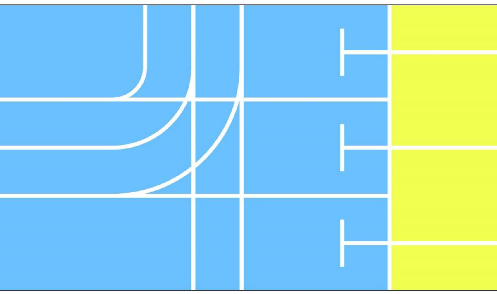

International Standards · ISL
Edition 2027 · effective 1 January 2027 · current
Retrieved on 26 November 2026 from https://www.wada-ama.org/sites/default/files/2026-09/2027_international_standard_for_laboratories_isl.pdf
Editions: 2027 (current) · 2021 · 2019 (v10.0) · 2016 (v9.0) · 2015 (v8.0) · 2012 (v7.0) · 2009 (v6.0) · 2008 (v5.0) · 2004 (v4.0)
p. 1
2027 International Standard for Laboratories
20
5.3.4.1.4

p. 2
International Standard for Laboratories
The World Anti-Doping Code International Standard for Laboratories is a mandatory International Standard developed as part of the World Anti-Doping Program. It was developed in consultation with Signatories, public authorities, Athletes, and other relevant WADA stakeholders.
The International Standard for Laboratories first came into effect in November 2002. It was subsequently amended multiple times, in the years 2003, 2004, 2008, 2009, 2012, 2015, 2016, 2019 and 2021. A revised version was approved by the WADA Executive Committee on 5 December 2025 and came into force on 1 January 2027.
Published by:
World Anti-Doping Agency Stock Exchange Tower 800 Place Victoria (Suite 1700) PO Box 120 Montreal, Quebec, Canada H3C 0B4
www.wada-ama.org
Tel:
Fax:
+1 514 904 9232
+1 514 904 8650
E-mail: code@wada-ama.org
p. 3
p. 4
p. 5
p. 6
PART ONE: INTRODUCTION, CODE PROVISIONS, TECHNICAL DOCUMENTS, AND INTERPRETATIONS
1.0 Introduction and Scope
1.1 WADA Laboratory Standards
1.1.1 International Standard for Laboratories
The main purpose of the International Standard for Laboratories (ISL) is to ensure that "Laboratories" (i.e., WADA-accredited Laboratories and WADA-approved ABP Laboratories) report valid test results based on reliable evidentiary data, and to facilitate harmonization in Analytical Testing of Samples by Laboratories and in the analysis of the Markers of the Hematological Module of the Athlete Biological Passport (ABP) by both Laboratories and ABP Laboratories.
The ISL sets out the requirements to be followed by Laboratories to ensure that they are technically competent, operate within an effective Management System, and are able to produce valid analytical results. The ISL includes, inter alia, a description of the WADA accreditation and ABP approval processes, including the requirements for obtaining and maintaining WADA Laboratory accreditation and WADA ABP Laboratory approval, as well as operating standards for the performance of Laboratories. The ISL also sets out requirements and guidance for Anti-Doping Organizations (ADOs) in relation to Sample custody and storage, Analytical Testing and some aspects of Results Management.
Compliance with the ISL and its associated ISL Technical Documents (TDs) and ISL Technical Letters (TLs) in effect at the time of Sample analysis, as opposed to another alternative standard, practice or procedure, shall be sufficient to conclude that the procedures covered by the ISL were performed properly. A failure by a Laboratory to follow a requirement in effect at the time of Analytical Testing, which has subsequently been eliminated from this ISL or applicable ISL TD(s) or ISL TL(s) at the time of a hearing, shall not serve as a defense to an Anti-doping Rule Violation.
1.1.2 ISL Technical Documents
ISL TDs are issued by WADA to provide comprehensive instructions to the Laboratories, ABP Laboratories and other WADA stakeholders on analytical or procedural issues. ISL TDs are modified and/or withdrawn by WADA as appropriate.
a) Approval and Publication of ISL TDs
A stakeholder consultation (including Laboratories, where applicable) shall be conducted for new ISL TD drafts.
i. The stakeholder consultation may not be needed for a revised draft of an existing ISL TD, as determined by WADA. This may include when p. 7 the implementation of the revised ISLTD is time sensitive (for example, to avoid detrimental Consequences on Athletes) or when low-impact editorial changes are needed (e.g., correction of typographical errors, formatting changes). Nevertheless, any such revisions of ISL TDs shall be reviewed and accepted by the Laboratory Expert Advisory Group (Lab EAG) before the presentation of the new ISL TD version to the WADA Executive Committee for approval.
ii. Final versions of ISL TDs are approved by the WADA Executive Committee and published on WADA's website.
b) Implementation of ISL TDs
i. Once approved and published, an ISL TD becomes an integral part of the ISL and supersedes any previous publication on a similar topic¹ , including ISL TLs and/or the ISL.
ii. The implementation of ISL TD requirements into the Laboratory's Management System is mandatory for obtaining and maintaining WADA accreditation or approval, as applicable, and for the application of the relevant Analytical Testing Procedure(s) (ATP) to the analysis of Samples.
iii. The implementation of the requirements detailed in an approved and published ISL TD may occur prior to the effective date for implementation specified in the ISL TD and shall occur no later than that effective date (deadline for implementation).
iv. If a Laboratory is not able to implement a new ISL TD by its effective date, it shall inform its customers and WADA as soon as possible. The Laboratory shall send a written request to WADA for an extension beyond the applicable effective date, providing the reason(s) for the delayed implementation of the ISL TD, any measures taken to ensure that Samples received in the Laboratory will be subject to Analytical Testing in compliance with the new ISL TD (for example, by subcontracting the analysis to another Laboratory), as well as plans for the implementation of the new ISL TD.
v. A failure by a Laboratory to implement an ISL TD by the effective date may result in the imposition of an Analytical Testing Restriction (ATR) against the Laboratory for that particular ATP or for the analysis of that particular class of Prohibited Substances or Prohibited Methods, or a Suspension of the Laboratory's WADA accreditation, or a Suspension of the Laboratory's approval for the analysis of the Markers of the Hematological Module of the ABP, as determined by WADA.
¹WADA shall provide guidance to Laboratories and other WADA stakeholders on the standard(s) that may be affected by a new or revised ISL TD or ISL TL in the Summary of Modifications that accompanies the publication of the approved version of the ISL TD or ISL TL.
p. 8
[Comment to Article 1.1.2 b): The effective date for implementation of an ISL TD shall be interpreted as the deadline, following approval and publication of the ISL TD, by which the ISL TD shall be implemented by Laboratories. However, Laboratories may implement an ISL TD as soon as it is approved by the WADA Executive Committee and published on WADA's website, provided that the requirements of the ISL TD have been implemented and documented in the Laboratory's Management System.]
c) Application of ISL TDs
i. When a newly approved version of an ISL TD lowers either a Decision Limit (DL) for a Threshold Substance or a Minimum Reporting Level (MRL) for a Non-Threshold Substance, as applicable, the revised limits specified in the new ISL TD shall not be applied to the reporting of analytical results for Samples collected before the effective date of the ISL TD, even if the Laboratory already implemented and documented the requirements of the new ISLTD in their Management System before the effective date.
[Comment to Article 1.1.2 c): For example, if the application of a newly approved ISL TD would result in an Adverse Analytical Finding (AAF) for a Sample with a collection date prior to the effective date of that new ISL TD, which would not have resulted in an AAF with the application of the version of the ISL TD in effect at the time of Sample collection (for example if the DL for a Threshold Substance has been lowered in the newly approved ISL TD), the Laboratory shall report the finding as a Negative Finding. In addition, the Laboratory shall record the details of the finding as a comment in the Test Report.]
ii. If the application of a newly approved ISL TD would lead to a result that benefits the Athlete [e.g., increase of the DL for a Threshold Substance or the MRL for a Non-Threshold Substance, establishment of more stringent identification criteria for qualitative chromatographic-mass spectrometric or electrophoretic Confirmation Procedure (CP)], then the new ISL TD shall be applied to the Analytical Testing of Samples as soon as it is approved by the WADA Executive Committee and published on WADA's website (i.e., prior to the effective date). Therefore, in cases where an analytical finding does not meet the new reporting criteria, as defined in the new ISL TD, then the test result shall be reported as a Negative Finding. WADA shall instruct the Laboratories about such situations (for example, as part of the ISL TD Summary of Modifications).
iii. Subject to the above, the analysis of Samples and the review of Analytical Data, in compliance with the new ISL TD, may be implemented once an ISL TD has been approved, and the Laboratory has implemented and documented the requirements of the new ISL TD in their Management System.
p. 9
1.1.3 ISL Technical Letters
ISL TLs are issued on an ad hoc basis to provide instructions to the Laboratories and other stakeholders on particular issues on the analysis, interpretation and reporting of results for specific Prohibited Substance(s) and/or Prohibited Method(s) or on the application of specific Laboratory procedures. ISL TLs are amended and/or withdrawn by WADA as appropriate.
a) Approval and Publication of ISL TLs
i. A stakeholder consultation (including Laboratories) shall be conducted for new ISL TL drafts.
ii. The stakeholder consultation may not be needed for a revised draft of an existing ISL TL, as determined by WADA. This may include when the implementation of the revised ISL TL is time sensitive (for example, to avoid detrimental Consequences on Athletes) or when low-impact editorial changes are needed (e.g., correction of typographical errors, formatting changes). Nevertheless, any such revisions of ISL TLs shall be reviewed and accepted by the Lab EAG before presentation of the new ISL TL version to the WADA Executive Committee for approval.
iii. Final versions of ISL TLs are approved by the WADA Executive Committee and published on WADA's website.
b) Implementation of ISL TLs
i. Once approved, an ISL TL becomes an integral part of the ISL and supersedes any previous publication on a similar topic¹ , including ISL TDs and/or the ISL.
ii. Approved ISL TLs become effective immediately, unless otherwise specified by WADA.
[Comment to Article 1.1.3 b): ISL TLs may require actions (e.g., validation of new Analytes or modifications to ATP(s), the procurement of Reference Materials - RMs - or Reference Collections - RCs), which may justify that its application cannot be immediate. In such cases, WADA shall make a time provision for implementation and specify an effective date for the ISL TL.]
iii. The implementation of the requirements of relevant ISL TLs into the Laboratory's Management System is mandatory for obtaining and maintaining WADA accreditation and for the application of the relevant ATP(s) to the analysis of Samples.
iv. If an approved ISL TL does not become effective immediately, as determined by WADA, the implementation of the requirements detailed in the approved and published ISL TL may occur prior to the effective date for implementation specified in the ISL TL and shall occur no later than that effective date (deadline for implementation).
v. A failure by a Laboratory to implement an ISL TL by the effective date may result in the imposition of an ATR against the Laboratory for that
p. 10
ATP or for the analysis of that class of Prohibited Substances or Prohibited Methods, or a Suspension of the Laboratory's WADA accreditation, as determined by WADA.
c) Application of ISL TLs
i. When a newly approved version of an ISL TL lowers, for example, an MRL for a Non-Threshold Substance, the revised limits specified in the new ISL TL shall not be applied to the reporting of analytical results for Samples collected before the effective date of the ISL TL (if the ISL TL does not become effective immediately), even if the Laboratory already implemented and documented the requirements of the new ISLTL in their Management System before the effective date.
ii. If the application of a newly approved ISL TL would lead to a result that benefits the Athlete [e.g., increase of the MRL for a Non-Threshold Substance), then the new ISL TL shall be applied to the Analytical Testing of Samples as soon as it is approved by the WADA Executive Committee and published on WADA's website (i.e., prior to the effective date, if not becoming effective immediately). Therefore, in cases where an analytical finding does not meet the new reporting criteria, as defined in the new ISL TL, then the test result shall be reported as a Negative Finding. WADA shall instruct the Laboratories about such situations (for example, as part of the ISL TL Summary of Modifications).
1.1.4 Laboratory Guidelines
Laboratory Guidelines (LGs) are issued to provide guidance to the Laboratories and other WADA stakeholders on new Analytical Methods or procedures approved by WADA. LGs are modified and/or withdrawn by WADA, as appropriate.
a) Approval and Publication of LGs
i. LGs may be consulted with WADA stakeholders (including Laboratories).
ii. Final versions of LGs are published on WADA's website after approval by the Lab EAG and become effective immediately, unless otherwise specified by WADA.
b) Application of LGs
The application of LGs is not mandatory. However, Laboratories are encouraged to follow, to the fullest extent possible, the recommendations of best practice included in the relevant LGs.
p. 11
1.1.5 Technical Notes
Technical Notes (TNs) are issued to Laboratories to provide detailed technical guidance on the performance of specific Analytical Methods or procedures.
a) Approval of TNs
i. TNs are not subject to consultation with WADA stakeholders.
ii. TNs are approved by the Lab EAG.
iii. TNs are provided on a confidential basis to Laboratories only and are not published on WADA's website. The Laboratory may provide hard copies of TNs to representatives from ISO/IEC 17025 Accreditation Bodies (ABs), confidentially and upon request, for use during Laboratory AB Assessments.
b) Application of TNs
The application of the recommendations detailed in TNs is not mandatory. However, Laboratories are encouraged to follow, to the fullest extent possible, the technical guidance included in TNs.
1.2 Sample Analysis
Sample analysis is part of the Analytical Testing process and involves the detection, identification, and in some cases demonstration of the presence above a Threshold or determination of the exogenous origin, of Analyte(s) of Prohibited Substance(s) or Prohibited Method(s) in human biological fluids or tissues.
Laboratories may accept samples for other forms of analysis, subject to the provisions of the ISL Code of Ethics (see Article 8.0), which are not under the Scope of WADA Accreditation or ABP approval (e.g., animal sports testing, forensic testing, clinical testing, drugs of abuse testing) and, therefore, shall not be subject to the requirements of the ISL, ISL TDs or ISL TLs. For the avoidance of doubt, Test Reports or other documentation or correspondence from Laboratories shall not declare or represent that any such testing is covered under their WADA accreditation or ABP approval status.
1.3 WADA Laboratory Accreditation Framework and ABP Laboratory Approval
The WADA Laboratory accreditation and ABP Laboratory approval framework consists of two (2) main elements: Part Two of the ISL (Laboratory accreditation and ABP Laboratory approval requirements and operating standards) and Part Three (the Annex A and Appendix 1).
a) Part Two of the ISL describes the requirements necessary to obtain and maintain WADA accreditation (Article 4.1) and WADA approval for the ABP (Article 4.2) and the procedures involved to fulfill these requirements, as well as the specific requirements to conduct Analytical Testing during Major Events (Article 4.3). It also includes the application of ISO/IEC 17025² to the field of Doping Control (Article
²Effective version of ISO/IEC 17025.
p. 12
5.0), a brief description of the WADA Laboratory monitoring and performance evaluation activities (Article 6.0) as well as the Laboratory disciplinary procedures (Article 7.0) and the ISL Code of Ethics (Article 8.0). The purpose of Part Two of the ISL is to enable the consistent application of ISO/IEC 17025 and ISL-specific requirements to Analytical Testing for Doping Control by Laboratories, as well as to facilitate the Assessment of Laboratory compliance by ABs and WADA.
b) Part Three of the ISL includes the Annex A (Procedural Rules), which describes the procedural rules for the Disciplinary Committee (DC) of the ISL, as well as the Appendix 1 (Definitions from the Code and other International Standards that are cited in the ISL, as well as ISL Definitions).
To harmonize the accreditation of Laboratories to the requirements of ISO/IEC 17025 and the approval of ABP Laboratories to the requirements of ISO/IEC 17025 (or ISO 15189), as well as the WADA-specific requirements for accreditation or approval, ABs are required to use the ISL, ISL TDs, ISL TLs and LGs as reference documents in their assessment process.
[Comment to Article 1.3: While Laboratories are required to be accredited to the requirements of ISO/IEC 17025 (applicable to testing and calibration laboratories), ABP Laboratories may be accredited to either the ISO/IEC 17025 or ISO 15189 (applicable to medical laboratories) standards.]
Continued Laboratory WADA accreditation or approval for the ABP is based on satisfactory performance in the applicable External Quality Assessment Scheme (EQAS) and in routine Analytical Testing. The EQAS performance of Laboratories is continually monitored by WADA and reviewed as part of their AB Assessment process, as applicable. Therefore, the Laboratory shall not be subject to challenge or to demands to produce EQAS data or related EQAS documentation by third parties.
2.0 Code Provisions
The following Articles in the 2027 Code are directly relevant to the ISL; they can be obtained by referring to the Code itself:
- Code Article 2.1 Presence of a Prohibited Substance or its Metabolites or Markers in an Athlete's Sample
- Code Article 2.5 Tampering or Attempted Tampering with any Part of Doping Control by an Athlete or Other Person
- Code Article 4.5 Monitoring Program
- Code Article 6.2 Purpose of Analysis of Samples and Assessment of Analytical Data
- Code Article 6.3 Research on Samples and Data
- Code Article 6.4 Standards for Sample Analysis and Reporting
- Code Article 6.5 Additional Analysis of a Sample Prior to or During Results Management
- Code Article 6.6 Further Analysis of a Sample after it has been Reported as Negative or has Otherwise not Resulted in an Anti-Doping Rule Violation Charge
- Code Article 6.8 WADA's Right to Take Possession of Samples and Data
p. 13
- Code Article 13.7 Appeals from Decisions Suspending or Revoking Laboratory Accreditation
- Code Article 14.3 Public Disclosure
- Code Article 19 Research
- Code Article 19.4 Research Practices
- Code Article 19.5 Research Using Prohibited Substances and Prohibited Methods
3.0 ISL Technical Documents and Interpretation
3.1 ISL Technical Documents cited in this version of the ISL³
i. ISL TD APMU - Athlete Passport Management Unit Requirements and Procedures.
ii. ISL TD ATP - Analytical Testing Procedures.
iii. ISL TD BSM - Analytical and Reporting Requirements for the Blood Markers of the Steroidal Module of the Athlete Biological Passport.
iv. ISL TD CG/LH - Analysis, Reporting and Management of Urinary Human Chorionic Gonadotrophin (hCG) and Luteinizing Hormone (LH) Findings in Male Athletes.
v. ISL TD DBS - Dried Blood Spots (DBS) for Doping Control. Requirements and Procedures for Analytical Testing and Sample Storage.
vi. ISL TD DL - Decision Limits for the Confirmatory Quantification of Exogenous Threshold Substances.
vii. ISL TD ENDO - Analytical and Reporting Requirements for the Blood Markers of the Endocrine Module of the Athlete Biological Passport.
viii. ISL TD EPO - Harmonization of Analysis and Reporting of Erythropoietin (EPO)- Receptor Agonists (ERAs) and Transforming Growth Factor-beta (TGF-b) Signalling Inhibitors by Polyacrylamide Gel Electrophoretic (PAGE) Analytical Methods.
ix. ISL TD EQAS - External Quality Assessment Scheme.
x. ISL TD GD - Gene Doping Detection by Polymerase Chain Reaction-based Test Methods.
xi. ISL TD GH - Human Growth Hormone (hGH) Isoform Differential Immunoassays for Doping Control Analyses.
xii. ISL TD HBT - Detection of Homologous Blood Transfusion (HBT) by Flow Cytometry.
³Additional new ISL TDs may be drafted and published by WADA, which are not cited in this version of the ISL and, therefore, are not listed in this Article 3.1. Such new ISL TDs shall nevertheless be considered an integral part of the ISL and shall supersede any previous publication on a similar topic, including ISL TLs and/or the ISL.
p. 14
xiii. ISL TD HEM - Analytical and Reporting Requirements for the Markers of the Hematological Module of the Athlete Biological Passport.
xiv. ISL TD IDCR - Minimum Criteria for Chromatographic-Mass Spectrometric Confirmation of the Identity of Analytes for Doping Control Purposes.
xv. ISL TD IRMS - Detection of Synthetic Forms of Prohibited Substances by GC/C/IRMS.
xvi. ISL TD LCOC - Laboratory Chain of Custody.
xvii. ISL TD LDOC - Laboratory Documentation Package.
xviii. ISL TD MRL: Minimum Reporting Levels applied in Doping Control.
xix. ISL TD MRPL - Minimum Required Performance Levels for Non-Threshold Substances.
xx. ISL TD NA: Harmonization of Analysis and Reporting of 19-Norsteroids
xxi. ISL TD PERF - Laboratory Performance Evaluation.
xxii. ISL TD USM - Analytical and Reporting Requirements for the Urinary Markers of the Steroidal Module of the Athlete Biological Passport.
xxiii. ISL TD VAL - Minimum Requirements for Validation of Analytical Testing Procedures for Doping Control.
3.2 Interpretation
The official text of the ISL shall be published in English and French. In the event of any conflict between the English and French versions, the English version shall prevail.
Like the Code, the ISL has been drafted giving consideration to the principles of proportionality, human rights, and other applicable legal principles. It shall be interpreted and applied in that light.
The comments annotating various provisions of the ISL shall be used to guide its interpretation.
Unless otherwise specified, references to Articles or Annex are references to Articles or the Annex of the ISL.
Where the term "days" is used in the ISL, it shall mean calendar days (i.e., all the days of the week including any non-working days) unless otherwise specified.
Terms used in this ISL that are defined terms from the Code are italicized. Terms that are defined in International Standards are underlined.
Defined terms from the Code and International Standards that are used in the ISL are found in Appendix 1.
The ISL TDs and ISL TLs have the same mandatory status as the rest of the ISL and constitute an integral part of it.
p. 15
Annex A to the ISL has the same mandatory status as the rest of the International Standard.
The following terms used in the ISL shall be interpreted as indicated:
- "Shall" to indicate a mandatory requirement.
- "Should" to indicate a recommendation.
p. 16
PART TWO: LABORATORY ACCREDITATION AND ABP LABORATORY APPROVAL REQUIREMENTS AND OPERATING STANDARDS
4.0 Process and Requirements for WADA Laboratory Accreditation, ABP Laboratory Approval and Laboratory Accreditation for Major Events
4.1 WADA Laboratory Accreditation
4.1.1 Applicant laboratory for WADA Accreditation
In principle, any laboratory that satisfies the criteria listed below may apply to become a Candidate laboratory for WADA accreditation. However, the WADA Executive Committee, at its sole discretion, may accept or deny a laboratory's application based on the identified needs (or lack thereof) for anti-doping Analytical Testing on a regional or national scale, or for any other reason(s). The decision of the WADA Executive Committee shall be provided to the Applicant laboratory in writing.
4.1.1.1 Expression of Interest
The Applicant laboratory shall officially contact WADA in writing to express its interest in becoming a WADA-accredited Laboratory. At this stage, WADA may provide clarifications to the laboratory on the WADA accreditation process, including advice on the initial fee to be paid once the laboratory is approved by the WADA Executive Committee as a Candidate laboratory (see Article 4.1.2.1).
4.1.1.2 Submit Initial Application Form
The Applicant laboratory shall submit a completed Application Form, provided by WADA, duly signed by the laboratory Director and, if relevant, by the Director of the host organization (e.g., university, hospital, private organization, public institution).
A laboratory may only apply if its host country satisfies the following conditions:
a) It has a robust National Anti-Doping Program [in terms of Test Distribution Plan (TDP), Sample collection and Results Management activities] conducted by a National Anti-Doping Organization (NADO), which is compliant with the Code and the International Standards of the World Anti-Doping Code.
[Comment to Article 4.1.1.2 a): The National Anti-Doping Program in the host country of the Applicant laboratory shall have demonstrated, in the most recent full year, that their Sample collection activities were conducted in compliance with the International Standard for Testing (IST) and the IST TD on Sport Specific Analysis (IST TD SSA), as determined by WADA, and analyzed in a Laboratory(-ies).
By way of exception to this requirement, WADA may consider accepting an Applicant laboratory from a country where the application is supported by other ADOs in the region, which would guarantee a robust Regional Anti-Doping Program.]
p. 17
b) It has ratified the UNESCO Convention against Doping in Sport, and
c) It has paid the annual financial contribution to WADA.
These conditions shall be confirmed by WADA and documented as part of the application.
4.1.1.3 Provide Letters of Support
The Applicant laboratory shall submit the following letters of support with their application:
a) Official letter(s) of support from the laboratory's host organization(s), which is acceptable to WADA (e.g., universities, hospitals, private organizations and/or public institutions). The letter(s) of support shall guarantee sufficient annual financial support for a minimum of three (3) years, the provision of adequate analytical facilities, instrumentation, and human resources, as well as support for training programs and Research and Development (R&D) activities.
b) Official letter(s) of support from Signatory(-ies) [e.g., NADO(s) responsible for National Anti-Doping Program(s), International Federation(s) responsible for International Anti-Doping Program(s)] and/or Delegated Third Party(-ies) (DTP) in charge of Sample collection on behalf of ADO(s), collectively guaranteeing a minimum total number of 3,000 Samples (including urine, whole blood⁴ and DBS Samples) annually, of which at least 2,500 shall be urine Samples.
[Comment to Article 4.1.1.3 b): To determine the minimum number of Samples, each Sample type (urine, whole blood, or DBS) analyzed by the Laboratory shall count as an individual Sample.]
c) A declaration by the supporting Signatory(-ies) that their relationship with the Applicant laboratory is compliant with Article 4.1.4.2.5.
4.1.1.4 Provide Business Plan
The Applicant laboratory shall submit a business plan, upon request by WADA, which shall include market considerations (customers, number of Samples, maintenance costs, etc.), facility, instrumental, staffing and training plans, and guarantees for the long-term provision (minimum of three (3) years) of adequate financial and human resources to the laboratory. The business plan shall be provided by the Applicant laboratory within eight (8) weeks of WADA's request.
⁴Whole blood Samples may be venous or liquid capillary blood. Analysis can be performed on the whole blood or on the separated plasma or serum fraction obtained following Sample centrifugation. Whether serum or plasma is obtained depends on the tube used for the Sample collection (see also Article 5.3.3.2).
p. 18
4.1.2 Candidate laboratory for WADA Accreditation
The application materials described in Articles 4.1.1.1 to 4.1.1.4 shall be evaluated by WADA. If WADA, upon advice by the Lab EAG, determines that the Applicant laboratory has satisfactorily met the criteria of Article 4.1, a recommendation shall be forwarded to the WADA Executive Committee, which shall determine whether the laboratory shall be granted WADA Candidate laboratory status and thereby continue within the WADA accreditation process. Additional supporting documentation may be requested by, and at the discretion of, the WADA Executive Committee. The decision of the WADA Executive Committee shall be provided to the Applicant laboratory in writing.
4.1.2.1 Payment of Initial Fee
Cited by 1
Once approved by the WADA Executive Committee, the Candidate laboratory shall pay a one-time non-refundable fee to WADA to cover the costs related to the initial stages of the accreditation process, including the review of documentation and any necessary follow-ups, as well as the preparation, characterization, and shipment of the EQAS samples necessary for the Pre-Probationary Test (PPT) - see Article 4.1.2.7. This fee shall be determined by WADA and shall be specified in the Initial Application Form.
4.1.2.2 Candidate laboratory Administrative and Technical Capabilities
Once approved by the WADA Executive Committee, the Candidate laboratory shall complete a detailed questionnaire provided by WADA regarding the status of their administrative and technical capabilities and submit it to WADA within eight (8) weeks following receipt. The questionnaire shall include, but is not limited to, the following information:
a) Sources of laboratory funding (list of laboratory sponsors).
b) Staff list and their qualifications.
c) Description of the laboratory facilities and physical security (see Article 5.2.3.1).
d) Description of the laboratory Information Technology (IT) infrastructure and security (see Article 5.2.3.5).
e) List of actual and proposed instrumental resources and equipment.
f) Status of ISO/IEC 17025 accreditation.
g) Status and details of their ATPs:
i. Status of validated Initial Testing Procedures (ITPs) and Confirmation Procedures (CPs), including target Analytes and Limits of Detection (LODs), Limits of Identification (LOIs) and, where applicable, Limits of Quantification (LOQs) and Measurement Uncertainties (MUs).
p. 19
ii. Status of method development and validation, including, at minimum, Validation Reports for all mandatory Analytical Methods (if completed) - see the ISL TD ATP.
iii. Status of available RMs and RCs and plans for acquisition.
h) Description of customs regulations in the host country with respect to the importation of Samples and EQAS samples, RMs and consumables from abroad and the ability to ship Samples outside the country as needed.
i) A description of how the principles of the ISL Code of Ethics (see Article 8.0) are integrated into the laboratory's Management System as described in Article 4.1.2.3. A letter of compliance with the ISL Code of Ethics signed by the laboratory Director shall be provided.
WADA may require an update of this documentation during the process of accreditation.
4.1.2.3 Compliance with the ISL Code of Ethics
The Candidate laboratory shall implement and comply with the provisions of the ISL Code of Ethics (see Article 8.0).
a) A Candidate laboratory shall not conduct any anti-doping Analytical Testing activities for ADOs and shall not accept Samples directly from individual Athletes or from individuals or organizations acting on their behalf.
b) The Director of the Candidate laboratory shall provide the ISL Code of Ethics to all laboratory employees and ensure their understanding and compliance with all aspects of the ISL Code of Ethics.
4.1.2.4 Independence and Impartiality
Prior to entering the probationary period, the Candidate laboratory shall complete a WADA independence and impartiality questionnaire which demonstrates that, before obtaining WADA accreditation, the laboratory shall comply with the requirements of Laboratory independence and impartiality indicated in Article 4.1.4.2.5.
4.1.2.5 Establish a Mentoring Agreement
a) The Candidate laboratory shall establish agreement(s) (contract or Memorandum of Understanding) with a Laboratory(-ies) for mentoring and training, at least, up to the end of the probationary phase of accreditation to ensure successful preparation towards obtaining the WADA accreditation.
b) A Candidate laboratory shall obtain authorization from WADA to receive sensitive anti-doping information (e.g., methodological or p. 20 technological information, TNs or any other non-public information) and/or access to specific, WADA-developed anti-doping tests or materials (e.g., kits, RMs). WADA shall approve such authorizations on a case-by-case basis according to the Candidate laboratory's documented roadmap, business plan and the progress made during the accreditation process and shall be subject to the Candidate laboratory entering into a confidentiality agreement with WADA and/or the mentoring Laboratory(-ies) that will provide the information and/or access to the aforementioned tests and materials.
4.1.2.6 Analytical Testing Procedures of Candidate laboratory
As part of the candidate phase of WADA accreditation, and in preparation for the PPT EQAS, a Candidate laboratory is expected to acquire the necessary RMs to develop their Analytical Testing capacity to analyze a defined list of Prohibited Substances and Prohibited Methods (provided by WADA) in compliance with the ISL and relevant ISL TDs and ISL TLs. Prior to the scheduling of the PPT and On-site Assessment, the Candidate laboratory shall provide documentation to WADA demonstrating that the required Analytical Testing capacity has been achieved.
4.1.2.7 Pre-Probationary Test and On-site Assessment
Cited by 1
A PPT and On-site Assessment shall be conducted once WADA has concluded that the laboratory has successfully met the requirements described in Articles 4.1.2.1 to 4.1.2.6, and the Candidate laboratory has confirmed its readiness to proceed. At WADA's discretion, the PPT and On-site Assessment may be conducted separately or at the same time.
a) Timeline: The Candidate laboratory should be prepared for the PPT and On-site Assessment within two (2) years of WADA Executive Committee's approval of its Candidate laboratory status. Any nonconformities identified during the On-site Assessment or resulting from the Candidate laboratory's performance in the PPT EQAS shall be satisfactorily resolved, as determined by the Lab EAG, by the end of the three (3) year period, unless otherwise determined by WADA (see Article 4.1.2.8).
b) PPT EQAS: As part of the PPT, the Candidate laboratory shall analyze at least ten (10) blind EQAS samples. The general composition and content of the blind EQAS samples and the evaluation of laboratory EQAS results are described in the ISL TD EQAS and the ISL TD PERF, respectively. However, the Candidate laboratory is not expected at this stage to have implemented all Analytical Methods or to be able to analyze all Prohibited Substances and Prohibited Methods included in the Analytical
p. 21
Testing menus of Laboratories. In this regard, WADA shall provide guidance to the Candidate laboratory in advance of the PPT.
c) PPT EQAS reporting: The Candidate laboratory shall report the results for the PPT blind EQAS samples in ADAMS within twenty (20) days, unless otherwise notified by WADA.
i. Upon request, the Candidate laboratory shall provide WADA with a Laboratory Documentation Package (LDOC) for selected EQAS sample(s) for which there is an AAF. Additional data may be required upon WADA's request. This documentation shall be submitted within ten (10) days of WADA's request or as otherwise indicated by WADA.
ii. For selected EQAS samples with Negative Findings, WADA may request all or a portion of the ITP data.
d) PPT EQAS evaluation: After receiving the PPT EQAS results, WADA shall inform the Candidate laboratory of the evaluation of its performance and provide guidance for improvement. Corrective Actions for nonconformities, if any, shall be conducted and reported by the Candidate laboratory to WADA within thirty (30) days, or as otherwise indicated by WADA.
e) PPT On-site Assessment: WADA shall conduct the On-site Assessment of the Candidate laboratory at the laboratory's expense. The purpose of this assessment is to obtain information about different aspects of the laboratory's competence, which are relevant to the WADA accreditation and to clarify any issues regarding the accreditation process.
If relevant, a representative of the laboratory's ISO/IEC 17025 AB may be invited as an observer to the WADA On-site Assessment.
f) PPT On-site Assessment evaluation: WADA shall provide a PPT Assessment Report regarding the outcomes of the On-site Assessment, including any identified nonconformity(-ies), to allow the Candidate laboratory to implement the necessary improvements.
i. Assessment findings for major and minor nonconformities, if requested by WADA, shall be addressed by the Candidate laboratory and reported to WADA within thirty (30) days or as otherwise indicated by WADA.
ii. The nonconformities identified in the WADA PPT Assessment Report shall be satisfactorily addressed, as determined by the Lab EAG, before the Candidate laboratory can be accepted as a WADA Probationary laboratory.
p. 22
iii. The Candidate laboratory's performance in the PPT EQAS and On-site Assessment shall be considered in the overall review of the Candidate laboratory's application and may affect the timeliness of the Candidate laboratory's entry into the probationary phase of accreditation.
4.1.2.8 Duration of Candidate Phase of WADA Accreditation
a) The maximum length of time during which a laboratory can remain as a Candidate laboratory is three (3) years, unless WADA determines that there are exceptional circumstances that justify an extension of this period.
b) A Candidate laboratory that fails to meet the requirements to enter the probationary phase of accreditation after three (3) years, or after any extension(s) to this period exceptionally approved by WADA, shall lead to a Lab EAG recommendation to the WADA Executive Committee to have its Candidate laboratory status revoked.
c) Upon request, a revoked Candidate laboratory that wishes to continue seeking WADA accreditation shall be required to reapply for Candidate laboratory status as described in Article 4.1.1. WADA shall review each re-application on its own merits on a case-by-case basis and retains the right to reject repeated applications.
4.1.3 Probationary laboratory for WADA Accreditation
4.1.3.1 Entering the Probationary Phase of WADA Accreditation
Upon satisfactory completion of all Candidate laboratory requirements (as per Article 4.1.2), a Candidate laboratory may enter the probationary phase of WADA accreditation as a Probationary laboratory, as determined by WADA (upon advice by the Lab EAG).
4.1.3.2 Payment of Probationary Phase Fee
Prior to entering the probationary period, the Candidate laboratory shall pay WADA a one-time non-refundable fee to cover the costs related to the probationary phase activities, including the review of documentation and any necessary follow-ups, as well as the preparation, characterization, and shipment of the EQAS samples necessary for the probationary period and the Final Accreditation Test (FAT) - see Articles 4.1.3.5. and 4.1.3.8. This fee shall be determined by WADA.
4.1.3.3 Compliance with the ISL Code of Ethics
The Probationary laboratory shall implement and comply with the provisions of the ISL Code of Ethics (see Article 8.0).
a) A Probationary laboratory shall not conduct any anti-doping Analytical Testing activities for ADOs and shall not accept Samples p. 23 directly from individual Athletes or from individuals or organizations acting on their behalf.
b) The Director of the Probationary laboratory shall provide the ISL Code of Ethics to all laboratory employees and ensure their understanding and compliance with all aspects of the ISL Code of Ethics.
4.1.3.4 Provide Renewed Letters of Support
The Probationary laboratory shall submit renewed letters of support upon WADA request:
a) Official letter(s) of support from the laboratory's host organization(s) (e.g., universities, hospitals, private organizations and/or public institutions). The letter(s) of support shall guarantee sufficient annual financial support for a minimum of three (3) years, the provision of adequate analytical facilities, instrumentation, and human resources, as well as support for training programs and R&D activities.
b) Official letter(s) of support from Signatory(-ies) [e.g., NADO(s) responsible for National Anti-Doping Program(s), International Federation(s) responsible for International Anti-Doping Program(s)] and/or DTP(s) in charge of Sample collection on behalf of ADO(s). The letter(s) of support shall indicate a commitment to provide the Laboratory with a minimum total of 3,000 Samples (including urine, whole blood⁴ and DBS Samples) annually, of which at least 2,500 shall be urine Samples, by the end of the first full calendar year after obtaining WADA accreditation.
[Comment to Article 4.1.3.4 b): To determine the minimum number of Samples, each Sample type (urine, whole blood, or DBS) analyzed by the Laboratory shall count as an individual Sample.]
c) A declaration by the supporting Signatory(-ies) that their relationship with the Probationary laboratory is compliant with Article 4.1.4.2.5.
4.1.3.5 Analytical Testing Procedures of Probationary laboratory
a) Before entering the probationary phase, WADA shall inform the Candidate laboratory, in writing, of the minimum analytical requirements (Test Methods and target Analytes) that shall be validated, in compliance with the ISL and relevant ISL TDs and ISL TLs, for the laboratory to be able to participate in the EQAS during the probationary phase.
b) Prior to the scheduling of the FAT and On-site Assessment (see Article 4.3.1.8), the Probationary laboratory shall provide WADA with documentation to assess whether the required laboratory Analytical Testing capacity (refer to ISL TD ATP) has been reached.
p. 24
4.1.3.6 Participate in the WADA External Quality Assessment Scheme
As part of the probationary phase, the Probationary laboratory is expected to gradually develop full capacity for the analysis of Prohibited Substances and Prohibited Methods as required from Laboratories.
a) During the probationary period, the Probationary laboratory shall successfully analyze at least fifteen (15) blind EQAS samples, distributed over multiple EQAS rounds within a period of approximately twelve (12) months. During this period, WADA shall provide feedback to assist the Probationary laboratory to improve the quality of its ATPs.
b) The Probationary laboratory shall successfully report the results for the blind EQAS samples to WADA, in accordance with the ISL TD EQAS, within a period determined by WADA. The general composition and content of the blind EQAS samples and the evaluation of laboratory EQAS results are described in the ISL TD EQAS and the ISL TD PERF, respectively.
4.1.3.7 Obtain ISO/IEC 17025 Accreditation
The Probationary laboratory shall obtain ISO/IEC 17025 accreditation from an AB, with primary reference to the interpretation and application of the ISO/IEC 17025 requirements to the analysis of Samples (see Article 5.0) before the end of the probationary period (i.e., before WADA grants accreditation) and, if possible, before the FAT.
a) The AB shall be a full member of the Global Accreditation Cooperation Incorporated (Global ACI) and a signatory to the Mutual Recognition Arrangement (MRA) of the Global ACI or, if not, it shall be full member of one of the approved and recognized Regional Accreditation Cooperation Bodies:
- African Accreditation Cooperation (AFRAC).
- Arab Accreditation Cooperation (ARAC).
- Asia Pacific Accreditation Cooperation Inc. (APAC).
- European co-operation for Accreditation (EA).
- Inter American Accreditation Cooperation (IAAC).
- Southern African Development Community Cooperation in Accreditation (SADCA).
b) The AB should send a summary of the ISO/IEC 17025 Assessment Report and any Corrective Action documentation addressing nonconformities, in English or French, to WADA. Should the Probationary laboratory prefer to send the information directly to WADA, the laboratory shall do so within a reasonable timeline.
p. 25
4.1.3.8 WADA Accreditation Assessment - Final Accreditation Test
A FAT and On-site Assessment shall be conducted once WADA has determined that the Probationary laboratory has successfully completed all the requirements of the probationary period, and the Probationary laboratory has confirmed its readiness to proceed. At WADA's discretion, the FAT and On-site Assessment may be conducted separately or at the same time.
The FAT shall assess both the scientific competence and the capability of the Probationary laboratory to manage multiple Samples.
a) Timeline: The Probationary laboratory should prepare to participate in the FAT and On-site Assessment within two (2) years of obtaining their probationary status. The Probationary laboratory shall satisfactorily address, as determined by WADA, all identified nonconformities and meet all conditions under Article 4.1.3 by the end of the three (3) year period, unless otherwise determined by WADA (see Article 4.1.3.12). At this stage, the Probationary laboratory is expected to have developed full capacity for the analysis of Prohibited Substances and Prohibited Methods as required from Laboratories (see ISL TD ATP). Therefore, compliance with the defined requirements for the application of ISO/IEC 17025 to the analysis of Samples, the ISL and other WADA Laboratory standards (ISL TDs, ISL TLs), and the practice and documentation of the laboratory, shall be assessed
b) FAT EQAS: As part of the FAT, the Probationary laboratory shall analyze a minimum of fifteen (15) blind EQAS samples. The general composition and content of the blind EQAS samples and the evaluation of Laboratory EQAS results are described in the ISL TD EQAS and the ISL TD PERF, respectively.
c) FAT EQAS reporting: The Probationary laboratory shall successfully report the results for the FAT EQAS samples to WADA within seven (7) days of opening the samples, unless otherwise determined by WADA. In addition:
i. Upon request, the Probationary laboratory shall provide WADA with LDOCs for selected EQAS samples for which there is an AAF. Additional data may be required upon WADA's request. This documentation shall be submitted within ten (10) days of WADA's request or as otherwise indicated by WADA.
ii. For EQAS samples with Negative Findings, WADA may request all or a portion of the ITP data.
d) FAT EQAS evaluation: After receiving the FAT EQAS results, WADA shall inform the Probationary laboratory of the evaluation of its performance.
p. 26
i. Corrective Actions for nonconformities, if any, shall be conducted and reported by the Probationary laboratory to WADA within thirty (30) days, or as otherwise indicated by WADA.
ii. The nonconformities identified in the FAT EQAS shall be satisfactorily addressed by the Probationary laboratory and the recommendations for improvement should be implemented before accreditation can be granted.
e) FAT On-site Assessment: WADA shall conduct the On-site Assessment of the Probationary laboratory at the Probationary laboratory's expense.
Representative(s) of the AB may be invited as observers to the WADA On-Site Assessment.
f) FAT On-site Assessment evaluation: WADA shall provide a FAT Assessment Report with the outcomes of the On-site Assessment, including any identified nonconformity(-ies) for the Probationary laboratory to implement the necessary improvements.
i. Identified nonconformities shall be addressed by the Probationary laboratory and corrective measures reported to WADA within thirty (30) days, or as otherwise indicated by WADA.
ii. The nonconformities identified in the FAT Assessment Report shall be satisfactorily addressed by the Probationary laboratory before accreditation can be granted.
g) The Probationary laboratory's performance in the FAT EQAS and On-site Assessment shall be considered in the overall review of the Probationary laboratory's application and may affect the Probationary laboratory's timeliness for obtaining WADA accreditation.
i. If following the FAT EQAS and On-site Assessment, WADA determines that nonconformities have not been satisfactorily addressed and that, consequently, the Probationary laboratory should not be accredited, the laboratory shall have a maximum of one (1) year to correct and improve any pending nonconformity(-ies).
ii. The provision of documentation, the analysis of additional EQAS samples and/or an additional Assessment (On-site, Remote or as a Documentary Audit, as determined by WADA), may be required and conducted at the Probationary laboratory's expense.
iii. A Probationary laboratory that fails to provide satisfactory improvements, as determined by WADA, after one (1) year from p. 27 the date that the Assessment Report is issued may be required to reapply for Candidate laboratory status as described in Article 4.1 (see also Article 4.1.3.12).
4.1.3.9 Plan and Implement Research and Development and Sharing of Knowledge Activities
Prior to obtaining WADA accreditation, the Probationary laboratory shall develop a plan for its R&D and Sharing of Knowledge activities in the field of anti-doping science, for the initial two (2)-year period following WADA accreditation, including the following requirements:
a) At least two (2) anti-doping-related R&D activities (e.g., new research projects, Analytical Method development, drug administration studies) shall be initiated as soon as possible and implemented within the probationary period. The research activities may be carried out either by the Probationary laboratory alone or in cooperation with Laboratories or in association with research organizations.
b) Demonstrated willingness and ability to collaborate and share knowledge with Laboratories.
As part of its laboratory monitoring activities, WADA may request documented evidence of the R&D and Sharing of Knowledge activities in the field of anti-doping science undertaken by the Probationary laboratory.
4.1.3.10 Independence and Impartiality
Before WADA grants accreditation, the Probationary laboratory shall provide documentation to WADA demonstrating compliance with the requirements of Laboratory independence and impartiality established in Article 4.1.4.2.5.
4.1.3.11 Obtain Professional Liability Insurance Coverage
Before WADA grants accreditation, the Probationary Laboratory shall provide documentation to WADA demonstrating that professional liability risk insurance coverage has been obtained to cover liability of no less than two (2) million USD annually.
4.1.3.12 Duration of Probationary Phase of WADA Accreditation
a) The maximum length of time during which a laboratory can remain as a Probationary laboratory is three (3) years, unless WADA determines that there are exceptional circumstances that justify an extension of this period.
b) A Probationary laboratory that fails to meet the requirements to become WADA-accredited after three (3) years may lead to a Lab
p. 28
EAG recommendation to the WADA Executive Committee to revoke its probationary status.
c) The decision of the WADA Executive Committee to revoke a Probationary laboratory status shall be provided to the Probationary laboratory in writing.
d) If a laboratory whose probationary status has been revoked wishes to continue its WADA accreditation process, it shall be required to reapply for Candidate laboratory status as described in Article 4.1.
4.1.4 WADA-Accredited Laboratory
4.1.4.1 Obtaining WADA accreditation
4.1.4.1.1 Granting WADA Accreditation
a) Once the Lab EAG has evaluated the Probationary laboratory's progress and determined that all accreditation requirements (outlined in Articles 4.1.3.2 to 4.1.3.11) have been satisfactorily met, the Lab EAG shall submit a recommendation that the laboratory be granted WADA accreditation to the WADA Executive Committee for approval.
b) The new Laboratory shall obtain a second opinion from another Laboratory(-ies) before reporting an AAF or Atypical Finding (ATF), for a period of one (1) year after obtaining WADA accreditation. WADA may extend the second opinion requirement beyond one (1) year.
4.1.4.1.2 Issuing and Publishing of WADA Accreditation Certificate
a) A WADA Accreditation Certificate shall be issued in recognition of the Laboratory's WADA accreditation. The Accreditation Certificate shall specify the name of the Laboratory and the period for which the Accreditation Certificate is valid. Accreditation Certificates may be issued after the effective date, with retroactive effect.
b) A list of Laboratories, and relevant contact information, shall be published on WADA's website.
p. 29
4.1.4.2 Maintaining WADA Accreditation
A Laboratory shall comply with the following requirements to maintain WADA accreditation:
4.1.4.2.1 Payment of Annual Re-Accreditation Fee
WADA shall invoice the Laboratory for a non-refundable annual re-accreditation fee to partially cover the costs related to the re-accreditation process, including the Laboratory's participation in the WADA EQAS as well as other Laboratory-related monitoring activities. This fee shall be determined by WADA.
4.1.4.2.2 Document Compliance with the ISL Code of Ethics
The Laboratory shall maintain and document compliance with the provisions of the ISL Code of Ethics (see Article 8.0).
a) All staff employed at the Laboratory, permanent or temporary, shall also read, agree to and sign the ISL Code of Ethics.
b) The Laboratory shall establish a system requiring Laboratory staff to report any alleged breaches of the ISL Code of Ethics to the Laboratory Director, which the Laboratory Director shall report to WADA. However, if Laboratory staff suspect that the Laboratory Director may have breached the ISL Code of Ethics, the Laboratory staff shall report the alleged breaches of the ISL Code of Ethics directly to WADA. The Laboratory Director and/or the Laboratory's host organization and/or WADA, as applicable, shall immediately and thoroughly investigate any alleged breach of the ISL Code of Ethics.
c) If the Laboratory's investigation determines that a breach of the ISL Code of Ethics occurred, the Laboratory Director and/or the Laboratory's host organization shall immediately inform WADA of the results of the investigation and the disciplinary actions taken. WADA may also request further sanctions or implement sanctions as a result of its own investigation. Sanctions may range from a personal reprimand to the expulsion of the implicated Laboratory staff member(s), the reporting of the breach to the pertinent authorities (e.g., law enforcement) or the Suspension or Revocation of the Laboratory's WADA accreditation.
p. 30
d) On an annual basis, and upon WADA's request, the Laboratory shall provide a letter of compliance with the provisions of the ISL Code of Ethics, signed by the Laboratory Director.
e) Upon WADA's request, the Laboratory shall provide additional documentation of compliance with the provisions of the ISL Code of Ethics.
4.1.4.2.3 Maintain Professional Liability Insurance Coverage
Upon WADA's request, Laboratories shall provide documented evidence that professional liability risk insurance coverage is maintained of no less than two (2) million USD annually (for example, evidence of timely payment of applicable fees and premiums).
4.1.4.2.4 Maintain ISO/IEC 17025 Accreditation
The Laboratory shall maintain accreditation to ISO/IEC 17025, with primary reference to the analysis of Samples (Article 5.0), which is granted by an AB that is a full member of the Global ACI and a signatory to the MRA of the Global ACI. or, if not, is full member of one of the approved and recognized Regional Cooperation Bodies (i.e., AFRAC, APAC, ARAC, EA, IAAC, SADCA).
a) Inclusion of an ATP within the Laboratory's Scope of ISO/IEC 17025 Accreditation (fixed or flexible scope) establishes that the ATP is Fit-for-Purpose, and the Laboratory shall not be required to provide Analytical Method validation documentation or EQAS performance data to any third party in support of an analytical finding.
b) Laboratories shall include ATPs within their Scope of ISO/IEC 17025 Accreditation prior to their application to the analysis of Samples.
i. Under exceptional circumstances, and upon informing WADA, a Laboratory may apply a Test Method, which has been validated in conformity with ISO/IEC 17025 and ISL requirements, including its applicable ISL TDs and ISL TLs, to the analysis of Samples before its inclusion into the Laboratory's Scope of ISO/IEC 17025 Accreditation.
[Comment to Article 4.1.4.2.4 b): For example, upon request by the Testing Authority (TA) (or Results Management Authority (RMA), if different), and after informing WADA, the Laboratory may apply a validated WADA-specific ITP that is not included in its ISO/IEC 17025 Scope of Accreditation or for which analytical/reporting requirements have not been defined by WADA. The Laboratory shall retain any Samples producing a Presumptive Adverse Analytical Finding (PAAF) until the confirmation/reporting requirements have been established by WADA (in an ISL TD, ISL TL or LGs), after which the Laboratory, in consultation with the TA (or RMA, if different), may proceed to performing the validated CP and reporting the result in ADAMS accordingly.]
p. 31
ii. In such cases, the Laboratory would not automatically benefit from the presumption that the Test Method is Fit-for-Purpose, as would otherwise be the case if the ATP is included within the Laboratory's Scope of ISO/IEC 17025 Accreditation.
iii. Consequently, any AAF reported by applying a Test Method, which is not within the Laboratory's Scope of ISO/IEC 17025 Accreditation, may imply that the Laboratory is required to provide Test Method validation documentation or EQAS performance data in support of that AAF.
c) Flexible Scope of ISO/IEC 17025 Accreditation⁵
⁵See the Global ACI “TECH-1-007 Guidelines for Harmonization of Scopes of ISO/IEC 17025 Accreditation of WADA Anti-doping Laboratories” (previously known as the ILAC-G29/06:2020 Guidelines).
A Laboratory may modify or add Analytes to ATPs, which are included within its Scope of ISO/IEC 17025 Accreditation or develop new ATPs that involve technology already included within the Scope of ISO/IEC 17025 Accreditation, without the need for approval by the AB that provides the ISO/IEC 17025 accreditation of that Laboratory.
[Comment to Article 4.1.4.2.4. c): The flexible system of ISO/IEC 17025 Laboratory accreditation shall be based on the assessment by the AB that the Laboratory has demonstrated competence to implement Laboratory processes and procedures following a Flexible Scope of ISO/IEC 17025 Accreditation system.
The flexible system of ISO/IEC 17025 Laboratory accreditation is important to ensure that Laboratories can promptly adapt their ATPs to detect new Prohibited Substances or Prohibited Methods, as well to apply new technical and scientific developments in Analytical Testing for Doping Control.]
d) The Laboratories are not eligible to apply a Flexible Scope of ISO/IEC 17025 Accreditation to the analysis of Samples in the following scenarios:
i. New ATPs
p. 32
- Any ATP which is new to the field of anti-doping analysis shall be approved by WADA as Fit-forPurpose prior to implementation by a Laboratory.
- WADA shall use whatever means deemed appropriate, including formal consultations with scientific expert working groups, publication(s) in peer-reviewed scientific journal(s), or participation in an inter-laboratory collaborative study(-ies) or WADA-organized EQAS round(s) to evaluate whether the ATP is Fit-for-Purpose prior to providing formal approval.
- Before a new ATP can be applied to the analysis of Samples, a Laboratory shall obtain an extension of their Scope of ISO/IEC 17025 Accreditation by their AB and may be required to successfully participate in an inter-laboratory collaborative study(-ies) or a WADA EQAS, if available.
ii. *WADA-*specific ATPs
- WADA shall require the Laboratory to seek an extension of their Scope of ISO/IEC 17025 Accreditation for WADA-specific ATPs before application to the analysis of Samples, even if the analytical technique involved is already incorporated in the Laboratory's Scope of ISO/IEC 17025 Accreditation.
- For more information on WADA-specific ATPs, refer to the ISL TD ATP.
4.1.4.2.5 Independence and Impartiality
The Laboratory shall be administratively and operationally independent from any organization that could exert undue pressure on the Laboratory and affect the impartial execution of its tasks and operations.
a) To be administratively independent, the Laboratory shall not be administered by, connected or subject to an ADO, sport organization or government Ministry of Sport or other government body or subsidiary responsible for or related to sport performance, including their Board Members, staff, Commission Members, or officials. This is necessary to avoid any potential conflicts of interest and ensure full Laboratory independence in their Analytical Testing and reporting p. 33 procedures, and to provide confidence in the Laboratory's impartiality, judgment, and operational integrity, in compliance with ISO/IEC 17025.
b) To be operationally independent, the Laboratory shall operate according to its own Management System and function without obstruction, interference, or manipulation from any Person. The Laboratory shall control, without limitation, the allocation of its budget, the acquisition of equipment and other resources, decisions regarding Laboratory personnel, R&D activities conducted by the Laboratory and all Sample Analytical Testing and reporting of results.
c) The Laboratory shall have a dedicated budget allowing the implementation of an efficient approval process for the timely procurement of necessary RMs, reagents, consumables, and essential equipment, as well as independent Laboratory management decisions concerning the recruitment, retention and training of staff, participation in scientific meetings and symposia, etc.
This does not prevent the Laboratory from receiving research grants or other financial support from their host organization (e.g., university, hospital, private organization, public institution), ADOs, sport organizations, government, or other sponsors, while following applicable accounting regulations in connection with the receipt and management of those funds.
d) In accordance with ISO/IEC 17025, the Laboratory shall be a legal entity, or a defined part of a legal entity, which is legally responsible for its activities.
4.1.4.2.6 Participate in the WADA External Quality Assessment Scheme
Laboratories shall participate in the WADA EQAS on a continuous basis and meet the performance requirements of the EQAS as described in the ISL TD EQAS.
4.1.4.2.7 Provide Renewed Letter(s) of Support
WADA reserves the right to request Laboratories to provide renewed letter(s) of support, as described in Article 4.1.1.3, from Signatory(-ies) and/or DTP(s) based on the assessment of the Laboratory's annual Testing figures, or as otherwise determined by WADA.
p. 34
4.1.4.2.8 Maintain Minimum Number of Samples
a) To maintain proficiency in Analytical Testing, the Laboratory is required to analyze a minimum of 3,000 Samples (including urine, whole blood⁴ and DBS Samples), of which at least 2,500 shall be urine Samples, provided by Signatory(-ies) and/or DTP(s) in charge of Sample collection on behalf of ADO(s) annually.
[Comment to Article 4.1.4.2.8 a): To determine the minimum number of Samples, each Sample type (urine, blood, ABP blood Sample and DBS Sample) analyzed by the Laboratory shall count as an individual Sample.]
b) WADA shall monitor the number of Samples tested by the Laboratory. If the total number of Samples analyzed for Signatory(-ies) and/or DTP(s) falls below 3,000 annually (or below 2,500 urine Samples annually), the Laboratory's WADA accreditation may be suspended (see Article 7.1.1).
c) However, it is recognized that specific circumstances may affect a Laboratory's ability to analyze the minimum number of Samples annually, such as when a Signatory is declared non-compliant with the Code by WADA, or when the Laboratory is not operational, for reasons accepted by WADA. In such cases, the Laboratory's WADA accreditation status may not be affected but WADA shall require that the Laboratory implement measures to maintain its proficiency in Analytical Testing, for example, by strengthening its internal Quality Assessment Scheme (iQAS) and Internal Audits (IA) program*. WADA* may also provide additional EQAS samples and/or conduct a Documentary Audit and/or an On-site or Remote Assessment, at its discretion and at the Laboratory's expense, to assess the status of the Laboratory's operations.
4.1.4.2.9 Implement Research and Development and Sharing of Knowledge Activities
The Laboratory shall implement R&D activities in the field of anti-doping science. The Laboratory shall also demonstrate its willingness and ability to share its knowledge with other Laboratories in the field. The maintenance by the Laboratory of an adequate R&D and Sharing of Knowledge programs is a mandatory condition for maintaining WADA accreditation.
p. 35
a) The Laboratory shall develop an R&D program to support and expand the scientific foundation of Doping Control.
[Comment to Article 4.1.4.2.9 a): Research activities may include the development of new Analytical Methods or technologies for detection of Use of Prohibited Substances or Prohibited Methods, the pharmacological characterization of a new doping agent, the chemical synthesis of new emerging or non-commercially available substances/Metabolites, the preparation of biological reference samples or the discovery of new biomarkers of doping, and other topics relevant to the field of Doping Control.]
b) When the Laboratory becomes aware of information on new doping substance(s), method(s), or practice(s), either through the production of new knowledge by the Laboratory (for instance based on untargeted analytical approaches) or by other means, such information shall be reported to WADA within sixty (60) days (encrypted e-mail, or other written forms of WADA-approved secure communication, with confirmation of receipt, shall be accepted as a reporting mechanism).
To the extent possible, the Laboratories shall share information regarding the detection of potentially new or rarely detected doping agents with WADA as soon as possible. Immediately upon learning of the Use of a new substance or method as a doping agent, WADA shall notify all Laboratories.
c) The Laboratory shall participate in developing standards of best practice and enhancing uniformity of Analytical Testing in the *WADA-*accredited Laboratory system.
[Comment to Article 4.1.4.2.9 c): Sharing of knowledge can be achieved in a variety of ways, including but not limited to, communicating directly with WADA, actively participating in scientific meetings, publishing results of research, sharing specific details of Analytical Methods, working with WADA to produce and/or distribute new RM(s) or RC(s).]
d) The Laboratory shall document in its Management System the organization and planning of their R&D and Sharing of Knowledge activities, including but not limited to, the following:
i. The qualified Person(s) responsible for R&D activities (see Article 5.2.2.3).
ii. A sustainable R&D strategy and long-term plan, including objectives, planned deliverables, timelines and a knowledge dissemination scheme.
p. 36
iii. A defined annual R&D budget. Describe the R&D funding strategy, including sources of funding (e.g., internal, institutional, external providers of research grants) to achieve adequate R&D outcomes.
iv. Consideration of ethical aspects of R&D (see ISL Code of Ethics) and, where appropriate, a plan for the development and protection (through patents, trademarks, and other legal mechanisms) of any intellectual property.
v. A Management System document pertaining to the secondary use of Samples or Aliquots for research or Quality Assurance purposes, including the requirement to obtain Athlete consent for use of Samples for research purposes and a procedure for de-identification of Samples and Aliquots (see Article 5.3.8.2).
e) The Laboratory shall make every effort, in consideration of its human, financial and technical resources, to attain adequate R&D outcomes and contribute to the advancement of anti-doping science. The Laboratory shall meet the following minimum targets as part of their R&D and Sharing of Knowledge programs:
i. Publish at least one (1) publication every two (2) years in a peer-reviewed international scientific journal with an associated impact factor.
[Comment to Article 4.1.4.2.9 e): The publication(s) may also include co-authored papers resulting from collaborative studies. In such cases, WADA may request the Laboratory to provide a Contributor Roles Taxonomy (CRediT) statement.]
ii. Make at least one (1) annual contribution to a national or international anti-doping symposium or conference.
iii. In addition, the Laboratory is encouraged to participate in collaborative research projects with other Laboratories and exchange experience, protocols, arrange for visits of specialists, and provide training to other Laboratories and Probationary laboratories in specific areas of Analytical Testing.
iv. On a biennial basis, and upon provision of a template report by WADA, the Laboratory shall produce a R&D and Sharing of Knowledge Activity Report, which shall serve as the basis for assessing the
p. 37
Laboratory's contribution to the development of anti-doping science.
- Following the evaluation of the Laboratory's R&D and Sharing of Knowledge Activity Report by the Lab EAG, further details or Corrective Actions may be requested from the Laboratory to address and improve identified deficiencies.
- Failure to satisfactorily address the identified deficiencies in a reasonable timeframe, as determined by the Lab EAG, may result in the assignment of points (see ISL TD PERF) and/or in a Lab EAG's recommendation to the Chair of the WADA Executive Committee to suspend the Laboratory's WADA accreditation.
4.1.4.2.10 Publish Laboratory Analytical Testing Procedures and Services
The Laboratory shall report and maintain in ADAMS an up-to-date list of ATPs and services to assist ADOs in developing TDPs. Upon request by an ADO, the Laboratory should cooperate by providing other relevant information.
4.1.4.2.11 Participate in WADA / AB Assessments
a) AB Assessment during the Accreditation Cycle
i. The AB shall be a full member of the Global ACI and a signatory to the MRA of the Global ACI or, if not, it shall be a full member of one of the approved and recognized Regional Cooperation Bodies (i.e., AFRAC, APAC, ARAC, EA, IAAC, SADCA).
ii. The AB Assessment team shall include at least one ISL-trained assessor selected by the AB for the Assessment.
iii. The relevant AB should inform WADA of the anticipated Assessments and send a summary of the Assessment Report, in English or French, as well as the Laboratory responses to the Assessment findings in a timely fashion to WADA. Should the Laboratory prefer to provide the Assessment Report summary directly to WADA, it shall do so within thirty (30) days from receiving the AB's Assessment Report.
p. 38
iv. The Laboratory shall provide WADA with an updated copy of the ISO/IEC 17025 Certificate and Scope of ISO/IEC 17025 Accreditation as soon as it is obtained from the AB.
b) WADA Laboratory Assessment
WADA shall conduct On-site and/or Remote Assessments and/or Laboratory Document Audits as part of WADA's Regular Laboratory Monitoring Activities. The notice of a WADA Laboratory Assessment shall be made in writing to the Laboratory Director. In exceptional circumstances, and at WADA's discretion, the Assessment may be unannounced (see also Article 6.1.2).
4.1.4.2.12 Issuing and Publication of Accreditation Certificate
a) On an annual basis, when maintenance of accreditation is approved, the Laboratory shall receive a WADA Accreditation Certificate. The Accreditation Certificate shall specify the name of the Laboratory and the period for which the Accreditation Certificate is valid. WADA Accreditation Certificates may be issued after the effective date, with retroactive effect.
b) The list of Laboratories, and their contact information, is maintained on WADA's website for stakeholder reference.
p. 39
4.2 WADA ABP Laboratory Approval
The network of Laboratories may be geographically limited to serve the practical development of the Hematological Module of the ABP. Therefore, laboratories, which have the capability to analyze whole blood for the Markers of the Hematological Module of the ABP, may apply for WADA ABP approval if located in a region that cannot be served by a Laboratory.
This Article describes the specific requirements that a laboratory shall fulfill in the process of applying for, obtaining, and maintaining WADA approval for the ABP.
4.2.1 Applicant ABP laboratory
In principle, a laboratory that satisfies the criteria listed below may apply to become a Candidate ABP laboratory. However, the WADA Executive Committee, at its sole discretion, may accept or deny a laboratory's application based on the identified needs (or lack thereof) for anti-doping Analytical Testing for the ABP on a regional or national scale, or for any other reason(s). The decision of the WADA Executive Committee shall be provided to the Applicant ABP laboratory in writing.
[Comment to Article 4.2.1: Once a laboratory has been approved as a Candidate laboratory for WADA accreditation, as per Article 4.1.2, that status is also applicable to the analysis of the Markers of the Hematological Module of the ABP in whole blood Samples.]
4.2.1.1 Expression of Interest
The Applicant ABP laboratory shall officially contact WADA in writing to express its interest in becoming an ABP Laboratory.
4.2.1.2 Submit Initial Application Form
The Applicant ABP laboratory shall submit a completed initial application form, provided by WADA, with supporting documentation for review by the Lab EAG.
A laboratory may only apply if its host country satisfies the following conditions:
a) It has a robust National Anti-Doping Program (in terms of TDP, ABP Sample collection and Results Management activities) conducted by a NADO, which is compliant with the Code and the International Standards of the World Anti-Doping Program.
[Comment Article 4.2.1.2 a): The National Anti-Doping Program in the host country of the Applicant ABP laboratory shall have demonstrated, in the most recent full year, that its whole blood Sample collection activities for analysis of the Markers of the Hematological Module of the ABP were conducted in compliance with the IST (as determined by WADA) and analyzed in a Laboratory(-ies) or ABP Laboratory(-ies).
By way of exception to this requirement, WADA may consider accepting an Applicant ABP laboratory from a country where such application is supported by other ADOs in the region which would ensure a robust Regional ABP Program.]
p. 40
b) It has ratified the UNESCO Convention against Doping in Sport, and
c) It has paid the annual financial contribution to WADA.
These conditions shall be documented as part of the application.
4.2.1.3 Provide Letter(s) of Support
Upon receipt of an application and verification of the conditions mentioned above, WADA shall request that the Applicant ABP laboratory submit official letter(s) of support from Signatory(-ies) [e.g., NADO(s) responsible for National Anti-Doping Program(s), or International Federation(s) responsible for International Anti-Doping Program(s)] and/or DTP(s) in charge of Sample collection on behalf of ADO(s), collectively guaranteeing a minimum total number of 300 whole blood Samples for analysis of the Markers of the Hematological Module of the ABP annually. The letter(s) of support shall indicate:
a) The estimated number of whole blood Samples for analysis of the Markers of the Hematological Module of the ABP that will be provided to the ABP laboratory annually; and
b) The reason(s) why an existing Laboratory or ABP Laboratory is not a viable option for the Signatory's ABP program.
c) A declaration by the supporting Signatory(-ies) that their relationship with the Applicant ABP laboratory is compliant with Article 4.1.4.2.5.
4.2.1.4 Provide Business Plan
The Applicant ABP laboratory shall submit a business plan, upon request by WADA, which shall include market considerations (customers, number of Samples, maintenance costs, etc.), facility, instrumental, staffing and training plans, and shall guarantee the long-term provision of adequate financial and human resources to the laboratory. The business plan shall be provided by the Applicant ABP laboratory within eight (8) weeks of WADA's request.
4.2.2 Candidate ABP laboratory
The application materials described in Articles 4.2.1.2 to 4.2.1.4 shall be evaluated by WADA. If WADA, upon advice by the Lab EAG, determines that the applicant ABP laboratory has satisfactorily met the criteria, a recommendation shall be forwarded to the WADA Executive Committee to determine whether the Applicant ABP laboratory shall be granted WADA Candidate ABP laboratory status and thereby continue within the WADA ABP approval process. Additional supporting documentation may be requested by, and at the discretion of, the WADA Executive Committee. The decision of the WADA Executive Committee shall be provided to the Candidate ABP laboratory in writing.
p. 41
4.2.2.1 Candidate ABP laboratory Administrative and Technical Capabilities
Once approved by the WADA Executive Committee, the Candidate ABP laboratory shall complete a detailed questionnaire provided by WADA and submit it to WADA within eight (8) weeks of receipt. The questionnaire shall include, but is not limited to, the following information:
a) Sources of laboratory funding (list of laboratory sponsors).
b) List of laboratory staff that will be responsible for the ABP analyses and their qualifications.
c) Laboratory facilities and physical security: see Article 5.2.3.1.
d) IT infrastructure and security: see Article 5.2.3.5.
e) List of actual and proposed instrumental resources and equipment for the ABP, including instrument maintenance plans and contracts.
f) Status of ISO/IEC 17025 or ISO 15189 accreditation.
g) Development and validation status of the Test Method for the analysis of the Markers of the Hematological Module of the ABP. Test Method Validation Report (if completed).
h) Status of laboratory's independence and impartiality as described in Article 4.1.4.2.5.
i) Description of customs regulations in the host country with respect to the importation of blood Samples and consumables and the ability to ship blood Samples outside the country as needed.
j) A description of how the principles of the ISL Code of Ethics are integrated into the laboratory's Management System as described in Article 4.2.2.2.
k) A description of the process to ensure that ABP Samples are processed and analyzed separately from clinical or other test samples, where applicable.
WADA may require an update of this documentation during the ABP approval process.
[Comment to Article 4.2.2.1: The Candidate ABP laboratory is encouraged to establish agreement(s) with a Laboratory(-ies) for mentoring and training to ensure successful preparation towards obtaining the WADA ABP approval.]
p. 42
4.2.2.2 Compliance with the ISL Code of Ethics
The Candidate ABP laboratory shall implement and comply with the provisions of the ISL Code of Ethics (see Article 8.0).
a) The Candidate ABP laboratory shall not conduct any anti-doping Analytical Testing activities for ADOs and shall not accept Samples directly from individual Athletes or from individuals or organizations acting on their behalf.
b) The Director of the Candidate ABP laboratory shall provide the ISL Code of Ethics to all laboratory employees operating in the ABP and ensure their understanding and compliance with all aspects of the ISL Code of Ethics.
c) A letter of compliance with the ISL Code of Ethics shall be signed by the laboratory Director and provided to WADA.
4.2.2.3 Participate in the WADA External Quality Assessment Scheme for the Analysis of the Markers of the Hematological Module of the ABP
The Candidate ABP laboratory shall be required to participate, at its own cost, in at least three (3) WADA EQAS rounds for the analysis of the Markers of the Hematological Module of the ABP with satisfactory performance (see ISL TD PERF). During this period, WADA may provide feedback to assist the Candidate ABP laboratory to improve the quality of its Analytical Testing process.
4.2.2.4 Independence and Impartiality
Before WADA grants ABP approval and to avoid potential conflicts of interest, the Candidate ABP laboratory shall complete a WADA independence and impartiality questionnaire which demonstrates that, before obtaining WADA ABP approval, the laboratory will comply with the requirements of Laboratory independence and impartiality indicated in Article 4.1.4.2.5.
4.2.2.5 Obtain ISO/IEC 17025 or ISO 15189 Accreditation
The Candidate ABP laboratory shall obtain ISO/IEC 17025 or ISO 15189 accreditation for the analysis of the Markers of the Hematological Module of the ABP from an AB.
a) The AB shall be a full member of the Global ACI and a signatory to the MRA of the Global ACI or, if not, it shall be full member of one of the approved and recognized Regional Cooperation Bodies (i.e., AFRAC, APAC, ARAC, EA, IAAC, SADCA).
b) The AB Assessment team shall include at least one ISL-trained assessor selected by the AB for the Assessment.
p. 43
c) The laboratory shall correct and document any identified nonconformities with the ISO/IEC 17025 or ISO 15189 requirements within defined timelines.
d) The AB should send a summary of the Assessment Report and any corrective/preventive action documentation addressing identified nonconformities, in English or French, to WADA. Should the Candidate ABP laboratory prefer to send the information directly to WADA, the laboratory shall do so within a reasonable timeline.
A valid ISO/IEC 17025 or ISO 15189 Accreditation Certificate and Scope of Accreditation shall be provided to WADA before the ABP approval can be granted.
4.2.2.6 WADA On-site Assessment for the ABP Approval
WADA shall conduct an On-site Assessment of the Candidate ABP laboratory once WADA has determined that the laboratory has successfully completed all the requirements outlined in Articles 4.2.2.1 to 4.2.2.5.
[Comment to Article 4.2.2.6: The purpose of this On-site Assessment is to obtain information about different aspects of the Candidate laboratory's competence and verify compliance with the relevant ISL and ISL TD requirements (in particular, the ISL TD HEM).
At WADA's discretion, the On-site Assessment for the ABP approval may not be necessary or may be conducted online or as a document-based audit, in cases of previously accredited or WADA-approved laboratories.]
a) The On-site Assessment shall be conducted at the Candidate ABP laboratory's expense.
b) The Candidate ABP laboratory shall have participated in a minimum of one (1) WADA EQAS round before the On-site Assessment is conducted.
c) WADA shall provide an Assessment Report regarding the outcomes of the On-site Assessment, including any identified nonconformity(-ies), to allow the Candidate ABP laboratory to implement the necessary improvements. Nonconformities shall be satisfactorily addressed and reported by the Candidate ABP laboratory to WADA within thirty (30) days, or as otherwise indicated by WADA.
d) The nonconformities identified in the WADA Assessment Report shall be satisfactorily addressed before the end of the candidate ABP approval phase as per Article 4.2.2.8.
The Candidate ABP laboratory's performance in the WADA EQAS and On-site Assessment shall be considered in the overall review of the laboratory's status and may affect the timeliness of the WADA approval.
p. 44
4.2.2.7 Obtain Professional Liability Insurance Coverage
Before WADA grants ABP approval, the Candidate ABP laboratory shall provide documentation to WADA that professional liability risk insurance coverage has been obtained to cover liability of no less than one (1) million USD annually.
4.2.2.8 Duration of Candidate ABP Approval Phase
The maximum length of time during which a laboratory can remain as a Candidate ABP laboratory is one (1) year, unless WADA determines that there are exceptional circumstances that justify an extension of this period.
4.2.3 ABP Laboratory
4.2.3.1 Granting of WADA ABP Approval
Once the Lab EAG has evaluated the Candidate ABP laboratory's progress and determined that all approval requirements (outlined in Articles 4.2.2) have been satisfactorily met, the Lab EAG shall submit a recommendation to the WADA Executive Committee to grant the laboratory the status of an ABP Laboratory.
4.2.3.2 Maintain ABP Laboratory Status
The ABP Laboratory shall meet the following requirements to maintain its ABP approval status:
a) Documented compliance with the ISL Code of Ethics (see Article 8.0).
b) Maintenance of Professional Liability Insurance Coverage to cover liability of no less than one (1) million USD annually.
c) Maintenance of a valid ISO accreditation (ISO/IEC 17025 or ISO 15189).
d) Maintenance of laboratory independence and impartiality (see Article 4.1.4.2.5).
e) Satisfactory performance in the analysis of the Markers of the Hematological Module of the ABP, as determined by WADA, in a WADA EQAS or similar WADA-approved Proficiency Testing program and during routine Analytical Testing.
f) Payment of fees related to the WADA EQAS or similar WADA-approved Proficiency Testing program for the analysis of the Markers of the Hematological Module of the ABP.
p. 45
g) Availability of the relevant analytical instrumentation and consumables (e.g., quality control samples, reagents), which is compliant with the requirements of the Hematological Module of the ABP, as determined by WADA.
h) Implementation of the ATP(s) for the analysis of the Markers of the Hematological Module of the ABP, which are compliant with the ISL TD HEM.
i) Compliance with relevant WADA normative documents, including the ISL Article 5.0 and ISL TDs applicable to the analysis of whole blood Samples for the Markers of the Hematological Module of the ABP (e.g., ISL TD HEM, ISL TD LDOC, ISL TD LCOC).
j) Provision of Letter(s) of support from Signatory(-ies) and or DTP(s), if requested by WADA, as described in Article 4.2.1.3.
k) Analysis of the Markers of the Hematological Module of the ABP in a minimum of 300 whole blood Samples provided by Signatory(-ies) and/or DTP(s) in charge of Sample collection on behalf of ADO(s) annually.
l) Participation in WADA / AB Assessments (see Article 4.1.4.2.11).
m) Cooperation in support of the Results Management activities of ADOs.
4.2.3.3 Issuing and Publishing WADA ABP Approval Certificate
a) On an annual basis, if the ABP approval is maintained, the ABP Laboratory shall receive a renewed WADA ABP Approval Certificate.
b) The WADA ABP Approval Certificate shall specify the name of the ABP Laboratory and the period of validity. WADA ABP Approval Certificates may be issued after the effective date of the WADA approval, with retroactive effect.
c) A list of ABP Laboratories, and their contact information, shall be maintained on WADA's website for stakeholder reference.
4.3 Laboratory Accreditation Requirements for Major Events
a) The accreditation requirements described herein apply to those Major Events, which would require either a significant increase of the existing Laboratory's resources and capacity or the establishment of a temporary "satellite facility" by an existing Laboratory to conduct appropriate Doping Control.
b) The Laboratory shall advise WADA when it becomes aware that they will be providing Analytical Testing services for a Major Event.
c) Major Event Organizations (MEOs) should give preference to the use of an existing Laboratory for the analysis of Samples. However, in some cases, the reporting p. 46 time requirements for a Major Event may require that a Laboratory facility be in proximity to the Major Event such that Samples can be delivered to the Laboratory with minimal delay. This may require an existing Laboratory to establish a temporary "satellite facility" with appropriate capabilities for the Major Event.
d) In addition, an existing Laboratory's operational environment (e.g., facilities, analytical capabilities, staff) may not be adequate for the analytical and Sample processing capacity necessary for the Major Event. This may require the expansion of a Laboratory's existing facilities, the relocation to a new permanent facility, the addition of personnel, and/or the acquisition of additional equipment. The Director of the Laboratory designated to perform the Analytical Testing for the Major Event shall ensure that a proper Management System is implemented to maintain the performance, security and safety required.
e) There shall be a written agreement, at least three (3) months before the start of the Major Event (for Olympic and Paralympic Games, it is recommended that agreements are finalized at least six (6) months before the scheduled start of the Analytical Testing), between the MEO (or DTP delegated to undertake Doping Control responsibilities for the Major Event) and the Laboratory with respect to Analytical Testing requirements such as the TDP (including the expected number of urine, whole blood⁴ , and DBS Samples to be analyzed, the Analytical Testing menus to be applied, etc.) and test result turnaround times. The timing of the agreement shall consider the number of expected Samples and ATPs, and how they would impact the Laboratory's operational capabilities.
f) Upon WADA's request, the Laboratory shall be responsible for providing WADA with regular and timely progress reports regarding its preparation for the Major Event.
4.3.1 Major Event Analytical Testing in the Laboratory Facilities
a) When Analytical Testing services for a Major Event are provided in the existing facilities of a Laboratory, the WADA accreditation status of the Laboratory shall apply, and no additional WADA Accreditation Certificate for the Major Event is required. However, the Laboratory shall meet the requirements listed below in Articles 4.3.1.1 to 4.3.1.6.
b) All new Test Methods required for the Major Event shall be validated at least two (2) months prior to the start of Analytical Testing for the Major Event, unless otherwise approved by WADA.
c) In addition, any changes to Test Methods, equipment or other procedures in the Management System shall be validated and included in the Laboratory's Scope of ISO/IEC 17025 Accreditation prior to the start of Analytical Testing for the Major Event.
4.3.1.1 Participate in WADA Laboratory Assessment(s)
WADA may perform one or more Assessments (preferably on-site) of the Laboratory's existing facilities with the aim of evaluating the Laboratory operations and the capability to provide Analytical Testing services for the Major Event.
p. 47
a) The number and type of WADA Laboratory Assessments (On-site, Remote or Documentary Audit) shall be determined by WADA based on the scale of the Major Event's TDP and the Laboratory's progress in preparing for the Major Event. The Assessment(s) may also include the analysis of EQAS samples.
b) Costs related to the WADA Laboratory Assessments shall be at the Laboratory's expense.
c) A first WADA Assessment should be conducted no later than three (3) months before the scheduled start of the Testing for the Major Event (no later than six (6) months for Olympic and Paralympic Games). Emphasis shall be placed on the following:
i. The latest version of the TDP provided by the MEO (or DTP delegated to undertake Doping Control responsibilities for the Major Event) to assess the adequacy of the Laboratory's plans to meet the Testing requirements (e.g., facilities, staff, as well as Analytical Testing capabilities).
ii. The physical layout of the Laboratory facilities to ensure that there is adequate analytical and Sample processing capacity (based on the expected number of Samples and requested reporting deadlines), including the separation of analytical and administrative areas of the Laboratory.
iii. The Laboratory's external security, including the entry and exit points which shall be restricted to authorized personnel only.
iv. The Laboratory's internal security, including restricted and dedicated Laboratory controlled zones (in particular, the analytical area(s), the Sample reception/processing room and the Sample storage units).
[Comment to Article 4.3.1.1 c)-iv: If requested by the MEO and in accordance with applicable national laws or workplace regulations, a Laboratory providing Analytical Testing services during a Major Event or storing Samples collected at a Major Event should, when justified, monitor the Laboratory perimeter and the access point(s) to Sample storage room(s) (e.g., monitoring via CCTV cameras).]
v. The Laboratory's dedicated space and security measures for the "B" Sample opening procedure, including appropriate provisions to ensure the Athlete(s) attendance is kept confidential and protected from unsolicited external attention.
vi. The Laboratory's IT security system, including restricted and secure central server(s), data management system [e.g., p. 48 Laboratory Information Management System (LIMS)], internal network and controlled access to the internet, if applicable.
vii. The Laboratory's Organizational Chart for the Major Event, including the Laboratory staff and the planned expansion of staff, including external experts. Details shall include names, qualifications, area(s) of operation and responsibilities. In addition, the Organizational Chart shall identify the Certifying Scientists (internal and external experts) per ATP.
viii. The recruitment, training and logistics plans for the external scientists, including the names, expertise, and area(s) of contribution for the Major Event.
ix. The capacity of the Laboratory's existing instrumentation and equipment, including the plan and timelines to order, install and verify additional instrumentation to meet the Analytical Testing requirements for the Major Event.
x. The capacity of the Laboratory's existing ATPs, including plans and timelines for method development and/or validation of any additional required ATP(s) two (2) months prior to the start of the Testing period for the Major Event.
xi. The Laboratory's Scope of ISO/IEC 17025 Accreditation, including timelines for any planned additions to the Scope of Accreditation.
xii. The status of the Laboratory's stock of RMs, including the plans to order, qualify and validate any new RMs and/or RCs.
xiii. The Laboratory's iQAS and IA program, including the expansion of these programs to include new Test Methods.
xiv. The Laboratory plans and timelines for conducting "stress test(s)" to assess its performance of the Major Event Analytical Testing process. At least one (1) stress test shall be completed by the time the Laboratory is in its final configuration for the Major Event. The stress test(s) shall be conducted no later than two (2) months before the start of the Testing period for the Major Event.
xv. Assessment of compliance with the ISL and its related ISL TDs and ISL TLs.
d) WADA, at its sole discretion and depending on the progress of the Laboratory in preparation for the Major Event, may conduct additional Assessments of the Laboratory at the Laboratory's expense, before the scheduled start of Testing for the Major Event.
p. 49
e) The final WADA Laboratory Assessment should be conducted no later than one (1) month before the start of Testing for the Major Event. At this stage, the Laboratory shall be ready to begin Analytical Testing for the Major Event, including pre-Event Testing, if applicable. The focus of the Assessment is to verify that:
i. All infrastructure requirements are completed, including any specific measures to ensure the adequacy of the physical layout and security of the Laboratory and the "B" Sample opening procedure.
ii. All measures have been implemented to ensure the adequacy of the Laboratory's IT security system.
iii. All required Analytical Methods are validated and incorporated in the Laboratory's ISO/IEC 17025 Scope of Accreditation, unless otherwise approved by WADA.
iv. All required equipment and supplies are received, including RMs and/or RCs.
v. All staff recruitment is completed, including agreements, logistics and schedules for external experts.
vi. All Corrective Actions from the prior WADA Laboratory Assessment(s) have been satisfactorily addressed.
vii. The Laboratory has successfully conducted at least one (1) "stress test" to evaluate its readiness for the Major Event.
f) Any remaining issue(s) shall be addressed by the Laboratory before Analytical Testing for the Major Event is scheduled to begin.
g) An Assessment Report shall be issued to the Laboratory and the Lab EAG within thirty (30) days of each WADA Assessment. The Laboratory shall address and satisfactorily correct all noncompliances identified during the WADA Assessment(s) and/or resulting from its analysis of EQAS samples. The documentation of the Corrective Actions shall be submitted to WADA as instructed and evaluated by WADA as satisfactory prior to the start of Testing for the Major Event.
h) WADA shall inform the MEO (or DTP delegated to undertake Doping Control responsibilities for the Major Event), and notify the Laboratory when doing so, of any identified Major Nonconformity (NC) which represents a serious risk in the Laboratory's ability to conduct the required Analytical Testing menu for the Major Event (e.g., if the Laboratory will not be ready to perform a specific ATP, or any other serious procedural or logistical deviations that cannot p. 50 be resolved before the start of Testing for the Major Event), so that the MEO (or DTP delegated to undertake Doping Control responsibilities for the Major Event) can implement adequate alternatives [for example, the subcontracting of the affected ATP(s) to another Laboratory(-ies)].
4.3.1.2 Participate in the WADA External Quality Assessment Scheme
a) At its sole discretion, WADA may submit (blind and/or double-blind) EQAS samples to the Laboratory in preparation for or during a Major Event. The EQAS samples shall be analyzed using the same ATPs that will be applied in the analysis of Samples for the Major Event.
The Laboratory shall implement, document, and provide satisfactory Corrective Action(s) for any noncompliance(s) identified in the EQAS to WADA. Unsatisfactory responses shall result in the disqualification of the Laboratory from performing the Analytical Testing for the Major Event.
b) In addition, the MEO (or DTP delegated to undertake Doping Control responsibilities for the Major Event) may also request WADA to submit double-blind EQAS samples for Laboratory analysis while performing Analytical Testing during a Major Event. The request to WADA for the preparation of the double-blind EQAS samples shall be made no later than three (3) months before the start of Testing for the Major Event. The MEO shall be responsible for providing the necessary resources and covering the costs associated with the preparation, characterization, shipment and introduction of the double-blind EQAS samples into the TDP for the Major Event.
4.3.1.3 Pre-Event Report
At least two (2) months prior to the start of Testing for the Major Event, WADA may require that the Laboratory provide a Pre-Event Report consisting of the following:
a) A valid signed contract between the Laboratory and the responsible MEO (or DTP delegated to undertake Doping Control responsibilities for the Major Event) including a TDP detailing the Sample collection schedule, number of Samples (including urine, whole blood⁴ , and DBS Samples, as applicable) and requests for specific analyses [e.g., Erythropoietin Receptor Agonists (ERAs)].
b) An Organizational Chart including Laboratory staff and temporary scientists employed by the Laboratory for the Major Event. Supporting information such as job titles and responsibilities shall be included.
p. 51
c) A list of all senior personnel temporarily working in the Laboratory for the Major Event (including name, qualifications, and areas of contribution).
d) A training plan with timelines for new staff, including temporary staff and invited external experts. The Laboratory Director shall ensure that the external personnel are adequately trained in the methods, policies, and procedures of the Laboratory. In addition to Analytical Testing requirements, emphasis should be given to the ISL Code of Ethics (see Article 8.0) and the confidentiality of the Results Management process. Adequate documentation of training of these temporary employees shall be maintained by the Laboratory.
e) A list of instrumental resources and equipment.
f) A list of ATPs within the Laboratory's Scope of ISO/IEC 17025 Accreditation and other method details as requested by WADA.
g) Summary Report(s) for any stress test conducted.
Any changes to the elements included in the Laboratory report shall be immediately reported to WADA.
4.3.1.4 Obtain Additional Professional Liability Insurance Coverage
Laboratories performing Analytical Testing during a Major Event shall verify whether their professional liability risk insurance coverage is adequate to cover the liability associated with the analysis of Samples and the hiring of additional temporary staff during the Major Event. If necessary, the Laboratory shall obtain complementary professional liability risk insurance coverage.
4.3.1.5 "B" Confirmations
The Laboratory shall implement a Standard Operating Procedure (SOP) for conducting "B" CPs, which ensures the maintenance of the Athlete's confidentiality in consideration of the increased media and public attention that might be expected during the Major Event. The SOP shall address the following topics:
a) An entry and exit plan for Athletes, which ensures anonymity from external attention.
b) In addition to the requirements of Article 5.3.4.1.4 e), a representative from WADA or WADA's Independent Observer Program team (if requested by WADA or the team, respectively) shall be authorized to attend the "B" Sample CP.
c) The scheduling of the "B" Sample CP shall be made as soon as possible, in consultation with the MEO (or DTP delegated to undertake Results Management responsibilities for the Major
p. 52
Event), and considering that a postponement could significantly increase the risk of Sample degradation and/or inadequately delay the decision-making process in the given circumstances.
4.3.1.6 Documentation and Reporting
The reporting time required for Major Events may be substantially less than twenty (20) days (see also Article 5.3.6.4). The agreement between the Laboratory and the MEO (or DTP delegated to undertake Doping Control responsibilities for the Major Event) shall clarify the reporting timelines for Negative Findings, AAFs, ATFs and the reporting of specific test results (e.g., GC/C/IRMS, ERAs) as well as the Therapeutic Use Exemption enquiry process [see Article 5.3.4.1.3 c)] and additional analysis requests (e.g., as indicated by Athlete Passport Management Unit (APMUs) - see also ISL TD APMU).
4.3.2 Major Event Analytical Testing in "Satellite" Laboratory Facilities
In addition to the accreditation requirements for Major Events listed in Article 4.3.1, a Laboratory which is required to move or extend its operations temporarily to a new physical location ("satellite facility"), shall also meet the following requirements:
The "satellite facility" shall be established sufficiently in advance of the Major Event to allow for the timely transfer of Laboratory operations and validation of Test Methods.
4.3.2.1 Participate in WADA Laboratory Assessment(s)
WADA may perform an initial Assessment of the "satellite facility", at the Laboratory's expense, as soon as it is available to determine whether the new facility is adequate in relation to the expected security, analytical and Sample handling requirements for a Major Event. Emphasis shall be placed on the adequacy of security considerations, the physical layout of the space to ensure that adequate separation of various parts of the Laboratory is maintained, and to provide a preliminary review of other key support elements and to assess compliance with the ISL and ISO/IEC 17025. For further details about WADA Laboratory Assessments in preparation for a Major Event refer to Article 4.3.1.1.
4.3.2.2 Document ISO/IEC 17025 Accreditation of the "Satellite Facility"
At least one (1) month prior to the start of the scheduled Testing period for the Major Event, the Laboratory shall provide documentation that the relevant AB has approved the continued accreditation or accepted the suitability of the "satellite facility". An ISL trained assessor shall participate in the AB Assessment of the "satellite facility".
p. 53
4.3.2.3 Obtain Professional Liability Insurance Coverage
Before WADA grants accreditation to the "satellite" facility for Analytical Testing during the Major Event, the Laboratory shall provide documentation to WADA that their professional liability risk insurance covers their operations in the "satellite" facility for the analysis of Samples during the Major Event.
If necessary, the Laboratory shall obtain additional professional liability risk insurance to cover "satellite" facility operations during the Major Event.
4.3.2.4 Obtain a Temporary and Limited WADA Accreditation Certificate
a) The Laboratory's "satellite facility" shall obtain a Temporary and Limited WADA Accreditation Certificate for the Major Event.
b) All Test Methods or equipment unique to the "satellite facility" shall be validated or qualified at least one (1) month prior to the "satellite facility's" final Assessment for WADA accreditation. Any changes to Test Methods, equipment or other procedures in the Management System shall also be validated prior to the WADA Assessment.
c) Based on the documentation provided, WADA reserves the right to decide regarding the accreditation of the Laboratory "satellite facility".
d) If the accreditation is awarded, WADA shall issue a Temporary and Limited WADA Accreditation Certificate for the period of the Major Event, which includes an appropriate time before and after the duration of the Major Event.
e) If the accreditation is not awarded, it is the responsibility of the MEO (or DTP delegated to undertake Doping Control responsibilities for the Major Event) to activate a contingency plan to ensure that Analytical Testing of Samples is conducted in compliance with ISL requirements during the Major Event.
p. 54
5.0 Application of ISO/IEC 17025 to the Analysis of Samples
5.1 Introduction and Scope
Article 5.0 of the ISL is intended as an extension of the application of ISO/IEC 17025 to the field of Doping Control. Any aspect of Analytical Testing or management not specifically discussed in this document or in the relevant ISL TDs, ISL TLs or LGs shall be governed by ISO/IEC 17025 (or ISO 15189, as applicable for ABP Laboratories).
Article 5.0 focuses on the specific parts of the Laboratory's Analytical Testing processes that are critical to the quality of the Laboratory's performance as a Laboratory or ABP Laboratory and are therefore significant in the evaluation and accreditation process.
The conduct of Laboratory Analytical Testing is considered a process within the definitions of ISO 17000. Performance standards are defined according to a process model where the Laboratory practice is structured into three (3) main categories of processes:
a) Resource Requirements.
b) Process Requirements.
c) Management Requirements.
5.2 Resource Requirements
5.2.1 General
General Laboratory structure and resources (personnel, facilities, equipment, metrological traceability and externally provided products and services) shall be provided and managed in accordance with the requirements of ISO/IEC 17025 (or ISO 15189, as applicable for ABP Laboratories) and shall be compliant with the ISL and its applicable mandatory normative documents (ISL TDs, ISL TLs).
5.2.2 Laboratory Personnel
As applicable, Laboratory personnel shall have knowledge of their responsibilities including the security of the Laboratory, the ISL Code of Ethics, confidentiality of Analytical Testing results, Laboratory Chain of Custody (LCOC) protocols, and the SOPs for the ATPs performed.
Specific criteria shall be met by the Laboratory Director, Laboratory Quality Management Staff, Laboratory Responsible(s) for R&D Activities (or qualified Person) and Laboratory Certifying Scientists, as outlined below.
5.2.2.1 Laboratory Director
a) The Laboratory shall have a qualified Person appointed as the Laboratory Director, who is responsible for the Laboratory's professional, organizational, educational, operational, and administrative activities, and as such is recognized by WADA.
p. 55
b) The Laboratory Director plays an essential role in the Laboratory's operations and the WADA accreditation or ABP approval of the Laboratory is delivered based upon such qualification as well as on the Laboratory's operational performance.
c) The Laboratory Director is responsible for ensuring that the Laboratory personnel are adequately trained and have the experience and skills necessary to perform their duties.
d) The Laboratory Director is responsible for disseminating WADA correspondence (e.g., normative documents, instructions, EQAS or Laboratory Assessment Reports, guidance documentation) to the relevant Laboratory staff.
e) The Laboratory Director should be appointed on a full-time basis. If the Laboratory Director has other duties or does not work full-time in the Laboratory, these shall not adversely affect the performance of the Laboratory Director's inherent activities and associated responsibilities.
f) The Laboratory Director's qualifications shall include:
i. Doctoral degree (Ph.D. or equivalent) in one of the natural or life sciences with appropriate experience and/or training in chemical and/or biochemical analysis, preferably in the anti-doping area; or
- In the absence of a Doctoral degree, a postgraduate degree (e.g., Master degree) in one of the natural or life sciences and appropriate laboratory experience and training (e.g. a senior laboratory position for a minimum of five (5) years); or
- In the absence of a postgraduate degree, a Bachelor degree in one of the natural or life sciences with a minimum of ten (10) years' experience in a senior laboratory position.
ii. Experience and competence in the analysis of chemical and biological material (preferably for the classes of substances and methods used in doping).
iii. Knowledge of drug metabolism and pharmacokinetics (preferably for the classes of substances and methods used in doping).
iv. Proficiency in English to an extent that allows adequate performance of functions as part of the international anti-doping community and in accordance with the Code, the ISL and its associated Laboratory normative documents [e.g., at a level similar to level B2 of the European Framework of Reference for Languages (CEFR)].
p. 56
g) Any personnel changes to the position of Laboratory Director shall be communicated to WADA no later than one (1) month prior to the date scheduled for the Laboratory Director to vacate their position. A succession plan shall be forwarded to WADA. WADA reserves the right to review the credentials of such an appointment and either approve or reject the candidate in accordance with the above qualifications.
5.2.2.2 Laboratory Quality Management Staff
a) The Laboratory may have a single staff member appointed as the Laboratory Quality Manager or a defined Quality Management Team.
b) The Quality Manager/Management Team shall have responsibility and authority to implement and ensure compliance with the Management System.
c) The Quality Manager/Management Team's priority and functions shall be focused on Quality Assurance activities. The Quality Manager/Management Team should remain independent, as much as possible, from the routine Laboratory analytical activities.
d) The Laboratory Quality Manager/Management Team members' qualifications shall include:
i. A higher education degree (for example, a Bachelor degree or similar) in one of the natural or life sciences with appropriate experience and/or training in chemical and/or biochemical sciences.
ii. Appropriate experience of two (2) years or more in laboratory procedures.
iii. Appropriate documented qualifications and training in laboratory Quality Management, including ISO/IEC 17025 or ISO 15189 (as applicable for ABP Laboratories).
iv. Ability to ensure compliance with the Management System and Quality Assurance processes.
5.2.2.3 Laboratory Responsible(s) for Research and Development Activities
The Laboratory shall have a qualified Person(s) responsible for R&D activities. The qualifications should include:
a) A doctoral degree (Ph.D. or equivalent) in one of the natural or life sciences, or a Master degree with a documented ability to oversee research projects and a minimum of ten (10) years' experience in R&D relevant to anti-doping (e.g., from the fields of forensic toxicology, analytical chemistry or biomedical sciences).
p. 57
b) Ability to plan and execute research projects, with a demonstrated capability to write scientific articles, posters, perform oral communications and share knowledge.
c) Knowledge of Code and ISL requirements to conduct anti-doping research (refer to Code Articles 6.3 and 19, and ISL Article 5.3.8.2) as well as national and international regulations for conducting research in humans.
5.2.2.4 Laboratory Certifying Scientists
a) The Laboratory shall have enough qualified personnel to serve as Certifying Scientists to review all pertinent Analytical Data, Analytical Method validation results, Quality Control (QC) results, LDOCs and Certificates of Analysis (CoAs) and to attest to the validity of the Laboratory's test results.
b) Certifying Scientists shall have a thorough understanding of the Laboratory's Management System including the review, interpretation and reporting of test results, the maintenance of LCOC, and proper implementation of Corrective Actions in response to analytical problems.
c) The qualifications of Certifying Scientists shall include:
i. A higher education degree (for example, a Bachelor degree or similar) in one of the natural or life sciences with appropriate experience and/or training in chemical and/or biochemical analysis, preferably in the anti-doping area.
ii. Appropriate Laboratory training and experience (e.g., three (3) years or more) including theoretical knowledge and technical competence in the analysis and interpretation of results for chemical or biological materials, including the classes of substances and/or methods used in doping.
iii. Advanced knowledge of relevant ISL TDs, ISL TLs, LGs, TNs and other technical standards and relevant scientific literature.
iv. Experience in the use of relevant analytical techniques (e.g., chromatography, immunoassays, electrophoresis, flow cytometry, mass spectrometry) and the application/ interpretation of statistical tools to the evaluation of Analytical Data.
v. Adequate training in the Laboratory's Management System and thorough understanding of its application into Laboratory processes.
p. 58
5.2.3 Laboratory Facilities and Environmental Conditions
5.2.3.1 Laboratory Facilities
The Laboratory shall have Fit-for-Purpose facilities including sufficient space for administrative, Sample processing, Sample storage and analytical areas, which comply with the security requirements outlined below:
a) The Laboratory shall perform a risk assessment and have a policy for the security of its facilities, equipment, and systems against unauthorized access.
b) Two (2) main levels of access shall be defined in the Management System and evaluated in the risk assessment plan:
i. Reception Zone: An initial point of controlled access into the Laboratory beyond which unauthorized individuals shall not be permitted.
- The Laboratory shall have a system to register visitors and authorized individuals into the Laboratory.
- Where necessary, the Laboratory shall require authorized external individuals to carry an identification badge while in the Laboratory facilities.
ii. Controlled Zones: Access to these areas shall be restricted (e.g., by using electronic access systems such as biometric and/or personal identification cards) and records of access by visitors shall be maintained.
- Access to the Laboratory Controlled Zones shall be restricted to Laboratory staff and temporarily approved/authorized personnel (e.g., maintenance engineers, auditing teams). All other visitors to the Laboratory Controlled Zones shall be continuously escorted by Laboratory staff members. Access to the Laboratory Controlled Zones shall be defined in the Laboratory's Management System.
- The Laboratory shall have a dedicated area within the Controlled Zone for Sample receipt and Aliquot preparation (where applicable). Access to the Laboratory's Sample receipt and Aliquot preparation area shall be restricted to authorized personnel, based on a risk assessment by the Laboratory.
p. 59
- The Laboratory shall have a dedicated Sample storage area. Access to stored Samples⁶ shall be restricted to authorized personnel, based on a risk assessment by the Laboratory.
⁶This refers to Samples stored in Sample collection containers (e.g., urine collection bottles, blood collection tubes) and shall not be confused with access to Aliquots, which should be accessible to analysts for the performance of ATPs).
5.2.3.2 Relocation of Laboratory Facilities
In cases where a Laboratory is to relocate to a new physical space, on a permanent or temporary basis, a report containing the following information shall be provided to WADA no later than three (3) months prior to the relocation:
a) Description of the circumstances for moving Laboratory operations into a new space and anticipated effect on capabilities.
b) Relocation date(s) including date of closing of existing facility operations and date of opening of future facility operations.
c) Expected date(s) of Assessment of the new facilities by the AB (evidence of continued accreditation and/or acceptance of suitability of the new Laboratory facilities required when made available by the AB).
d) New Laboratory contact information and coordinates.
e) Assessment of the effect of the Laboratory relocation on customer operations.
5.2.3.3 Environmental Control
a) The Laboratory environmental conditions shall be in accordance with the requirements of ISO/IEC 17025 (or ISO 15189, as applicable for ABP Laboratories). This includes records of the use of controlled chemicals and reagents, waste disposal procedures, electrical services, environmental health and safety policies, etc.
b) The Laboratory shall have a written risk assessment-based policy to ensure appropriate electrical service (for example, by provision of an alternative power supply such as an Uninterruptible Power Supply (UPS) system and/or power generators) and environmental conditions (space, temperature, humidity, as applicable) for all Laboratory instrumentation and equipment critical to Laboratory operations, such that service is not likely to be interrupted. This policy shall ensure the integrity of refrigerated and/or frozen stored Samples in the event of an electrical or equipment failure.
p. 60
5.2.3.4 Maintain Confidentiality of Data, Information and Operations
a) The Laboratory shall implement a procedure(s) for maintaining the confidentiality of Laboratory information and operations, for the appropriate use and protection of access badges during and outside of working hours, and for addressing risks of unauthorized access by third parties.
b) The Laboratory should implement a clean desk policy and shall securely file any confidential or sensitive information or properly dispose of it.
c) To minimize any attempts of fraud or counterfeit, the Laboratory should implement a procedure to ensure that discarded urine and/or whole blood/DBS Sample containers, as well as the seals and rings, are not accessible to unauthorized Persons or recovered after disposal (for example, bottles should be destroyed, or trash containers should be properly secured).
5.2.3.5 Control and Security of Electronic Data and Information
a) The Laboratory shall implement all reasonable measures, based on thorough risk and vulnerability assessments (e.g., by a competent third party), to prevent and to detect unauthorized access and copying of Laboratory data and information from local and/or cloud-based computerized systems. Laboratories shall implement technical and organizational safeguards consistent with best practice and applicable governmental regulations.
b) Access to Laboratory computer terminals, computers, servers, or other operating equipment shall be restricted to authorized personnel by using adequate security measures.
c) The Laboratory shall implement a software-based data and information management system with secure and restricted access to stored electronic data by authorized personnel only, which supports and maintains proper traceability of Laboratory operations and facilitates information and data exchange capabilities between the Laboratory and ADAMS (e.g., LIMS).
[Comment to Article 5.2.3.5 c): The data and information management system may also feature process workflow management, Sample and Aliquot LCOC, control of stocks of RMs, etc.]
d) The Laboratory shall utilize a secure data storage system that prevents unauthorized access and data loss (e.g., failed hard drive, fire, flooding).
e) The Laboratory shall ensure that regularly backed-up copies of all relevant analytical/LIMS/instrument software files are available p. 61 (e.g., a mirrored server that guarantees the integrity of the server and the stored data).
i. If the Laboratory is utilizing a non-cloud-based system, then at least one (1) backup copy shall be stored in a restricted and secure environment either in the Laboratory (e.g., fire and waterproof safe) or in a secure off-site location.
ii. If the Laboratory is using a cloud-based system, the Laboratory data shall be, at a minimum, replicated in two (2) separate data centers (e.g., between two (2) different availability zones within the same region or between different regions) to minimize the possibility of data loss.
f) The software utilized by the Laboratory shall prevent the changing of data and test results, unless there is a system to record the change with audit trail capabilities which is limited to users with authorized access. The audit trail shall record the Person performing the editing task, the date and time of the edit, the reason(s) for the change to the original data and allow the retention of the original data.
g) If the Laboratory utilizes third-party computerized systems or software (e.g., a commercial LIMS), the Laboratory shall ensure the provider or operator complies with all applicable requirements of the Code and the ISL and shall implement and maintain technical and organizational controls necessary to safeguard Laboratory data.
5.2.4 Laboratory Equipment
Cited by 1
a) The Laboratory shall operate and maintain the equipment required for the correct performance of its ATPs in accordance with ISO/IEC 17025 requirements (or ISO 15189, as applicable for ABP Laboratories).
b) The Laboratory shall maintain sufficient instrumental capacity to minimize the risk of operational delays in cases of malfunctions or breakdowns and meet the analytical and results reporting obligations of the ISL and its related normative documents.
5.2.5 Metrological Traceability - Use and Control of Chemicals, Reagents and Reference Materials
a) Chemicals and reagents shall be Fit-for-Purpose, be of appropriate purity and maintained in sufficient supply such that the Laboratory's Analytical Testing and reporting are unlikely to be interrupted.
b) Chemicals, reagents, and kits labelled "Research Only" or "Forensic Use Only", for example, may be utilized for the purposes of Doping Control provided they are demonstrated to be Fit-for-Purpose by the Laboratory or authorized for use by WADA.
p. 62
c) The Laboratory shall maintain a record of reference standards utilized in Analytical Testing (e.g., RMs, stock and working solutions, calibrators, QC samples) including records of traceability to original material, evaluation, and approval prior to implementation in routine operations.
5.2.5.1 Reference Materials
a) When available, RMs of substances traceable to a national standard or certified by a body of recognized status (e.g., USP, BP, Ph.Eur., WHO) or an RM producer accredited to ISO 17034 should be used.
When an RM is not a Certified Reference Material (CRM), the Laboratory shall verify its identity and Fitness-for-Purpose by comparison with published or internal Laboratory data and/or by chemical characterization.
b) Where justifiable (e.g., in cases of unavailable, rare, or difficult to obtain RMs or RCs), the Laboratory may consider using in-house prepared RMs (in accordance with ISO/TR 33402:2025) or extending the RM expiration date if adequate documentation exists confirming that no significant deterioration has occurred or that appropriate purification or verification of Fitness-for-Purpose has been performed. The process to extend the expiration date of an RM, RC, or solution shall be described in the Laboratory's Management System documentation.
[Comment to Article 5.2.5.1 b): Such extension of the expiration date of RMs is not permitted for RMs used in Quantitative Procedures applied for the confirmation of Threshold Substances.]
5.2.5.2 Reference Collections
Samples or isolates may be obtained from in vitro or in vivo sources for use as RCs, including:
a) An external QC sample.
b) An Aliquot or extract from a urine, whole blood or DBS sample obtained after controlled administration conducted in accordance with the requirements established in Article 8.2.1.
c) An in vitro incubation with liver cells, microsomes or biological fluids.
RCs shall be traceable to a Prohibited Substance or a Prohibited Method, and the Analytical Data shall be sufficient to establish the identity of the Analyte.
p. 63
5.2.6 Externally Provided Analytical Services
Cited by 1
a) A Laboratory may request the provision of external analytical services (subcontracting of analysis) by another Laboratory, in consultation with the TA.
[Comment to Article 5.2.6 a): Subcontracting the analysis for the Markers of the Hematological Module of the ABP to another Laboratory or ABP Laboratory is not a recommended practice due to the limited time requirements for such analysis - see also ISL TD HEM.]
b) The conditions that justify the request for external analysis include, for example:
i. A specific technology or Analyte(s) that is not within the Laboratory's Scope of ISO/IEC 17025 Accreditation.
ii. An ATR imposed on the Laboratory.
iii. Other justifications such as a need for higher Analytical Method sensitivity or specific equipment or expertise, temporary workload, or technical incapacity.
iv. Other specific investigations, such as, without limitation, forensic examinations which need to be performed during the Analytical Testing process.
v. In exceptional circumstances, WADA may elect to grant specific authorization to subcontract analyses using specific Test Methods to an ISO/IEC 17025-accredited laboratory (for example, DNA analysis or genomic profiling).
In all such cases:
vi. Sample Aliquot(s), appropriately secured to ensure Sample integrity during transportation, may be transferred for "A" Sample analyses (ITP(s) and CP(s), if needed). However, for the "B" Sample analysis, the (re)sealed (with a Tampering-evident mechanism) "B" Sample container shall be transferred.
vii. The Laboratory making the request for external analysis is responsible for the maintenance of the appropriate chain of custody up to Sample reception by the subcontracted Laboratory. Such arrangements shall be clearly recorded as part of the Sample documentation.
viii. The Laboratory making the request for external analysis shall be responsible for reporting the analytical results of the subcontracted analysis in ADAMS, as provided by the external provider of analytical services (subcontracted Laboratory), while specifying that the analysis was performed by the subcontracted Laboratory. However, the responsibility for the validity of the analytical results and any Results Management support requests lies with the subcontracted Laboratory that performed the relevant analysis.
p. 64
ix. When the request for external analysis is due to a Laboratory's inability to apply a mandatory ATP (see ISL TD ATP), without informing the TA in advance of this lack of analytical capacity (temporary or not), the Laboratory making the request for external analysis shall bear the costs of Sample transportation to the subcontracted Laboratory(-ies) as well as any additional analytical costs.
c) On occasions, the TA or WADA may decide to instruct a Laboratory to transfer Sample(s) to other Laboratory(-ies) for analysis (e.g., for Test Methods not within the Scope of ISO/IEC 17025 Accreditation of the Laboratory). In such cases, the Laboratory shall nevertheless ensure the Sample chain of custody in connection with the transfer of the Sample(s).
Recommendations to facilitate the implementation of externally provided analytical services are provided in the WADA LGs on "Conducting and Reporting Externally Provided Analytical Services and Further Analysis for Doping Control".
5.3 Process Requirements
The Laboratory shall maintain paper or electronic LCOC in compliance with the ISL TD LCOC.
5.3.1 Reception, Registration and Handling of Samples
a) The Laboratory may receive Samples, which have been collected, sealed, and transported to the Laboratory in compliance with the IST.
b) The transfer of the Samples from the courier or other Person to the Laboratory shall be recorded including, at a minimum:
i. The date.
ii. The time of receipt.
iii. The initials or (electronic) signature of the Laboratory representative receiving the Samples and the courier company tracking number, if available.
iv. This information shall be included in the LCOC record(s) of the Sample(s).
c) The Sample transport container shall be inspected, and identified irregularities recorded (see Article 5.3.2.1).
d) Each individual Sample (including DBS Samples that are transferred to long-term storage without being analyzed) shall be inspected and irregularities, if identified, recorded (see Article 5.3.2.1). However, analyzed Samples transferred for long-term storage purposes are not subject to an individual inspection by the receiving Laboratory until a Sample has been selected for Further Analysis.
p. 65
e) The Laboratory shall have a system to uniquely identify the Samples with Laboratory internal Sample codes, which provide Sample traceability to the collection document or other external chain of custody information.
5.3.2 Acceptance of Samples for Analysis
Cited by 1
Except as provided in Article 5.3.2 d), urine or blood Samples from a Signatory (or DTP) shall not be accepted by a Laboratory for the sole purpose of long-term storage or for later analysis without first being subject to an ATP.
The Laboratory shall analyze each Sample received from a Signatory (or DTP), unless the Sample meets any of the following conditions:
a) In cases where the Laboratory receives two (2) urine Samples, which are linked to a single Sample Collection Session (SCS) from the same Athlete according to the Doping Control Forms (DCF), the Laboratory shall analyze both Samples collected, unless otherwise instructed by the TA.
[Comment to Article 5.3.2 a): The Laboratory may combine Aliquots from the two (2) Samples, if necessary, in order to have sufficient volume to perform the required ATP(s). In such cases, the analytical result obtained for the combined Sample shall be reported independently for each Sample collected, while clarifying in the Test Reports that the result was obtained after the analysis of the combined Samples.]
b) In cases where the Laboratory receives three (3) or more urine Samples, which are linked to a single SCS from the same Athlete according to the DCF(s), the Laboratory shall prioritize the analysis of the first and the subsequent collected Sample with the highest specific gravity (SG), as recorded in the DCF:
[Comment to Article 5.3.2 b): The Laboratory may conduct analyses on the additional Samples, if deemed necessary, with the agreement of the TA. The Laboratory may also combine Aliquots from multiple Samples, if necessary, to have sufficient volume to perform the required ATP(s). In such cases, the analytical result obtained for the combined Sample shall be reported independently for each Sample analyzed, while clarifying in the Test Reports that the result was obtained after the analysis of the combined Sample.
With the agreement of the TA, the Laboratory may store the additional, non-analyzed Samples for Further Analysis.]
c) If a Sample meets documented Sample rejection criteria, which have been accepted by the TA (see also Article 5.3.2.1).
d) DBS Samples collected with urine Samples during the same SCS, provided that the following process is followed:
i. The TA shall request, in advance and in writing, the Laboratory to place the DBS Samples directly into storage (without an initial analysis).
ii. The Laboratory shall report the DBS Sample as Not Analyzed in ADAMS (see Article 5.3.6.4.1) and transfer the Sample to storage under appropriate conditions (preferably frozen). The TA shall be responsible for the costs associated with the registration, initial storage and reporting of the DBS Samples by the Laboratory.
p. 66
iii. The TA shall inform the Laboratory in writing, within six (6) months following DBS Sample reception, if the Sample shall be put in long-term storage, or if it shall be analyzed (in which case the TA shall inform the Laboratory of the Analytical Testing menu to be applied). The TA shall be responsible for any costs associated with an extended DBS Sample storage beyond six (6) months (see also Table 1 in Article 5.3.7 and the ISL TD DBS).
iv. If the Sample is analyzed following the instructions of the TA, the Laboratory shall update the ADAMS Sample record accordingly.
v. If no request is received from the TA for the long-term storage or analysis of the DBS Sample within six (6) months following Sample reception, the Laboratory may discard the Sample or use it for secondary purposes (in accordance with Article 5.3.8).
5.3.2.1 Samples with Irregularities
a) The Laboratory shall observe and document as part of the Sample's records, conditions that exist at the time of Sample reception or registration that may adversely impact on the integrity of a Sample or on the performance of ATPs (with the exception of the situation when a large number of Samples, which have already been analyzed, are received for long-term storage only (e.g., from a MEO - see Article 5.3.7.2).
b) Only unusual conditions shall be recorded. Irregularities to be noted by the Laboratory may include, but are not limited to:
[Comment to Article 5.3.2.1 b). The irregularities marked with an asterisk (*) in this Article 5.3.2.1 b) may not impact on the Sample's chain of custody/unique identification or the suitability of the Sample to be analyzed with the requested test menu.]
i. Inadequate Sample transportation conditions, for example:
- Samples found to have been exposed to high temperatures (e.g., for Sample packages containing temperature data loggers) *.
- Issues with temperature logger, e.g., not working, not started, has stopped, or is absent (when applicable) *.
- Missing "A" or "B" Samples.
- The "A" or "B" Sample is broken, empty, damaged or leaking.
ii. Issues with Sample collection documentation and labelling, for example:
- Mismatch between the seal on the Sample transportation package or the Sample identification number on the DCF and the Sample container's code.
p. 67
- Sample cap and container codes do not match (unless this difference is traceable to the DCF).
- Sample identification numbers are different between the "A" and the "B" Sample containers of the same Sample (unless this difference is traceable to the DCF).
- Sample collection documents such as chain of custody or DCF include mistakes, are incomplete or missing.
- Athlete's identity information is provided in the Laboratory copy of the DCF or any other document transferred to the Laboratory.
iii. Unusual Sample conditions, for example:
- Color, odor, presence of turbidity or foam in a urine Sample *.
- Color, signs of hemolysis in a whole-blood Sample *.
- Freezing or clotting of a whole blood Sample.
- Unusual differences in Sample appearance (e.g., color and/or turbidity) between the "A" and the "B" Samples (see ISL TL14) *.
- The Sample matrix is incompatible with the test menu requested (e.g., whole blood Samples to be analyzed for the Markers of the Hematological Module of the ABP collected in serum tubes instead of EDTA tubes).
- Sample volume does not meet the criteria for Suitable Volume of Urine for Analysis or is otherwise inadequate to perform the requested Analytical Testing menu.
- The Laboratory cannot open the Sample container (for example, for containers requiring specific opening tools).
- Tampering or adulteration of the Sample is evident.
- Sample is not properly sealed with Tampering-evident device.
c) Analysis of Samples with Irregularities
i. The Laboratory may analyze Samples with irregularities if the irregularity does not impact on the Sample's chain of custody/unique identification or the suitability of the Sample to be analyzed with the requested test menu (as marked with an asterisk (*) in Article 5.3.2.1 b) above). In any case, those irregularities shall be noted in the Test Report in ADAMS.
ii. Considering the time constraints for the analysis of the Markers of the Hematological Module of the ABP, it is recommended that the Laboratory proceeds with the analysis of the whole blood Sample(s) with irregularities, unless the p. 68 analysis is not possible or the irregularity(-ies) may adversely impact the analytical equipment (e.g., blood clots that may cause clogging of the instrument's capillary components). The Laboratory shall report the noted irregularity(-ies) in ADAMS.
iii. For the irregularities of Samples (other than whole blood Samples collected for the analysis of the Markers of the Hematological Module of the ABP) that affect the Sample's chain of custody/unique identification or its analytical suitability (without an asterisk (*) in the list of examples listed in Article 5.3.2.1 b) above), the Laboratory shall seek instructions from the TA, in writing, on the performance of Analytical Testing on the Sample (unless there is a prior agreement between the Laboratory and the TA to analyze such Samples):
- The TA shall inform the Laboratory, in writing within seven (7) days, whether a Sample with the noted irregularity(-ies) shall be analyzed or not, and/or of any further measures to be taken (e.g., splitting the Sample in accordance with Article 5.3.2.2, forensic analysis, DNA analysis), or that the Sample should be stored for Further Analysis. The communication between the Laboratory and the TA shall be recorded as part of the Sample's documentation.
- In the absence of a timely reply (within seven (7) days) by the TA, the Laboratory should report the Sample as "Not Analyzed" in ADAMS. However, the Laboratory may, at its discretion, analyze the Sample (for example, if Sample substitution is suspected).
- In cases where the TA (or the RMA, if different) or WADA requests the Sample analysis after the Laboratory had reported it as Not Analyzed in ADAMS, this shall be considered a Further Analysis (see Article 5.3.4.2).
iv. Whether a Sample with noted irregularities is analyzed or not (following or not the receipt of TA instructions), the Laboratory shall report in ADAMS:
- Any noted irregularities, and
- The TA instructions authorizing or not the Sample analysis, or
- A comment clarifying that the TA did not reply to the Laboratory's request for instructions on the performance of Analytical Testing on a Sample with irregularity(-ies), and therefore the Sample was not analyzed (when applicable).
p. 69
5.3.2.2 Sample Splitting Procedure
Cited by 1
The Laboratory shall have a procedure to split a Sample as described below.
a) In cases when either the "A" or "B" Sample is not suitable for the performance of the analyses, the Laboratory shall notify and seek authorization from the TA to split the other Sample container ("A" or "B", as applicable), provided that it is properly sealed. Conditions that may require a Sample splitting procedure include, but are not limited to:
i. Insufficient Sample volume.
ii. The Sample's integrity has been compromised.
When the integrity of the "A" or "B" Sample container is compromised (e.g., improper sealing or broken seal, or if the Laboratory mistakenly opens the "B" Sample instead of the "A" Sample) and there are no clear signs of Sample Tampering, the Laboratory shall notify and seek authorization from the TA to perform the ITP(s) on the affected Sample ("A" or "B", as applicable).
- If the ITP(s) of the affected Sample ("A" or "B", as applicable) produces a PAAF(s), the Laboratory shall proceed to the splitting procedure (in accordance with the provisions of this Article 5.3.2.2) of the complementary, sealed Sample ("B" or "A", respectively) to conduct Analytical Testing, including the repeat of the ITP analysis and the performance of the relevant CP(s).
- However, if the initial ITP(s) on the affected Sample ("A" or "B", as applicable) produces negative results, the Laboratory shall report the finding as a Negative Finding.
- If the TA does not authorize the performance of the analysis on the affected Sample ("A" or "B", as applicable), the Laboratory shall inform WADA about the TA's decision in writing.
iii. Upon visual inspection, the Sample is suspected of being heavily contaminated (see also ISL TL14).
iv. The "A" or "B" Sample is missing.
b) The TA shall inform the Laboratory of its decision in writing within seven (7) days of notification by the Laboratory:
i. If the TA decides to not proceed with the Sample splitting procedure, then the Laboratory shall report the Sample as "Not Analyzed" in ADAMS, including the noted Sample p. 70 irregularities and the documented reasons if provided by the TA.
ii. If the TA does not respond to the Laboratory's request for a Sample splitting procedure in a timely manner (within seven (7) days), the Laboratory shall report the Sample as "Not Analyzed" in ADAMS and include a comment clarifying that the TA did not reply to the Laboratory's request for authorization to perform the Sample splitting procedure.
iii. In cases where the TA (or WADA) requests the Sample splitting and analysis after the Laboratory had reported it as Not Analyzed in ADAMS, this shall be considered a Further Analysis (see Article 5.3.4.2).
c) The process of opening and splitting the Sample and resealing of the remaining second fraction shall be conducted in accordance with Article 5.3.4.1.4 g) as conducted for a routine "B" Sample opening, including:
i. An attempt to notify the Athlete that the opening of the Sample to be split shall occur at a specified date and time and advise the Athlete of the opportunity to observe the process in person and/or through a representative.
[Comment to Article 5.3.2.2. c)-i.: If the Athlete chooses to witness the Sample splitting procedure, the Athlete takes responsibility for forfeiting their anonymity.]
ii. If the Athlete cannot be located, does not respond or the Athlete and/or their representative does not attend the opening and splitting of the Sample, the procedure shall be done in the presence of an Independent Witness that is assigned by the Laboratory.
iii. Even if present during the splitting procedure, the Athlete and/or their representative(s) has no right to attend the ATP(s) to be performed on the first split fraction, which is considered as the "A" Sample.
d) The first fraction of the split Sample shall be considered as the "A" Sample and shall be used for the ITP(s), unless the ITP(s) have already been performed (for example, on an "A" Sample with insufficient volume), and/or the "A" CP(s), if necessary. The second fraction, considered as the "B" Sample, shall be resealed, and stored frozen for "B" CP(s), if necessary.
e) When the splitting procedure concerns whole blood Samples, which have been collected for Analytical Testing on the serum/plasma fraction, the sealed, intact ("A" or "B") whole blood Sample shall be centrifuged as soon as practical after Laboratory reception to obtain the serum or plasma fraction.
p. 71
i. The centrifuged Sample shall be stored frozen in the sealed Sample collection tube according to established protocols until the Sample opening/splitting procedure can be conducted.
ii. The opening of the Sample for the splitting of the serum/plasma fraction and resealing of the second fraction shall be carried out as described above.
5.3.3 Initial Storage and Sample Aliquoting for Analysis
a) It is recommended that the Laboratory assign specific staff member(s) to Sample aliquoting, and that the process of aliquoting is performed in a specifically designated area (see Article 5.2.3.1).
b) The Aliquot preparation area and procedure for the ITPs or CPs shall minimize the risk of contamination of the Sample or the Aliquot.
c) The Laboratory shall use new material(s) (e.g., new test tubes) to take Aliquots for CPs.
5.3.3.1 Urine Samples
a) To maintain the stability and integrity of the urine Samples, the Laboratory shall implement Sample storage procedures that minimize exposure to room and refrigerated temperatures as well as Sample freeze/thaw cycles.
b) The Laboratory shall obtain, following proper homogenization of the Sample, an initial Aliquot containing enough Sample volume to perform all analytical procedures (all ITPs or all intended CPs, as applicable), by decanting the Aliquot from the urine Sample container into a secondary container (e.g., a Falcon tube). The procedure-specific Aliquot(s) shall then be taken from the secondary container.
c) The Laboratory shall measure the pH and SG of urine Samples once, using one Aliquot, during the ITP and the CPs ("A" and "B" Samples). Other tests that may assist in the evaluation of adulteration or manipulation may be performed if deemed necessary by the Laboratory.
d) Urine "A" Samples should be frozen after Aliquots are taken for the ITP(s) to minimize the risk of Sample microbial degradation⁷ .
e) Urine "B" Samples shall be stored frozen, as soon as possible, after reception until analysis⁷ .
⁷Unless otherwise established in an ISL TD or ISL TL.
p. 72
5.3.3.2 Whole Blood Samples
a) Whole blood can be collected as venous blood⁸ or liquid capillary blood⁹ .
⁹Whole capillary blood Samples are collected from capillary blood vessels through puncture/incision of the skin.
⁸Whole venous blood Samples are collected by venipuncture.
b) The Laboratory shall follow the mandatory requirements of relevant ISL TDs and ISL TLs for processing and storing whole blood Samples. Recommendations of best-practice provided in LGs should also be considered.
c) The Laboratory shall obtain Aliquot(s) from the whole blood Sample container by using single-use disposable pipettes or pipettes with disposable, non-reusable tips¹⁰ .
¹⁰Except for the analysis of the Markers of the Hematological Module of the ABP.
i. Samples for which Analytical Testing shall be performed on the whole blood or on its cellular fraction¹¹ .
¹¹Analysis in whole blood means that the blood Sample is used for analysis as such, without separation (by centrifugation or other means) into the blood cellular and liquid fractions. However, the analysis may target specifically either the blood cells [e.g., for the Markers of the Hematological Module of the ABP and homologous blood transfusions (HBT)] or the whole blood fraction (e.g., gene doping, DNA analysis).
- Whole blood Samples shall be maintained refrigerated as much as practicable and shall be analyzed according to established protocols.
- After Aliquots have been taken for analysis, if applicable, Samples shall be returned to refrigerated storage as soon as practicable. Whole blood Samples shall not be frozen.
- If additional analyses are to be performed on the plasma fraction of the whole blood Sample, then:
- For the analysis of the Markers of the Hematological Module of the ABP, the ABP analysis shall be completed before any other analysis is performed on the Sample.
- For whole blood Samples collected for analyses other than the Markers of the Hematological Module of the ABP, the Laboratory may complete the analyses (including the ITP(s), and any applicable "A" and/or "B" CP) on the whole blood before centrifuging the Sample to obtain the plasma fraction for the additional analyses (e.g., ERAs), or
The whole blood Sample may be split into two (2) or more Aliquots to be used for the performance of analyses in whole blood (e.g., HBT) and for analyses in the plasma fraction following centrifugation (e.g., ERAs).
p. 73
ii. Whole blood Samples for which Analytical Testing shall be performed on blood liquid fraction (serum or plasma) only (not on cellular components)¹² .
- Whole blood Samples ("A" and "B" Samples), for which Analytical Testing shall be performed on the plasma/serum fraction only shall be centrifuged, as soon as practical, after Laboratory reception to obtain the plasma or serum fraction¹³ .
- The "A" Sample serum or plasma fraction (contained in the "A" Sample collection tube) and/or the "A" Sample serum or plasma Aliquots taken from the Sample into separate vials may be stored refrigerated for a maximum of 24 hours (but not surpassing the maximum allowed time from Sample collection established in the applicable ISL TD, ISL TL or LGs) or frozen until analysis.
- "A" Sample serum or plasma Aliquots used for "A" CPs should be analyzed as soon as possible, but no later than twenty-four (24) hours after thawing¹³ .
- Following centrifugation, the "B" Sample serum or plasma fractions shall be stored frozen in the Sample collection tube according to established protocols, which minimize the contamination of the serum or plasma fractions with Red Blood Cells (RBCs) lysed upon thawing, until analysis (if applicable)¹³ .
- Following the conclusion by the Laboratory of a PAAF in the "A" Sample, the Laboratory shall transfer the corresponding "B" Sample tube to storage at -70 °C or less¹³ .
- "B" Sample plasma or serum Aliquots shall be analyzed within twenty-four (24) hours after thawing. The remaining "B" Sample shall be returned to storage at -70°C or less¹³ .
5.3.3.3 Dried Blood Spot (DBS) Samples¹⁴
DBS Sample storage and aliquoting shall follow the directives from the ISL TD DBS, or other applicable ISL TD or ISL TL. Recommendations of best practice provided in LGs should also be considered.
¹²For obtaining serum, whole blood shall be collected in serum tubes which contain a gel separator and clotting activator. For plasma, whole blood shall be collected in tubes containing an anti-coagulant (EDTA). Analyses in serum include but are not limited to tests for human Growth Hormone (hGH), the blood Markers of the Endocrine and Steroidal Modules of the ABP, steroid esters, insulins, ERAs and Hemoglobin-based Oxygen Carriers (HBOCs). Analyses in plasma include but are not limited to tests for ERAs, steroid esters, insulins and HBOCs.
¹³Unless otherwise specified in an ISL TD or ISL TL.
¹⁴To obtain DBS Samples, capillary blood is collected directly on an absorbent Sample support and allowed to dry. DBS Samples are collected in accordance with IST Annex J - Collection, Storage and Transport of DBS Samples.
p. 74
5.3.4 Analysis of Samples
a) The Laboratory shall apply only validated, Fit-for-Purpose ATPs documented in the Laboratory's Management System (e.g., SOPs) to the analysis of Samples.
b) The Laboratory shall analyze Samples collected by ADOs or DTPs using In-Competition (IC) or Out-of-Competition (OOC) Analytical Testing menus, as applicable, to detect the presence of Prohibited Substances or Prohibited Methods only (as defined in the Prohibited List).
[Comment to Article 5.3.4 b): An ADO, at its discretion, may apply anti-doping rules to an Athlete who is neither an International-Level Athlete nor a National-Level Athlete and may elect to request that Samples collected from these Athletes are analyzed for less than the full menu of Prohibited Substances and Prohibited Methods. The ADO is responsible for providing the Laboratory with the appropriate written justification for a reduced Testing menu.]
c) In addition, the Laboratory may analyze Samples for the following, in which case the results of the analysis shall not be reported as an ATF or an AAF:
i. Non-prohibited substances or methods that are included in the WADA Monitoring Program (see Code Article 4.5).
ii. Non-prohibited substances for results interpretation purposes (e.g., confounding factors of the "steroid profile", non-prohibited substances that share Metabolite(s) or degradation products with Prohibited Substances, Markers of urine Sample substitution or Tampering), if applicable.
iii. Non-prohibited substances or methods (including substances prohibited IC only which are analyzed in Samples collected OOC) if requested as part of a Results Management process by the RMA, a hearing body or WADA, or
iv. Additional analyses for research or Quality Assurance in accordance with the requirements indicated in Article 5.3.8.2.
Results from these additional analyses listed in this Article 5.3.4 c) shall be reported in ADAMS if specifically required by WADA (for example, see Code Article 4.5 for reporting results of the Monitoring Program, or the ISL TD USM for reporting confounding factors affecting the measurement of the urinary Markers of the Steroidal Module of the ABP) or in the Comments field of ADAMS for TA/RMA information purposes.
d) At minimum, the Laboratory is required to implement all mandatory ATPs, as determined by WADA in specific ISL TDs or ISL TLs (see also ISL TD ATP). The Laboratory may implement additional methods for the analysis of particular Prohibited Substances or Prohibited Methods.
[Comment to Article 5.3.4 d): Mandatory ATPs are those Analytical Methods for which the Laboratory shall have available analytical capacity, in compliance with relevant ISL TDs or ISL TLs, and therefore should have the Analytical Method included in their Scope of ISO/IEC 17025 Accreditation. However, based on an IC or OOC Analytical Testing menu, a mandatory ATP is not necessarily applied to all Samples. For some Prohibited Substances or Prohibited Methods, the TA may decide to request their analysis in specific Samples only. These requests shall be detailed in the Sample documentation provided to the Laboratory. WADA shall maintain the list of mandatory ATPs in the ISL TD ATP.]
p. 75
e) ATP(s) included in the Laboratory's Scope of ISO/IEC 17025 Accreditation (or ISO 15189, as applicable for ABP Laboratories) shall be considered as Fit-for-Purpose and therefore the Laboratory shall not be required to provide method validation documentation or EQAS performance data in support of a Test Result.
However, if the ATP has not been included yet in the Laboratory's Scope of ISO/IEC 17025 Accreditation, the Laboratory shall validate the procedure in compliance with the ISL, the ISL TD VAL and/or other applicable ISL TDs or ISL TLs prior to its application to the analysis of Samples. In such cases, the Laboratory may be required to provide method validation documentation or EQAS performance data in support of an AAF (see also Article 4.1.4.2.4).
f) Laboratories may, on their own initiative and prior to reporting a test result, apply additional ATP(s) to analyze Samples for Prohibited Substances or Prohibited Methods not included in the requested IC or OOC test menu, as applicable, provided that the additional work is conducted at the Laboratory's expense and does not significantly affect the possibility to submit the Sample, as identified by the TA (or RMA, if different) or WADA, to Further Analysis (see also Code Article 6.4.1). Results from any such analysis shall be reported in ADAMS and have the same validity and Consequences as any other analytical result.
5.3.4.1 Selection and Validation of Analytical Testing Procedures
a) The Laboratory shall use ATPs that are Fit-for-Purpose, as demonstrated through method validation, for the analysis of representative target Analytes of Prohibited Substances and Prohibited Methods.
b) Mass spectrometry coupled to chromatographic separation (e.g., gas or liquid chromatography) is the main analytical technique of choice in anti-doping analysis. These are suitable methods for both the ITP and the CP.
c) Affinity-binding assays (e.g., Immunoassays), electrophoretic and flow cytometric methods and other Analytical Methods are routinely used for detection of macromolecules in Samples.
i. Affinity-binding assays applied for the ITPs and CPs shall use affinity reagents (e.g., antibodies) recognizing different epitopes of the macromolecule analyzed, unless a Fit-forPurpose purification (e.g., immunopurification) or separation method (e.g., electrophoresis, chromatography) is used prior to the application of the affinity-binding assay to eliminate the potential of cross-reactivity.
p. 76
ii. In affinity-binding assays which include multiple affinity reagents (such as sandwich immunoassays), at least one (1) of the affinity reagents (either applied for capture or detection of the target Analyte) used in the affinity-binding assays applied for the ITP and CP shall differ. The other affinity reagent may be used in both affinity-binding assays.
iii. For Analytes that are too small to have two (2) independent antigenic epitopes, two (2) different purification methods or two (2) different Analytical Methods shall be applied. Multiplexed affinity-binding assays, protein chips, and similar simultaneous multi-Analyte analytical approaches may be used.
iv. Antibodies may also be used for specific labelling of cell components and other cellular characteristics.
[Comment to Article 5.3.4.1 c)- iv: When the purpose of the test is to identify populations of blood constituents, the detection of multiple Markers on the cells as the criteria for an AAF replaces the requirement for two (2) antibodies recognizing different antigenic epitopes. An example is the detection of surface Markers on RBCs using flow cytometry. The flow cytometer is set up to selectively recognize RBCs. The presence of more than one surface Marker on the RBCs (as determined by antibody labelling) may be used as a criterion for an AAF (alternatively to using multiple antibodies of the same Marker).]
d) Validation results for ATPs shall be summarized in a Validation Report and supported by the necessary documentation and Analytical Data.
For more details on ATP validation requirements, refer to the ISL TD VAL.
5.3.4.1.1 Initial Testing Procedures
a) The objective of the ITP is to obtain information about the potential presence of Analyte(s) of Prohibited Substance(s) or Prohibited Method(s).
b) Results from ITPs that are Quantitative Procedures can be included as part of Athlete Passports (e.g., Markers of Hematological, Steroidal or Endocrine Modules of the ABP), provided that the method is Fit-for-Purpose.
c) The ITPs shall fulfill the following requirements:
i. Be performed on Aliquot(s) taken from the container identified as the "A" Sample.
[Comment to Article 5.3.4.1.1 c)-i: In cases when the "A" Sample cannot be used for the ITP, the ITP may be performed on an Aliquot of the first bottle of the split "B"
Sample, which is to be used as the "A" Sample (see Article 5.3.2.2).]
p. 77
ii. Be recorded, as part of the Sample (or Sample batch) record, each time it is conducted.
iii. Include appropriate negative and positive QC samples prepared in the matrix of analysis, in accordance with its method validation results (see ISL TD VAL)15.
iv. The Laboratory shall establish criteria, based on its Test Method validation results, to evaluate results from an ITP as a PAAF, which would trigger confirmation analyses.
v. Results from ITPs are not required to consider the associated MU¹⁵ .
vi. Irregularities in the ITP shall not invalidate an AAF, which is adequately established by the CP.
5.3.4.1.2 Confirmation Procedures
a) The objective of the CP is to obtain a result which supports or does not support the reporting of an AAF or ATF.
b) A CP for a Non-Threshold Substance with an MRL may also be performed if the result estimated from the ITP is lower than the applicable MRL, as determined by the Laboratory in accordance with the Test Method's validation results.
c) A CP for a Threshold Substance may also be performed if the result estimated from the ITP is lower than the applicable DL, as determined by the Laboratory in accordance with the Test Method's validation results or as specifically required by the TA (or RMA, if different) or WADA¹⁵ .
¹⁵Unless otherwise specified in an ISL TD or ISL TL.
d) The CPs shall fulfill the following requirements:
i. Be recorded, as part of the Sample (or Sample batch) record, each time it is conducted.
ii. Have equivalent or greater Selectivity than the ITP. The CP should incorporate, if possible and appropriate, additional target Analyte(s) of the
p. 78
Prohibited Substance(s) or Prohibited Method(s).
iii. CPs that are Quantitative Procedures shall provide accurate quantification results, including an acceptable MU as established in relevant ISL TDs or ISL TLs.
iv. Incorporate, if possible and adequate, a different Sample extraction protocol and/or a different analytical methodology¹⁵ .
v. Include appropriate negative and positive QCs prepared in the matrix of analysis, in accordance with its method validation results (see ISL TD VAL) and other applicable ISL TDs or ISL TLs.
5.3.4.1.3 "A" Confirmation Procedure
Cited by 4
a) Aliquots
i. The "A" CP shall be performed using new Aliquot(s) taken from the container identified as the "A" Sample.
[Comment to Article 5.3.4.1.3 a)-i: In cases when the "A" Sample cannot be used, the "A" CP may be performed on an Aliquot of the split "B" Sample (see Article 5.3.2.2).]
ii. At this point, the link between the Sample external code as shown in the Sample container and the Laboratory internal Sample code shall be verified.
b) Target Analyte(s)
i. If the presence of more than one (1) Prohibited Substance or Prohibited Method is detected by the ITP(s), the Laboratory shall confirm as many of the PAAFs as reasonably possible.
ii. Such a decision should be made in consultation with the TA (or RMA, if different) and documented, and should consider the following:
- Existence or not of an approved Therapeutic Use Exemption, as confirmed p. 79 by the TA (or RMA, if different) in writing (see point c. below).
- Prioritization of the identification and/or quantification of the Prohibited Substance(s) or Prohibited Method(s) that carry the longest potential period of Ineligibility (non-specified substances and methods).
- Volumes available in the "A" and "B" Samples.
- Costs of analysis (although this shall not be the main criterion for selecting which PAAF to confirm).
iii. The TA (or RMA, if different) shall inform the Laboratory which PAAF shall be subjected to CP in writing and within seven (7) days of being consulted by the Laboratory. In the absence of such timely information from the TA (or RMA, if different), the Laboratory shall proceed to confirm as many of the PAAFs as reasonably possible (while considering the criteria listed above) and invoice the TA for the costs of the analyses accordingly.
c) Existence of approved Therapeutic Use Exemption
i. The Laboratory may contact the TA (or RMA, if different), in writing, to enquire whether an approved Therapeutic Use Exemption exists (for further guidance, refer to the LGs on Therapeutic Use Exemption enquiries) when there is a PAAF for the following Prohibited Substances, before proceeding to the "A" CP:
- Amfetamine.
- Beta-blockers.
- Beta-2 Agonists.
- Clomifene (for female Athletes).
- Diuretics.
- Glucocorticoids.
- hCG.
- hGH (Biomarkers Test).
p. 80
- Methylphenidate.
- Narcotics.
- Tamoxifen (for female Athletes) and
- Any other Prohibited Substance or Prohibited Method for which the Athlete declared Use in the DCF.
[Comment 1 to Article 5.3.4.1.3 c)-i: The selection of substances for Therapeutic Use Exemption enquiries above is based on criteria such as prevalence of medical use (upon Therapeutic Use Exemption approval) or the non-mandatory status of the CP for Laboratories.
Unless there is a prior agreement between the TA (or RMA, if different) and the Laboratory, contacting the TA (or RMA, if different) in such cases is not a requirement for the Laboratory. The Laboratory may proceed, at its discretion, to confirm the PAAF for any of these substances and report an AAF in ADAMS according to the confirmation results obtained. However, the Laboratory shall consult the TA (or RMA, if different) about the existence of an approved Therapeutic Use Exemption if the Laboratory does not have a validated CP included in its Scope of ISO/IEC 17025 Accreditation and has to subcontract the confirmation analysis to another Laboratory, in which case the TA shall assume the additional costs for the shipment of the Sample to the subcontracted Laboratory.]
[Comment 2 to Article 5.3.4.1.3 c)-i: In principle, the enquiry by Laboratories regarding the existence of an approved Therapeutic Use Exemption for a Beta2 Agonist may be applied not only to those Beta-2 Agonists which are prohibited under any condition, but also to those which are permitted up to a maximum dose by inhalation only, as specified in the Prohibited List. In such cases, the Laboratory may enquire about the existence of an approved Therapeutic Use Exemption for the Use of a prohibited route of administration or a dose exceeding the maximum allowed inhalation dose established in the Prohibited List.]
ii. When possible, the Laboratory should provide an estimated concentration of the Analyte(s) from ITP.
iii. The instruction by the TA (or RMA, if different) on whether the Laboratory 5.3 (for further guidance, refer to the LGs on Therapeutic Use Exemption enquiries).
iv. The Laboratory shall follow the written instructions from the TA (or RMA, if different)
p. 81
on whether to proceed with the confirmation analysis.
v. If not proceeding with the CP upon confirmation of the existence of an approved Therapeutic Use Exemption by the TA (or RMA, if different):
- The Laboratory shall report the finding as a Negative Finding in ADAMS and include a comment in the Test Report that the PAAF was not confirmed upon verification by the TA (or RMA, if different) of the existence of an approved Therapeutic Use Exemption.
- The TA (or RMA, if different) shall provide WADA with the associated Therapeutic Use Exemption number recorded in ADAMS.
d) Repetition of the "A" CP
i. The Laboratory may repeat the CP for an "A" Sample, if appropriate (e.g., QC failure, chromatographic peak interferences, inconclusive results). The reasons that may lead to a repeat CP shall be described in the Laboratory's Management System documentation and included in the LDOC.
ii. In that case, the previous test result(s) shall be nullified.
iii. Each repeat "A" CP shall be recorded.
iv. The Laboratory may repeat the "A" CP using the remaining volume of the same Aliquot initially taken from the "A" Sample container.
However, if there is not enough volume left of the initial Aliquot, then the Laboratory shall use a new Aliquot(s) taken from the "A" Sample container.
[Comment to Article 5.3.4.1.3 d)-iv: As explained in Article 5.3.2.2, the "A" CP may be performed on Aliquot(s) taken from a split "B" Sample if there is not enough volume left in the original "A" Sample container.]
e) "A" CP for Non-Threshold Substances
p. 82
The "A" CP of a Non-Threshold Substance (whether subject to MRL or not) shall be based on the application of a Qualitative Procedure to establish the presence (in compliance with the ISL TD IDCR and/or other relevant ISL TD or ISL TL) of Analyte(s) of the Non-Threshold Substance in the "A" Sample.
In addition, for the "A" CP of a Non-Threshold Substance with MRL, the Laboratory shall follow the requirements established in applicable ISL TDs (e.g., ISL TD MRL) or ISL TLs to estimate whether the concentration of the relevant Analyte(s) of the Non-Threshold Substance is higher than the MRL.
f) "A" CP for Threshold Substances
i. The "A" CP of a Threshold Substance shall be based on the application of the following procedures:
- A chromatographic-mass spectrometric Qualitative Procedure (where applicable) for the identification (in compliance with the ISL TD IDCR) of relevant Analyte(s) of the Threshold Substance (as established in the ISL TD DL or other relevant ISL TD or ISL TL), and
- A Quantitative Procedure to determine if the property value (e.g., concentration, ratio, score, or any other measurable analytical variable, as defined by WADA) of relevant Analyte(s) of the Threshold Substance (as established in the ISL TD DL or other relevant ISL TD or ISL TL) in the "A" Sample exceeds the value of the corresponding DL, which is specified in the ISL TD DL or other applicable ISL TD (e.g. ISL TD GH, ISL TD CG/LH) or ISL TL.
By determining that the test result exceeds the DL, the quantitative CP establishes that the Analyte(s) of the Threshold Substance is present in the Sample at a level greater than the Threshold, with a statistical confidence of at least 95% (for more information, refer to the ISL TD DL).
p. 83
The quantitative CP for a Threshold Substance shall be based on the determination of the mean of measured property values in three (3) "A" Sample Aliquots¹⁶ . If there is not enough Sample volume to analyze three (3) Aliquots, the maximum number of Aliquots that can be prepared should be analyzed.
¹⁶Unless otherwise specified in an ISL TD or ISL TL.
ii. For endogenous Threshold Substances, Markers of the ABP, or any other Prohibited Substance that may be produced endogenously, the "A" CP may also be based on the application of any Fit-for-Purpose Test Method that establishes the origin (exogenous or endogenous) of Analyte(s) of the Threshold Substance in accordance with a relevant ISL TD (e.g., ISL TD IRMS, ISL TD NA) or ISL TL.
5.3.4.1.4 "B" Confirmation Procedure
Cited by 1
a) Laboratory
The "B" CP shall be performed in the same Laboratory as the "A" CP, unless there are exceptional circumstances, as determined by WADA and with WADA's prior written approval, which prevent the "B" CP from being performed in the same Laboratory.
b) Notification of "B" CP
i. The Laboratory shall only perform the "B" CP upon written request from the relevant ADO with Results Management responsibilities.
ii. The responsible RMA should, if possible, inform the Laboratory in writing, within thirty (30) days following the reporting of an "A" Sample AAF by the Laboratory, whether the "B" CP is to be conducted.
[Comment to Article 5.3.4.1.4 b)-ii: The "B" CP should be conducted as promptly as possible, in particular for the confirmation of Analytes that may degrade during Sample storage (e.g., ERAs, Markers of HBT).]
p. 84
iii. If the Laboratory does not receive instructions from the responsible RMA on the conduct of the "B" CP or the transfer of the "B" Sample to long-term storage within the minimum applicable Sample storage time (see Article 5.3.7.1 and Table 1), then the Laboratory shall transfer the "A" and "B" Samples into long-term storage and inform WADA. The ADO shall bear the costs for the extended Sample storage.
c) Timing of "B" CP
i. It is recommended that, if requested, the "B" CP is performed as soon as possible (e.g., within thirty (30) days, if possible) of reporting the AAF for the "A" Sample.
The timing of the "B" CP may be strictly fixed within a very short period and without any possible postponement if circumstances justify it. This can notably and without limitation be the case when a postponement of the "B" Sample analysis could significantly increase the risk of Sample degradation and/or inadequately delay the decision-making process in the given circumstances (e.g., and without limitation, during or in view of a Major Event requiring rapid completion of the Sample analysis). In such cases, if the Athlete or the Athlete's representative cannot be present, the procedure shall then be conducted in the presence of an Independent Witness.
ii. The responsible RMA shall instruct the Laboratory to proceed with the "B" CP, in the presence of an Independent Witness, if:
- The Athlete declines to be present in person and/or through a representative, or
- The Athlete will not attend (in person and/or through a representative) once a date and time for the analysis have been fixed, or
- The Athlete or the Athlete's representative claims not to be available on the date or at the time of the opening of the "B" Sample, p. 85 despite reasonable attempts to find an alternative date and time convenient both to the Athlete and to the Laboratory.
d) Independent Witness
i. The Laboratory, in consultation with the ADO responsible, shall appoint an Independent Witness to verify that:
- The "B" Sample container shows no signs of Tampering, and
- The identifying "B" Sample container code matches the relevant Sample collection documentation.
ii. An Independent Witness may be appointed even if the Athlete has indicated that they will be present and/or represented.
e) Non-Laboratory Persons that shall be authorized to attend the "B" CP process:
i. The Athlete and/or representative(s) of the Athlete.
- The Athlete and a maximum of two (2) representatives, and/or the Independent Witness, have the right to attend the "B" Sample opening, aliquoting and resealing procedures.
- Upon request and subject to the approval by the Laboratory Director (or designated Person), the Athlete and/or one (1) representative may also have reasonable opportunity to observe other steps of the "B" CP process, as long as they strictly follow the instructions of the Laboratory and do not interfere with the analytical process and the Laboratory's routine operations, including respecting the Laboratory's operational hours as well as the Laboratory's safety and security requirements. Any questions on the analytical process shall be directed exclusively at the Laboratory Director (or designated Person).
The observation by the Athlete and/or their representative of the "B" CP process shall not involve the interpretation of the Analytical Data, which is a sole responsibility of the Laboratory. The Athlete shall receive all necessary Analytical Data, and their interpretation and conclusions made by the Laboratory, in the LDOC (upon request through the RMA or WADA).
p. 86
ii. An Independent Witness.
iii. A translator (if applicable).
iv. A representative of the responsible ADO (if requested by the ADO).
The Laboratory Director may limit the number of individuals in Controlled Zones of the Laboratory based on safety or security considerations.
f) Non-Laboratory Person conduct during the "B" CP process:
i. Persons attending shall not interfere with the "B" Sample opening or the "B" CP process in any way at any time and shall strictly follow the instructions of the Laboratory.
ii. The Laboratory may have any Person removed, including the Athlete or Athlete's representative(s), if they are not following the Laboratory instructions, disturbing, or interfering with the "B" Sample opening or the Analytical Testing process.
iii. Any behavior resulting in removal shall be reported to the responsible ADO.
iv. Interference may further be constitutive of an Anti-doping Rule Violation in accordance with Code Article 2.5, "Tampering, or Attempted Tampering with any part of Doping Control by an Athlete or other Person".
g) Opening, Aliquoting and Resealing of "B" Sample
i. The "B" CP(s) shall be performed using Aliquot(s) taken from the container defined as the "B" Sample.
p. 87
[Comment to Article 5.3.4.1.4 g)-i: In cases when the "B" Sample cannot be used for Analytical Testing, the unopened, sealed "A" Sample may be split (see Article 5.3.2.2). The "B" CP(s), if needed, may be performed on an Aliquot taken from the split, resealed "A" Sample fraction that had been designated as the "B" Sample.]
ii. The Athlete and/or their representative(s) or the Independent Witness shall verify that the "B" Sample container:
- Is properly sealed, and
- Shows no signs of Tampering, and
- The "B" Sample container code matches the relevant Sample collection documentation.
iii. At a minimum, the Laboratory Director or representative and the Athlete or their representative(s) and/or the Independent Witness shall sign the Laboratory documentation attesting that the "B" Sample container was properly sealed and showed no signs of Tampering, and that the identifying code matches the Sample documentation.
- If the Athlete, and/or their representative(s), or the Independent Witness refuses to sign the Laboratory documentation because they consider that the "B" Sample container was not properly sealed and/or showed signs of Tampering, or if the identifying numbers did not match those on the Sample collection documentation, the Laboratory shall not proceed with the "B" CP process and shall inform the responsible ADO immediately to obtain instructions. In such cases, the "B" CP may have to be rescheduled.
- If the Athlete and/or their representative(s), or the Independent Witness refuses to sign the Laboratory documentation for any other reason, the Laboratory shall proceed with the "B" CP process. In addition, the Laboratory shall inform the ADO responsible immediately. The reason(s) for the refusal shall be documented and included as a comment in the Test Report in ADAMS.
p. 88
iv. The Laboratory shall ensure that the "B" Sample container is opened and Aliquots for the "B" CP(s) are taken in the presence of the Athlete or their representative(s) or the Independent Witness.
v. The Laboratory shall also ensure that, after opening and taking Aliquots for the "B" CP(s), the "B" Sample is properly resealed in the presence of the Athlete and/or their representative(s) or the Independent Witness, who should be offered the opportunity to select the resealing equipment for the "B" Sample container from several identical/sealed items, if available.
vi. At a minimum, the Laboratory Director or representative and the Athlete and/or their representative(s) and/or the Independent Witness shall also sign the Laboratory documentation attesting that they have witnessed the "B" Sample opening and aliquoting procedures and that the "B" Sample was properly resealed.
vii. If the Athlete and/or their representative or the Independent Witness refuse to sign this part of the Laboratory documentation, the reason(s) for the refusal shall be documented and included as a comment in the Test Report in ADAMS. In either case, the Laboratory shall continue with the "B" CP process.
h) Target Analyte(s)
If more than one (1) Prohibited Substance or Prohibited Method has been confirmed in the "A" CP(s), the Laboratory shall confirm as many of the AAFs as possible given the "B" Sample volume available.
i. The order of priority of the confirmation(s) shall be determined to prioritize the analysis of the Prohibited Substance(s) or Prohibited Method(s) with the longest potential period of Ineligibility.
ii. The decision should be made in consultation with the ADO responsible and documented in writing.
p. 89
i) Repetition of the "B" CP(s)
i. The Laboratory may repeat the "B" CP, if appropriate (e.g., QC failure, chromatographic peak interferences, inconclusive "B" confirmation results). When the CP is repeated, the reasons that led to the repeat CP shall be described in the Laboratory's Management System documentation and included in the LDOC.
In that case, the previous test result shall be nullified.
ii. The Laboratory may repeat the "B" CP using the remaining volume of the same Aliquot initially taken from the "B" Sample container.
However, if there is not enough volume left of the initial Aliquot, then the Laboratory shall use a new Aliquot(s) taken from the resealed "B" Sample container. In such cases, the reopening, aliquoting and resealing of the B" Sample container shall be performed in the presence of the Athlete and/or Athlete's representative(s) and/or Independent Witness, as per the procedure described above.
iii. Each Aliquot used shall be documented.
j) "B" CP with Negative Results
i. If the final "B" confirmation results are negative, the Analytical Testing result shall be considered a Negative Finding.
[Comment to Article 5.3.4.1.4 j)-i: Target Analytes [e.g., parent compound, Metabolite(s), Marker(s)] used to conclude the presence of a given Prohibited Substance or Use of a Prohibited Method may differ between the "A" and "B" CPs, as long as the Analyte(s) targeted allows the unequivocal and conclusive identification of the Prohibited Substance or Prohibited Method in the "B" Sample to conclude an AAF.
A failure of a "B" CP to confirm the "A" Sample AAF does not necessarily mean that the "A" Sample result is incorrect. A discrepancy between the "A" and "B" Sample results may occur, for example, in cases of substance degradation during "B" Sample storage.]
ii. The Laboratory shall notify the RMA and WADA immediately.
p. 90
iii. The Laboratory shall conduct an internal investigation of the cause(s) of the discrepancy between the "A" and "B" Sample results and should report its outcomes to the RMA and WADA within seven (7) days.
k) "B" CP for Non-Threshold Substances and Exogenous Threshold Substances
i. The "B" CP for a Non-Threshold Substance (including those with MRL as specified in the ISL TD MRL) or an exogenous Threshold Substance includes a Qualitative Procedure, which shall only confirm the presence (in compliance with the ISL TD IDCR or other applicable ISL TD or ISL TL) of Analyte(s) of the Prohibited Substance reported in the "A" Sample for the AAF to be valid.
ii. Quantification or estimation of concentrations of the Analyte(s) of the Prohibited Substance in the "B" Sample is not necessary.
l) "B" CP for Endogenous Threshold Substances
For an endogenous Threshold Substance, the "B" CP shall be based on:
i. A Quantitative Procedure to determine if the property value (e.g., concentration, ratio, score, or any other measurable analytical variable, as defined by WADA) of relevant Analyte(s) of the Threshold Substance (as established in relevant ISL TD or ISL TL) in the "B" Sample exceeds the value of the applicable DL¹⁷, which is specified in a relevant ISL TD (e.g., ISL TD GH, ISL TD CG/LH) or ISL TL.
¹⁷Thresholds for endogenous Threshold Substances have been established based on reference population statistics and already incorporate a guard band that reflects the uncertainty of the measurements. Therefore, the Threshold constitutes the DL. The assay MU shall not be added to the test result for reporting an AAF or an ATF.
- Comparison of the measured value of the "B" Sample to the measured value of the "A" Sample is not necessary to establish the "B" Sample confirmation.
- The quantitative "B" CP for an endogenous Threshold Substance shall be based on the determination of the mean of measured property values (e.g., concentration, ratio, p. 91 score, or any other measurable analytical parameter, as defined by WADA) of three (3) "B" Sample Aliquots¹⁸ .
- If there is not enough Sample volume to analyze three (3) Aliquots, the maximum number of Aliquots that can be prepared should be analyzed, and
¹⁸Unless otherwise specified in an ISL TD or ISL TL.
ii. A chromatographic-mass spectrometric Qualitative Procedure (if applicable) for the identification (in compliance with the ISL TD IDCR) of relevant Analyte(s) of the Threshold Substance (as established in relevant ISL TD or ISL TL).
iii. For endogenous Threshold Substances, Markers of the ABP, or any other Prohibited Substance that may be produced endogenously, the "B" CP may also be based on the application of any Fit-for-Purpose Test Method that establishes the origin (exogenous or endogenous) of Analyte(s) of the Threshold Substance in accordance with a relevant ISL TD (e.g., ISL TD IRMS, ISL TD NA) or ISL TL.
5.3.4.2 Further Analysis
Further Analysis of a stored Sample shall, as a matter of principle, be aimed at detecting Prohibited Substances or Prohibited Methods included in the Prohibited List in force at the time of the collection of the Sample.
a) Requests for Further Analysis
i. Requests for Further Analysis shall be made by the TA or RMA (if different) in writing and shall be recorded as part of the Sample's documentation.
ii. WADA may also direct the additional analysis (see Code Article 6.5) or Further Analysis (see Code Article 6.6) of Samples at its own expense. In cases where WADA takes physical possession of a Sample(s), it shall notify the TA (see Code Article 6.8).
iii. Any other ADO with jurisdiction that wishes to conduct Further Analysis on a stored Sample may do so upon request with the permission of the TA or WADA and shall be responsible for any follow-up Results Management.
p. 92
b) Selection of Samples for Further Analysis
i. Further Analysis on a Sample before the reporting of analytical results
There is no limitation on a Laboratory's authority to conduct repeat or confirmation analysis, or to analyze a Sample with additional Analytical Methods, or to perform any other type of additional analysis on an "A" Sample or "B" Sample prior to reporting an analytical result on that Sample.
However, if a Laboratory is to conduct additional analysis on an "A" Sample or "B" Sample after a final report (see Article 5.3.6.4 for partial submission of results) for that Sample has been issued (for example: additional Sample analysis to detect ERAs, or GC/C/IRMS analysis, or analysis in connection with the ABP or additional analysis on a stored Sample), this shall be considered as Further Analysis. Therefore, the Laboratory shall get approval from the TA or RMA (if different) or WADA, as applicable.
ii. Further Analysis of a Sample Reported as a Negative Finding
There is no limitation for the conduct of Further Analysis on a Sample that has been reported as a Negative Finding.
iii. Further Analysis of a Sample Reported as AAF
- Further Analysis may be performed on a stored Sample reported as an AAF if the responsible ADO has not notified the Athlete that the Sample is the basis for a Code Article 2.1 Anti-doping Rule Violation charge, or after that case has been finally resolved. Any Prohibited Substance or Prohibited Method detected during the Further Analysis, which was prohibited at the time of Sample collection, shall be reported.
- Pursuant to Code Article 6.5, Further Analysis may not be applied on a Sample reported as an AAF after the responsible ADO has charged the Athlete with a Code Article 2.1 Anti-doping Rule Violation, and before the case is finally resolved, without the consent of the Athlete or approval from a hearing body.
- However, in connection with its monitoring of Laboratory performance, WADA may direct Further Analysis of a Sample which has resulted in a Code Article 2.1 Anti-doping Rule Violation charge before the case has been finally resolved and without consent of the Athlete or approval from a hearing body provided that the analytical result from that Further Analysis cannot be used against the Athlete (for example, reanalysis of Samples which a Laboratory has reported as
p. 93
AAFs when the Laboratory has been determined to have reported False AAF(s) using the same Analytical Method) - see also Article 6.1.3.
iv. Further Analysis of a Sample Reported as ATF
Further Analysis may be performed on a Sample reported as an ATF except if, following additional investigations, the finding has been progressed into an AAF and the Athlete has been charged with a Code Article 2.1 Anti-doping Rule Violation (for example, findings for some Prohibited Substances that may be used as growth promoters for livestock in some countries, which are initially reported as ATF and later progressed as AAF after further investigations establish that the result cannot be explained by the consumption of contaminated meat).
v. Previously acquired ITP data may also be re-evaluated for the presence of Prohibited Substances or Prohibited Methods, at the initiative of the TA (or the RMA, if different), WADA or the Laboratory at its own discretion. The results of such reevaluation, if suspicious, shall be communicated to the TA, the RMA (if different) or WADA, as applicable, and may lead to Further Analysis.
c) Selection of Laboratory for Further Analysis
Further Analysis may be performed by the same Laboratory that performed the original Analytical Testing, or by a different Laboratory or other WADA-approved laboratory, at the direction of the TA (or RMA, if different) or WADA.
d) ATPs for Further Analysis
i. Further Analysis of stored Samples shall be performed in compliance with the ISL, ISL TDs and ISL TLs in effect at the time the Further Analysis is performed.
ii. Further Analysis of stored Samples includes, notably, but without limitation, the application of newly developed or improved ATP(s) and/or the analysis of new target Analyte(s) of Prohibited Substance(s) or Prohibited Method(s) [e.g., Metabolite(s) and/or Marker(s)], which were not known or not included in the initial Analytical Testing of the Sample.
iii. Depending on the circumstances, and to ensure an effective and targeted use of the available Sample volume, priorities may be set, and/or the scope of the Further Analysis restricted to specific analyses [in particular, but without limitation, to analyses based on new or improved ATP(s)].
p. 94
e) Further Analysis of Stored Samples
i. Use of the "A" Sample
- The TA or RMA (if different) or WADA may instruct the Laboratory to use the "A" Sample for:
- Both the ITPs(s) and the "A" CP(s); or
- Only the ITP(s); or
- Not to use the "A" Sample for Further Analysis at all.
- If the Laboratory has been instructed to perform only ITP(s) on the "A" Sample, any suspicious analytical result obtained from the "A" Sample shall be considered as a PAAF, irrespective of the ATP applied, and shall be confirmed using the split "B" Sample (see below).
ii. Use of the split "B" Sample
- When the "A" Sample is used only for the ITP(s) or is not used at all during Further Analysis, the "B" Sample shall be split and used for Further Analysis.
- The "B" Sample shall be split into two fractions, in accordance with Article 5.3.2.2.
- The Athlete and/or a representative of the Athlete shall be invited to witness the splitting procedure. At a minimum, the splitting process shall be conducted in the presence of an appointed Independent Witness.
- Even if present during the splitting procedure, the Athlete and/or their representative has no right to attend the ATP(s) to be performed on the first split fraction of the "B" Sample, which shall be deemed as the "A" Sample.
- In the event an AAF is notified based on the results of a CP of the first fraction of the "B" Sample, the second split fraction of the "B" Sample shall be deemed as the "B" Sample. If applicable, a "B" confirmation shall be decided and performed in accordance with Article 5.3.4.1.4.
[Comment to Article 5.3.4.2 e)-ii: Since the first split fraction of the "B" Sample is considered as an "A" Sample, analysis of Aliquots taken from this Sample may include the performance of ITP(s) and "A" CP(s) or "A" CP(s) only (if the ITP(s) was already performed using the "A" Sample).]
5.3.4.3 Alternative Biological Matrices
Any negative Analytical Testing results obtained from hair, nails, oral fluid, or other biological material shall not be used to counter AAFs or ATFs from urine or blood (including whole blood, plasma, serum or DBS).
p. 95
5.3.5 Assuring the Validity of Analytical Results
a) The Laboratory shall monitor its analytical performance and the validity of test results by operating Quality Assurance schemes, which are appropriate to the type and frequency of Analytical Testing performed by the Laboratory.
i. The Quality Assurance schemes shall be recorded in such a way that trends are detectable and, where practicable, statistical techniques shall be applied to review the results.
ii. All Quality Assurance procedures shall be documented in the Laboratory Management System.
b) The range of Quality Assurance activities include, but are not limited to:
i. Use and monitoring appropriate QC samples.
- Appropriate positive (PQC) and negative (NQC) samples, prepared in the matrix of analysis, shall be included, and analyzed in all ITPs and CPs¹⁹ .
- Appropriate internal standard(s) shall be used for chromatographic methods.
- QC-charts with appropriate warning and action limits shall be used to monitor method performance and inter-batch variability (where applicable).
ii. Implementation of an Internal Quality Assessment Scheme
- The Laboratory shall establish a functional and robust risk assessment-based iQAS program, which challenges the entire scope of the Analytical Testing process (i.e., from Sample accessioning through results evaluation).
- The Laboratory shall implement a procedure that prevents the submission of iQAS results into ADAMS.
- The iQAS plan shall include and evaluate as many Laboratory procedures as possible, including:
- The submission of a sufficient number of iQAS samples on a regular basis (e.g., monthly); and
- Incorporate as many categories of Prohibited Substances and Prohibited Methods as possible.
- The Laboratory shall have a dedicated Management System document for the iQAS program, which incorporates detailed descriptions for:
- The planning, preparation, introduction (blind and/or double-blind) of the iQAS samples; and
¹⁹Unless otherwise specified in an ISL TD or ISL TL.
p. 96
- The management of the iQAS results (reviewing and follow-up of nonconformities).
iii. Mandatory participation in the WADA EQAS (see ISL TD EQAS).
iv. Implementation of Internal Audit Program
- IAs shall be conducted in accordance with the requirements of ISO/IEC 17025 (or ISO 15189, as applicable for ABP Laboratories) and shall have a dedicated Management System document incorporating a detailed procedure for:
- The planning and performance of the audits.
- The training, selection and authorization of auditors including the specification of their auditing activities; and
- The management of the internal audit conclusions (reviewing and follow-up of nonconformities).
- For the conduct of IAs, Laboratories may have their procedures and systems audited by:
- External auditors selected by the Laboratory (e.g., other Laboratory Directors or other external personnel performing the audit at the request of the Laboratory).
- Qualified Laboratory staff members, provided that they do not audit their own area of operations.
- Qualified members of the Laboratory's host organization (e.g., university, institute, company).
5.3.6 Management and Reporting of Analytical Results
5.3.6.1 Review of Results
a) The Laboratory shall conduct a minimum of two (2) independent reviews of all ITP raw data and results. The review process shall be recorded.
b) A minimum of two (2) Certifying Scientists shall conduct an independent review of all AAFs and ATFs before a test result is reported. Evidence of the review and approval of the analytical run/batch shall be recorded.
c) Requests for Second Opinions
The Laboratory may request a second opinion from other Laboratory experts (for example, experts from WADA Technical Working Groups) before reporting an AAF or ATF.
i. Such requests for second opinions may be required by specific ISL TDs (e.g., ISL TD EPO) or ISL TLs, required by WADA from certain Laboratory(-ies) for all or for specific ATP(s) under p. 97 certain conditions (e.g., following the recent obtaining of WADA accreditation or after a period of Suspension or ATR), or requested at the discretion of the Laboratory (e.g., for first detection of novel Analytes or for findings which are difficult to interpret).
ii. Requests for second opinions are not permitted for analytical results associated with the blind or educational EQAS, unless approved or instructed by WADA.
iii. If not a member of the relevant WADA Technical Working Group, the second opinion provider shall be at least a Certifying Scientist for the ATP and shall be approved to provide second opinions by their Laboratory Director.
iv. The request for second opinions shall be made in writing and the second opinion(s) received shall be recorded as part of the Sample's documentation.
v. Any transfer of data and information necessary for the second opinion shall be made securely and respect the confidentiality of the Analytical Data and any other information.
vi. The Laboratory that performed the analysis is responsible for the result and for issuing the final Test Report²⁰ .
²⁰Unless otherwise specified in an ISL TD, ISL TL or LGs.
d) Laboratory Review of Results before Reporting AAFs and ATFs
At a minimum, the review of AAFs and ATFs shall include:
i. Documentation linking the Sample external code (as specified in the DCF) to the Laboratory internal Sample code.
ii. LCOC documentation.
iii. ITP and CP Analytical Data and calculations.
iv. QC data.
v. Completeness of technical and analytical documentation supporting the reported findings.
vi. Assessment of the existence of significant data or information that would cast doubt on or refute the Laboratory findings.
[Comment to Article 5.3.6.1 d)-vi: The Laboratory should consider the prevailing scientific knowledge regarding, for example, the possibility of Sample or Aliquot contamination, the presence of analytical artifacts, the possible natural occurrence of the Analyte at low concentrations, microbial or chemical degradation, the detection of Metabolites which may be common to non-prohibited substances or the absence of characteristic phase-I or phase-II Metabolites.]
p. 98
vii. When the CP result(s) are rejected as AAF or ATF based on the results review, the reason(s) for the rejection shall be recorded.
5.3.6.2 Traceability of Results and Documentation
The Laboratory shall have documented procedures to ensure that it maintains a record related to each Sample analyzed.
a) Each step of the Analytical Testing shall be traceable to the staff member who performed that step.
b) Critical consumables (e.g., reagents, RMs) used in the relevant steps of the Analytical Testing shall be recorded for traceability.
c) Significant deviation from a written Management System procedure shall be recorded.
d) Where instrumental analyses are conducted, the operating parameters for each run shall be included as part of the record.
e) Requests for information by the TA (or RMA, if different) or WADA to a Laboratory shall be made in writing.
f) LDOCs and CoAs shall be compliant with the ISL TD LDOC.
i. In the case of an AAF or ATF, the record shall include the data necessary to support the conclusions reported as set forth in and limited by the ISL TD LDOC.
ii. Laboratories are not required to produce an LDOC for a Negative Finding, unless requested by a hearing body or disciplinary panel as part of a Results Management process or Laboratory Disciplinary Proceedings.
5.3.6.3 Confidentiality of the Analytical Data and Athlete's Identity
a) Confidentiality of the Analytical Data and Athlete's identity shall be observed by all parties (e.g., Laboratory, TA, RMA, DTP, WADA, other parties informed including, where different, National Federations, International Federations, National Olympic Committees (NOCs).
b) The Laboratory shall not make any attempt to identify an Athlete that has provided a Sample.
c) Information sent by a facsimile is acceptable provided that the correct facsimile number is verified prior to transmission and the receipt is verified after the facsimile has been transmitted.
d) Encrypted e-mails or documents shall be used for reporting or p. 99 discussion of AAFs or ATFs if the Athlete can be identified or if any information regarding the identity of the Athlete is included.
e) Whenever the Laboratory handles Analytical Data or information where an Athlete is identified or identifiable, the Laboratory shall treat such data in accordance with the requirements of the International Standard for Data Protection (ISDP).
5.3.6.4 Reporting Test Results
Cited by 1
a) A Laboratory shall not conduct any additional Analytical Testing on a Sample for which the Athlete has been charged with a Code Article 2.1 Anti-doping Rule Violation unless the case has been finally resolved (as communicated to the Laboratory by the responsible RMA) or consent from the Athlete or approval from a hearing body is obtained by the RMA (see also Article 5.3.4.2).
b) Unless specifically requested (or previously agreed with the TA, RMA, or WADA) to make a partial submission of test results²¹ , a Laboratory should not report analytical results for any Sample until all analyses detailed in the Analytical Testing menu of the relevant DCF have been completed. Therefore:
²¹A partial submission of Test Results may occur for Results Management purposes, for example, when the availability of analytical results is time-sensitive (e.g., during Major Events) and other ongoing analyses may take longer to complete before the result is reported (for example, due to limited analytical capacity, longer times of Sample processing and analysis, ongoing relevant investigations, or the need to obtain second opinions pursuant to ISL Article 5.3.6.1.c).
i. If a Laboratory is requested to report an AAF(s) for a Sample before all analyses on that Sample have been completed, then the Laboratory shall advise the TA (or RMA, if different) that the Sample analysis has not been completed and, pursuant to Code Article 6.5, if the Athlete is charged with a Code Article 2.1 Anti-doping Rule Violation before the additional analyses on the Sample have been completed, then the additional analyses cannot be performed until the case has been finally resolved or consent from the Athlete or approval from a hearing body is obtained.
ii. If the Laboratory receives a request to conduct additional analyses (e.g., CP(s) for atypical or suspicious Markers of the ABP, ERA analysis for a suspicious hematological Passport), which are triggered by ADAMS notifications or APMU requests (see ISL TD APMU) after the "A" Sample has already been reported as an AAF, then the Laboratory shall advise the RMA that if the Athlete has been charged with a Code Article 2.1 Anti-doping Rule Violation, pursuant to Code Article 6.5 the additional analyses cannot be performed until the case is finally resolved or consent from the Athlete or approval from a hearing body is obtained.
p. 100
c) Reporting Timelines
i. Reporting of "A" Sample results by Laboratories should occur in ADAMS within twenty (20) days of receipt of the Sample, unless any of the following conditions apply:
- GC/C/IRMS analysis has been requested by the TA as part of the initial Analytical Testing menu. In those cases, the "A" Sample results should be reported in ADAMS within twenty-five (25) days of Sample receipt.
- The Laboratory has a prior agreement with the TA(s) regarding extended reporting times beyond twenty (20) days or has informed the TA (or RMA, if different) in ADAMS of any delay in the reporting of "A" Sample results, including the applicable reason(s), and the TA (or RMA, if different) has agreed to an extension of the reporting deadline. In the absence of feedback from the TA (or RMA, if different) within seven (7) days of being notified by the Laboratory of the extended reporting deadline and its reason(s), the Laboratory should proceed with the assumption that the extended reporting deadline has been accepted by the TA (or RMA, if different).
To the extent possible, any agreed extension to the "A" Sample reporting deadline should not surpass forty-five (45) days from the data of reception of the Sample by the Laboratory.
[Comment to Article 5.3.6.4 c). Valid reasons for an extension of the results reporting timelines include, but are not limited to, the need to obtain second opinion(s) before the result can be reported (e.g., for ERA results - see ISL TD EPO); the need to subcontract an analysis that is not within the Laboratory's Scope of ISO/IEC 17025 Accreditation; a pending additional analysis that requires more time to complete (for example, if it depends on the collection of a follow-up Sample); the need for the splitting of the "A" or "B" sample (see Article 5.3.3.2); a temporary Laboratory analytical incapacity (e.g., instrument breakdown or need for Test Method revalidation), a failure by the TA to answer to Laboratory's enquiries in a timely manner, or national statutory holidays. If an extension to the reporting timelines is not approved by the TA, then the Laboratory, in consultation with the TA, shall subcontract the analysis to another Laboratory.]
ii. The reporting time required for specific occasions (e.g., in preparation for or during Major Events) may be substantially less than twenty (20) days, and this should be accorded with the responsible MEO (or DTP delegated to undertake Doping Control responsibilities for the Major Event). In such cases, an agreement may be made with the Laboratory to prioritize the analysis of the Major Event Samples over other Samples. Requests by the MEO (or DTP delegated to undertake Doping Control responsibilities for the Major Event) for quicker p. 101 reporting timelines shall be made (in writing) and agreed with the Laboratory and managed in ADAMS.
- Where a Sample is collected from an Athlete within twenty (20) days prior to the Athlete's first competition at an Olympic or Paralympic Games for which an Athlete has qualified or is likely to participate, upon request of the TA and pursuant to the agreement with the Laboratory, the relevant Sample(s) should be prioritized by the Laboratory for expedited analysis. Results shall be reported, at the latest, seventy-two (72) hours prior to the Athlete's first Competition or (where applicable and possible) prior to the opening ceremony of the Olympic or Paralympic Games (see also IST Article 4.8.3).
- Where a Laboratory is unable to meet the TA's request for prioritized analysis, it shall inform the TA as soon as possible so that the TA can contact an alternative Laboratory(-ies) to have the Samples prioritized for analysis. Any costs associated with the additional shipment of the Samples to an alternative Laboratory are the responsibility of the TA.
- When the analysis of Major Event Samples is prioritized, the Laboratory shall inform their other customers, so that they can agree to a possible delayed analysis of their Samples or decide to send the Samples to another Laboratory(-ies).
iii. The reporting of results for the Markers of the Hematological Module of the ABP by Laboratories should occur in ADAMS within three (3) days of receipt of the Sample (see ISL TD HEM).
iv. Delays in reporting shall not invalidate a test result (including AAFs or ATFs).
v. The LDOCs and/or CoAs should be provided by the Laboratory, only to the relevant RMA or WADA, upon request and should be provided within fifteen (15) days of the request, unless a different deadline is agreed upon with the requesting ADO.
vi. WADA shall monitor Laboratory reporting times on a regular basis (e.g., quarterly). If a Laboratory's reporting delays are considered extensive [e.g., more than 30% of Samples are not reported within recommended period without a valid reason, as determined by WADA - see also Comment to Article 5.3.6.4 c)], the Laboratory shall be requested to provide a Corrective Action Report (CAR) to remedy the situation, which shall be evaluated by the Lab EAG. If the delays in reporting are not resolved to the satisfaction of the Lab EAG, then the
p. 102
Laboratory shall be assigned points as per the Points Scale Table (see ISL TD PERF).
5.3.6.4.1 Reporting Requirements
a) The Laboratory shall record the test result for each individual Sample from ADOs in ADAMS.
[Comment to Article 5.3.6.4.1 a): Test results for samples from non-Signatories, except WADA, shall not be reported in ADAMS].
b) When reporting test results in ADAMS, the Laboratory shall include, in addition to the mandatory information stipulated in ADAMS, in the relevant ISL TDs or ISL TLs, and in the ISO/IEC 17025 standard, the following:
i. The SG of the urine Sample (ITP and "A" and "B" CPs).
ii. The name of the RMA, if provided.
iii. Relevant comments, if necessary, for proper interpretation of the test result or recommendations to the TA or RMA, if different (for example, for Target Testing of the Athlete).
iv. Specific tests performed in addition to the Laboratory's routine Analytical Testing menu (e.g., ERAs, GC/C/IRMS, hGH, HBT, DNA, genomic profiling, etc.).
v. Any irregularities noted on Samples.
vi. Any refusal by the Athlete and/or their representative(s) or the Independent Witness, as applicable, to sign the Laboratory documentation for the "B" Sample opening, aliquoting or resealing procedures (see Article 5.3.4.1.4).
c) The Laboratory is not required to provide any additional Test Report, either in hard copy or digital format, other than the submission of test results in ADAMS. All ADOs shall access the Test Reports of their Samples in ADAMS. However, upon request by the ADO, the Laboratory may report additional information directly to the ADO after reporting the test p. 103 results in ADAMS (for example, estimated concentrations of Non-Threshold Substances).
d) WADA may also request the Laboratory to report additional analytical data (e.g., reference population data) in a format specified by WADA. In addition, the Laboratory shall also provide any information requested by WADA in relation to the Monitoring Program (see Code Article 4.5).
e) The Laboratory shall qualify the result(s) of the analysis in the ADAMS Test Report as:
i. AAF, or
ii. ATF, or
iii. Negative Finding, or
iv. Not Analyzed
[Comment to Article 5.3.6.4.1 e)-iv: The Laboratory shall report as "Not Analyzed" any Sample received at the Laboratory which is not subjected to Analytical Testing for a valid, documented reason (as instructed by or agreed with the TA) such as Sample irregularities, intermediate Samples of a SCS, etc. (see Articles 5.3.2 and 5.3.2.1).]
5.3.6.4.2 Test Report for Non-Threshold Substances
a) "A" Sample Test Report
Following the Laboratory's report of the "A" Sample results as an AAF or an ATF for a Non-Threshold Substance, the RMA or WADA may request (in writing), and the Laboratory shall provide (where possible), the estimated concentration(s) of the Analyte(s) of the Non-Threshold Substance detected in the Sample, irrespective of whether the Non-Threshold Substance is subject to an MRL or not.
The Laboratory shall report the estimated concentration in writing (and include in the LDOC, if requested) and indicate that the concentration was estimated by a Qualitative Procedure that has not been validated for quantitative purposes.
[Comment to Article 5.3.6.4.2 a) The Laboratory may, occasionally, be unable to report the estimated concentration of the Analyte(s) for a Non-Threshold Substance not subject to an MRL (for example, in the absence of corresponding RM(s), when the identification of the Analyte(s) has been based on the use of a RC(s) for which the concentration of the Analyte(s) is not known)].
p. 104
i. Non-Threshold Substances not subject to an MRL
- The Laboratory shall report the Prohibited Substance or Prohibited Method present (i.e., identified) in the "A" Sample (in accordance with the identification and reporting requirements established in the ISL TD IDCR or other applicable ISL TD or ISL TL) as an AAF.
[Comment to Article 5.3.6.4.2 a)-i: When applicable, the Laboratory shall record in the ADAMS Test Report the specific Analyte(s) of the Non-Threshold Substance that were identified in the Sample.]
- The Minimum Required Performance Level (MRPL) is not a reporting requirement for a Non-Threshold Substance without an MRL (see also the ISL TD MRPL). Therefore, the Laboratory should report the presence of a Non-Threshold Substance without an MRL at an estimated concentration below the MRPL (or below the validated LOI - see TD VAL) if an Analyte of the Non-Threshold Substance is identified in the "A" Sample in accordance with the ISL TD IDCR and/or other applicable ISL TD or ISL TL.
ii. Non-Threshold Substances subject to an MRL
- The Laboratory shall report the Non-Threshold Substance as an AAF when the relevant target Analyte(s)²² identified in the "A" Sample (in accordance with the ISL TD IDCR or other applicable ISL TD or ISL TL) are present at an estimated concentration which is higher than the corresponding MRL (see ISL TD MRL).
- Under certain circumstances, the Laboratory may report the presence of a Non-Threshold Substance with an MRL if identified in a Sample at an estimated concentration below the MRL, in accordance with the ISL TD MRL.
²²The relevant target Analyte(s) of a Non-Threshold Substance subject to an MRL is the Analyte(s) to which the MRL is applied (i.e., the Prohibited Substance and/or its Metabolite(s) and/or its Marker(s), as defined in a relevant ISL TD (e.g., ISL TD MRL) or ISL TL.
p. 105
[Comment to Article 5.3.6.4.2 a)-ii: For avoidance of doubt, nothing shall prevent the Laboratory, upon written request by the TA (or RMA, if different) or WADA, from disclosing to the requesting ADO information about the presence of a Non-Threshold Substance with an MRL at an estimated concentration below the MRL.]
b) "B" Sample Test Report
For Non-Threshold Substances, irrespective of whether they are subject to an MRL, the Laboratory Test Report for the "B" Sample shall only specify the Prohibited Substance present (i.e., identified), at any level, in the "B" Sample (in accordance with the identification requirements established in the ISL TD IDCR or other applicable ISL TD or ISL TL). The Laboratory is not required to estimate nor report the concentration of the Non-Threshold Substance in the "B" Sample.
[Comment to Article 5.3.6.4.2 b): Where applicable, the Laboratory shall record in the ADAMS Test Report the specific Analyte(s) of the Non-Threshold Substance that were identified in the "B" Sample.]
5.3.6.4.3 Test Report for Threshold Substances
a) "A" Sample Test Report
i. For Threshold Substances, the Laboratory Test Report for the "A" Sample shall establish that the identified Analyte(s) of the Prohibited Substance is present at a level of a measured property value (e.g., concentration, ratio, score, or any other measurable analytical parameter, as defined by WADA) greater than the DL, and/or that the Analyte(s) of the Prohibited Substance is of exogenous origin.
ii. Where the value of an Analyte(s) of a Threshold Substance exceeds the Threshold value but is less than or equal to (≤) the DL, the Laboratory shall report this result as a Negative Finding and include a recommendation (e.g., in the comments section of the Test Report in ADAMS) for the ADO (TA or RMA, if different, or WADA) to consider this result for Target Testing purposes.
p. 106
[Comment to Article 5.3.6.4.3 a)-iii: For avoidance of doubt, nothing shall prevent the Laboratory, upon written request by the TA (or RMA, if different) or WADA, from disclosing to the requesting ADO information about the presence of a Threshold Substance at a concentration below the DL.]
b) "B" Sample Test Report
i. Exogenous Threshold Substances
The Laboratory Test Report for the "B" Sample shall only establish the presence (i.e., the identity) of the Analyte(s) of the Prohibited Substance (in accordance with the ISL TD IDCR or other applicable ISL TD or ISL TL). The Laboratory is not required to estimate/quantify nor report the concentration(s) of the Threshold Substance.
ii. Endogenous Threshold Substances
The Laboratory Test Report for the "B" Sample shall establish that:
- The identified (in accordance with the ISL TD IDCR or other applicable ISL TD or ISL TL) Analyte(s) of the Prohibited Substance is present at a level of a measured property value (e.g., concentration, ratio, score, or any other measurable analytical parameter, as defined by WADA), which is greater than the DL²³ , or
- The Analyte(s) of the Prohibited Substance is of exogenous origin.
²³The Thresholds for endogenous Threshold Substances have been established based on reference population statistics and already incorporate a guard band that reflects the uncertainty of the measurements. Therefore, the Threshold constitutes the DL. The assay MU shall not be added to the test result for reporting an AAF or an ATF.
p. 107
5.3.7 Storage of Samples²⁴
5.3.7.1 Minimum Storage of Samples
Cited by 1
a) The Laboratory shall store Samples in a restricted and secure location under appropriate storage conditions and continuous LCOC.
b) The Laboratory shall maintain all chain of custody and other records (either as hard copy or in digital format) pertaining to stored Samples.
c) Samples shall be stored, at minimum, for the applicable storage periods defined in Table 1 below after reporting all Sample results ("A" and "B", as applicable) in ADAMS and may be stored for a maximum of ten (10) years after the Sample collection date, unless Sample direct identifiers are removed for secondary use of the Sample(s) (see Article 5.3.8.2).
i. If the "B" Sample CP is not performed, the Laboratory may dispose of both the "A" and "B" Samples after the corresponding minimum storage time (see Table 1) following the reporting of the "A" Sample analytical result.
ii. However, if the "B" Sample CP is performed, then the Laboratory shall retain both the "A" and "B" Samples for the corresponding minimum storage time after reporting the "B" Sample analytical result.
d) Unless there is a prior agreement in writing with the Laboratory, the RMA or WADA is responsible for requesting the Laboratory to extend the Sample storage period (including those Samples reported as AAFs or ATFs), beyond the applicable minimum Sample storage time defined in Table 1. Requests for long-term storage to the Laboratory and confirmation by the Laboratory that the Sample(s) have been placed into long-term storage shall be made in ADAMS.
e) If the Laboratory has been informed by the TA (or RMA, if different) or WADA (in writing and within the applicable minimum storage period as defined in Table 1) that the analysis of a Sample is challenged, disputed or under investigation, the Laboratory shall retain both the "A" and "B" Samples until further notice by the TA (or RMA, if different) or WADA, as applicable.
²⁴This refers to Samples stored in Sample collection containers (urine collection bottles, blood collection tubes, DBS devices) and should not be confused with access to Aliquots, which should be accessible to analysts for the performance of ATPs. However, minimum and maximum retention times apply to any Aliquot(s) of a Sample that remains after completion of the Analytical Testing.
p. 108
Table 1. Minimum Sample Storage Periods
| Sample Matrix | Sample Matrix: type | Storage conditionsᵃ | Minimum Storage timesᵇ: Negative Finding | Minimum Storage timesᵇ: Not Analyzed | Minimum Storage timesᵇ: AAF / ATFᶜ |
|---|---|---|---|---|---|
| Urine | Urine | Frozen (≤ -15°C) | 3 months | 3 months | 6 months |
| Whole Blood | Whole venous or liquid capillary bloodᵈ | Refrigerated | 1 month | 1 month | 3 months |
| Whole Blood | Plasmaᵉ | Frozen (≤ -15°C) | 3 months | 3 months | 6 months |
| Whole Blood | Serumᵉ | Frozen (≤ -15°C) | 3 months | 3 months | 6 months |
| DBSᶠ | DBSᶠ | Frozen (≤ -15°C) | 6 months | 6 monthsᵍ | 6 months |
a Or as otherwise established in an ISL TD or ISL TL.
- b The Laboratory may charge storage costs to the TA (or RMA, if different) or WADA, as applicable, for the storage of Samples for periods longer than the stated minimum storage times. However, the Laboratory may store Samples beyond the applicable minimum storage times at their own discretion and expense. In such cases, the Laboratory shall inform the responsible TA. Any Further Analysis on these Samples shall require the approval of the TA (or RMA, if different) or WADA.
- c If the "B" Sample CP is not performed, the Laboratory may dispose of both the "A" and "B" Samples after the corresponding minimum storage time following the reporting of the "A" Sample analytical result. However, if the "B" Sample CP is performed, then the Laboratory shall retain both the "A" and "B" Samples for the corresponding minimum storage time after reporting the "B" Sample analytical result.
- d Samples for which Analytical Testing was performed on the whole blood or on its cellular fraction, including those collected for the analysis of the Markers of the Hematological Module of the ABP.
- e Following the conclusion by the Laboratory of a PAAF in a plasma or serum "A" Sample, the Laboratory shall transfer the corresponding "B" Sample tube to storage at -70 °C or less. After the "B" Sample is opened for CP aliquoting, the resealed "B" Sample shall be returned to storage at -70°C or less.
- f If the Analytical Testing has been performed on the cellular fraction of a DBS Sample, then the minimum storage periods established for whole blood Samples shall be followed.
- g Not Analyzed DBS Samples shall be stored, at a minimum, for the storage period requested by the TA. The TA shall be responsible for any costs associated with an extended DBS Sample storage period beyond six (6) months.
p. 109
5.3.7.2 Long-term Storage of Samples
Cited by 5
At the direction of the TA (or RMA, if different) or WADA, or at the Laboratory's own decision and expense (in which case the Laboratory shall inform the TA) any urine or serum/plasma/DBS Sample may be stored in long-term storage (i.e., beyond the minimum storage periods established in Article 5.3.7.1) for up to ten (10) years after the Sample collection date for the purpose of Further Analysis (see Article 5.3.4.2). Any extended Sample storage initiated by an ADO shall be conducted at the ADO's expense.
[Comment to Article 5.3.7.2: For the transfer of ownership of Samples after the applicable minimum required storage periods or when placed under long-term storage to another ADO with jurisdiction over the Sample, refer to IST Articles 10.2.3 to 10.2.5).]
Sample(s) may be stored in long-term storage under the custody of a Laboratory or transferred to another Fit-for-Purpose facility. The TA shall retain the Sample collection records pertaining to all stored Samples for the duration of Sample storage.
a) Laboratories as Sample Custodians
i. The Laboratory shall ensure that Samples are stored according to established protocols in a secure location in the Laboratory's permanent controlled zone and under continuous LCOC.
ii. The written request from the TA (or RMA, if different) or WADA for long-term storage of Samples shall be properly documented.
iii. Samples may also be transported for long-term storage to a specialized, secure Sample storage facility, which is located outside the Laboratory's permanent controlled zone and is under the responsibility of the Laboratory or may be transported to another Laboratory.
- If the external Sample storage facility is not covered by the Laboratory's ISO/IEC 17025 accreditation, then the subcontracted external storage facility shall be Fit-for Purpose and have its own ISO accreditation or certification (e.g., 17025, 20387, 9001).
- The transfer of the Samples to the external long-term storage facility or Laboratory shall be recorded.
- If Sample(s) are to be transported for storage at a location outside the secured area of the Laboratory (which is not part of the Laboratory's accredited area), and if the Sample(s) are not within the immediate supervision of a Laboratory staff member throughout the transfer, the Laboratory shall secure the "A" Sample(s) to be shipped either by resealing the individual "A" Sample container(s) with a tamper-evident p. 110 sealing system, which has similar capabilities for security and integrity as the original sealing system, or by sealing the box in which the Sample(s) are shipped in a manner that maintains Sample integrity and LCOC. Neither the Athlete nor their representative nor an Independent Witness is required to be present for this procedure.
[Comment to Article 5.3.7.2 a)-iii: For example, Sample(s) may be resealed with new resealing systems (e.g., new bottle caps) produced by the manufacturer of an appropriate Sample collection equipment that replicates the security and tamper-evident functionality of the original seal. The resealing system of shipped "A" Sample(s) shall be tamper evident.]
- "B" Sample(s) to be shipped shall be individually sealed, either in the original, sealed "B" Sample container(s) or, if previously opened, by resealing the individual "B" Sample container(s) with a tamper-evident sealing system, which has similar capabilities for security and integrity as the original sealing system. The resealing of the "B" Sample(s), if necessary, shall be witnessed by either the Athlete or their representative or by an appointed Independent Witness.
- During transport and long-term storage, Sample(s) shall be stored at an appropriate temperature to maintain the integrity of the Sample(s). In any anti-doping rule violation case, the issue of the Sample's transportation or storage temperature shall be considered where failure to maintain an appropriate temperature could have caused the AAF or other result upon which the Anti-doping Rule Violation is based.
iv. The Laboratory shall retain all LCOC and technical records (as per ISO/IEC 17025) pertaining to a stored Sample for the duration of Sample storage, either as hard copy or in digital format. In addition, the Laboratory may retain Sample Analytical Data which would allow retrospective analysis of such data, for example, for the purpose of identifying signals for novel Analytes of Prohibited Substances or Prohibited Methods (e.g., full-scan mass spectrometry data) as detailed in Article 5.3.4.2 b)-v.
v. If Sample(s) are transported to another Laboratory for long-term storage, the Sample's external chain of custody and other non-analytical records (e.g., DCF), available to the transferring Laboratory, shall also be transferred, immediately or upon later request, to the Laboratory storing the Samples or to the TA, either as originals or copies.
b) ADO as Sample Custodian
Sample(s) may also be transported for long-term storage to a Fit-for-Purpose, secure Sample storage facility, which is under the responsibility of the ADO that has ownership over the Samples, or under the responsibility of a DTP designated by the ADO for the storage of the Samples (while the ADO retains ownership of the Samples).
p. 111
i. The external storage facility shall have its own ISO accreditation or certification (e.g., 17025, 20387, 9001) and shall maintain security requirements comparable to those applicable to a Laboratory.
- The ADO/DTP shall ensure that Samples are stored according to established protocols in a secure location under continuous chain of custody.
- The ADO's written request to the Laboratory for the transfer of the Sample(s) to long-term storage shall be properly documented.
- The transfer of the Samples to the external long-term storage facility shall also be recorded.
- The Laboratory shall secure the Sample(s) for transportation to the long-term storage facility as described above.
ii. The Laboratory shall retain all LCOC and technical records (as per ISO/IEC 17025) pertaining to all Samples transferred for long-term storage for the duration of Sample storage, either as hard copy or in digital format. In addition, the Laboratory may retain Sample Analytical Data which would allow retrospective analysis of such data.
iii. The Laboratory shall transfer Sample's external chain of custody and other non-analytical records to the ADO, either as originals or copies, immediately or upon request.
5.3.8 Secondary Use or Disposal of Samples and Aliquots
The Laboratory shall maintain Management System procedure(s) pertaining to the secondary use of Samples or Aliquots for research or Quality Assurance, as well as for the disposal of Samples and Aliquots.
The requirements of this Article 5.3.8 apply mutatis mutandis to an ADO that takes custody of Samples for long-term storage.
When the minimum applicable Sample storage period has expired (see Table 1 in Article 5.3.7.1), and neither the TA (or RMA, if different) nor WADA have requested the long-term storage of the Sample for the purpose of Further Analysis or have informed the Laboratory that a challenge, dispute, or longitudinal study is pending, or if the Laboratory has not made its own decision to keep the Samples for long-term storage, the Laboratory shall do one of the following with the Sample(s) and Aliquots as soon as practicable:
p. 112
5.3.8.1 Disposal of the Sample(s) and Aliquots
The disposal of Samples and Aliquots shall be recorded under the LCOC.
5.3.8.2 Secondary use of Samples and Aliquots for Research and Quality Assurance Purposes
a) Before analyzing Samples and/or assessing Analytical Data for research or Quality Assurance, direct identifiers shall be removed or irreversibly altered as to prevent Samples and Analytical Data from being traced back to a particular Athlete (see also Code Article 6.3).
b) Only after the removal or irreversible change of identifiers, may a Sample or Aliquot be used for:
i. Research, only if the Athlete's has consented to the use of their Sample for research; or
[Comment to Article 5.3.8.2 b): Athlete consent for research, as declared in the DCF or as obtained by other means, shall be recorded in the Laboratory's documentation for reference.]
ii. Quality Assurance, for which Athlete's consent is not required (see also Comment to Code Article 6.3).
c) The use of Samples and Aliquots for the purposes of this Article 5.3.8.2 is subject to the following conditions:
i. The Laboratory shall respect Code Articles 6.3 and 19, and the ISL Code of Ethics requirements related to research, types of permitted research, and the ethical standards for research or Quality Assurance studies involving human subjects.
ii. The Laboratory shall not make any attempt to re-identify an Athlete from Samples or Aliquots used for the purposes of this Article 5.3.8.2 or data arising from any research or Quality Assurance analysis.
iii. The Laboratory shall consult the applicable WADA guidelines, national regulations, guidance, or authorities to determine whether a study should be considered as falling under research or Quality Assurance.
[Comment to Article 5.3.8.2 c)-iii: If the Laboratory is unsure whether a study can proceed without Athlete consent after consulting the foregoing sources, the Laboratory shall consult WADA].
d) In the event the Laboratory wishes to transfer Sample(s) or Aliquots to be used for the purposes of this Article 5.3.8.2 to another Laboratory or a third-party research institution or group, or wishes to partner with another Laboratory or research institution or group for the purpose of an Article 5.3.8.2 study, the
p. 113
Laboratory shall subject the receiving party to the conditions described in this Article 5.3.8.2 by way of a written agreement and shall prohibit the receiving party from further transferring any Sample or Aliquot or related data to another party.
5.3.9 Complaints²⁵
The Laboratory shall handle complaints in accordance with ISO/IEC 17025.
5.3.10 Control of Nonconformities in Analytical Testing²⁵
The Laboratory shall have policies and procedures that shall be implemented when any aspect of its Analytical Testing does not comply with the set requirements.
a) Any nonconformities in Analytical Testing shall be recorded and kept as part of the documentation of the Sample(s) involved.
b) Risk Minimization:
i. Laboratories shall take Corrective Actions in accordance with ISO/IEC 17025.
ii. When conducting a Corrective Action investigation, the Laboratory shall perform and record a thorough Root Cause Analysis (RCA) of the nonconformity.
c) Improvement: The Laboratory shall maintain, and when appropriate, improve the effectiveness of its Management System in accordance with ISO/IEC 17025.
5.4 Management Requirements²⁵
5.4.1 Organization
Within the framework of ISO/IEC 17025, the Laboratory shall be considered as a testing laboratory.
5.4.2 Management Reviews
The Laboratory shall conduct management reviews to meet the requirements of ISO/IEC 17025.
5.4.3 Document Control
The control of documents that make up the Laboratory's Management System shall meet the requirements of ISO/IEC 17025.
²⁵While Articles 5.3.9, 5.3.10 and 5.4.1 - 5.4.5 are described for application by Laboratories in accordance with ISO/IEC 17025 (for testing laboratories), they are also relevant, where applicable, for ABP Laboratories within the framework of ISO 15189 (for medical laboratories).
p. 114
a) The Laboratory Director (or designee) shall approve the Management System documentation and all other documents used by Laboratory staff members involved in Analytical Testing.
b) The Laboratory shall implement a procedure in its Management System to ensure that the contents of ISL, ISL TDs and ISL TLs are incorporated into the Laboratory's SOPs by the applicable effective date and that implementation is completed, recorded, and assessed for compliance.
i. If this is not possible, the Laboratory shall send a written request for an extension beyond the applicable effective date for consideration by WADA.
ii. Any failure by the Laboratory to implement mandatory requirements by the established effective date, without a prior approval by WADA, shall be considered a noncompliance and may affect the Laboratory's accreditation status.
c) The Laboratory should also consider implementing the guidance of best practice provided in LGs and TNs in its Management System and SOPs.
5.4.4 Control of Data and Information Management
a) The Laboratory shall keep a copy of all Sample records to the extent needed to produce LDOCs or CoAs, in accordance with the ISL TD LDOC, in secure storage until Sample disposal or anonymization (see Article 5.3.8).
b) In addition, this information shall be stored for ten (10) years from collection date for all Sample data and chain-of-custody information related to the ABP.
5.4.5 Cooperation with Customers and with WADA
The Laboratory shall cooperate with customers in accordance with ISO/IEC 17025.
a) Ensuring Responsiveness to WADA
The Laboratory Director or their designee shall:
i. Ensure adequate communication with WADA in a timely manner.
ii. Provide complete, appropriate, and timely explanatory information as requested by WADA.
iii. Report to WADA any unusual circumstances or information regarding Analytical Testing, patterns of irregularities in Samples, or potential Use of new substances.
iv. Report to WADA any disruption in the application of mandatory ATP(s) (see ISL TD ATP) that may significantly affect the timely reporting of test results. This includes providing the reason(s) for the temporary p. 115 unavailability of the Test Method, actions necessary to resolve the situation, and if applicable, which Laboratory(-ies) have been subcontracted to perform the analysis.
v. Provide documentation to WADA (e.g., Management System documentation, SOPs, contracts - not including commercial or financial information - with ADOs, or with DTPs acting on behalf of ADOs) upon request to ensure conformity with the rules established under the Code as part of the maintenance of WADA accreditation. This information shall be treated in a confidential manner.
b) Ensuring Responsiveness to TA and/or RMA
i. The Laboratory Director shall be familiar with the TA rules and the Prohibited List.
ii. The Laboratory Director shall interact with the TA and/or RMA regarding specific timing, report information, or other support needs. These interactions should occur in a timely manner and should include, but are not limited to, the following:
- Communicating with the TA and/or RMA concerning any significant question of Analytical Testing needs or any unusual circumstance in the Analytical Testing process (including delays in reporting).
- Providing complete, timely and unbiased explanations to the TA and/or RMA when requested or when there is a potential for misunderstanding of any aspect of the Analytical Testing process, Laboratory Test Report, CoA or LDOC.
- If requested by the TA and/or RMA, the Laboratory shall provide advice and/or opinion to the TA and/or RMA regarding the Prohibited Substances and Prohibited Methods included in the ATP(s).
c) Laboratory Expert Opinions
i. The Laboratory shall provide evidence and/or expert testimony on test results or reports produced by the Laboratory as required in administrative, arbitration, or legal proceedings.
ii. The requests for expert testimony from the TA, RMA (if different), WADA or hearing bodies as part of the Results Management process shall be made in writing.
iii. Laboratory expert opinions shall be in accordance with the ISL Code of Ethics (see Article 8.5).
iv. The Laboratory shall not provide expert testimony directly to Athletes or Athletes' representatives, including their legal counsels.
v. The Laboratory shall refuse to provide the requested expertise, if it falls outside its competence, knowledge or experience.
p. 116
[Comment to Article 5.4.5 c): The Laboratory shall have a policy regarding the provision of opinions and interpretation of data. An opinion or interpretation may be included in the ADAMS Test Report provided that the opinion or interpretation is clearly identified as such.
The basis upon which the opinion has been made shall be documented. An opinion or interpretation may include, but not be limited to, recommendations on how to use results, information related to the pharmacology, metabolism, and pharmacokinetics of a substance, whether the observed results may suggest the need for additional investigations regarding potential environmental contamination causes and/or Further Analysis and whether an observed result is consistent with a set of reported conditions.]
d) Responding to any complaint submitted by a TA or RMA concerning the Laboratory and its operation.
i. As required by ISO/IEC 17025, the Laboratory shall actively monitor the quality of the services provided to the relevant ADOs, including the introduction of an annual questionnaire to customers to assess their satisfaction (or otherwise) with the performance of the Laboratory.
ii. There should be documentation that the TA or RMA concerns have been incorporated into the Laboratory's Management System where appropriate.
p. 117
6.0 WADA Laboratory Monitoring and Performance Evaluation Activities
WADA shall monitor Laboratory accreditation or ABP Laboratory approval status by reviewing their compliance with the applicable requirements listed in the ISL and related ISL TDs and ISL TLs, as well as by monitoring their performance in the EQAS and during routine Analytical Testing.
6.1 WADA Laboratory Monitoring
WADA shall monitor the compliance and performance of Laboratories through a series of monitoring and assessment activities, which include but are not limited to:
a) The WADA EQAS Program.
b) WADA Laboratory Assessments, and
c) Removal of Samples for analysis, Further Analysis or Quality Assurance purposes.
6.1.1 WADA External Quality Assessment Scheme
Laboratories are required to participate in Proficiency Testing or other inter-Laboratory studies to monitor their performance by comparing their results with the results of other Laboratories. In this regard, the EQAS is a valuable Proficiency Testing program for Laboratories to achieve this external quality control surveillance.
For full details on the WADA EQAS, including types, number, and composition of EQAS samples, as well as Laboratory requirements for the analysis of EQAS samples and reporting of EQAS results, refer to the ISL TD EQAS.
6.1.2 WADA Laboratory Assessments
Cited by 1
WADA reserves the right to inspect and assess Laboratories and ABP Laboratories by conducting Document Audits and/or On-site and/or Remote (online) Assessments at any time. In addition, WADA performs Assessments of Candidate laboratories and Probationary laboratories as part of PPT and FAT, respectively (see Articles 4.1.2.7 and 4.1.3.8), as well as of Candidate ABP laboratories prior to their ABP approval (see Article 4.2.2.6).
As part of an announced or unannounced Laboratory Assessment, WADA retains the right to request copies of Laboratory documentation, request the analysis of EQAS samples and/or request Further Analysis of selected "A" and/or "B" Samples either on-site or in a Laboratory(-ies) selected by WADA.
6.1.2.1 Types of WADA Laboratory Assessments
WADA Laboratory Assessments fall into one of the following two (2) categories:
a) Assessments Related to Laboratory Accreditation or Approval Procedures
p. 118
This type of Assessment is conducted in relation (but not limited) to the following Laboratory accreditation or ABP Laboratory approval procedures:
i. PPT of Candidate laboratories (see Article 4.1.2.7).
ii. FAT of Probationary laboratories (see Article 4.1.3.8).
iii. Approval of ABP Laboratory (see Article 4.2.2.6).
iv. Laboratory preparation for Analytical Testing during Major Events (see Articles 4.3.1.1 and 4.3.2.1).
v. ATR or Suspension of a Laboratory (see Article 7.1.1).
vi. Suspension of an ABP Laboratory (see Article 7.6).
b) Assessments Related to WADA's Regular Laboratory Monitoring Activities
As part of WADA's mandate to monitor Laboratory performance, WADA has implemented a program of regular Laboratory Assessments. The Assessments are aimed at evaluating Laboratory operations and, when needed, provide guidance to strengthen Laboratory performance and ensure compliance with the ISL and related ISL TDs and ISL TLs.
Scheduling of WADA Laboratory Assessments is done in consultation with the WADA Lab EAG and shall be guided by the following principles:
i. Prioritization of Assessments shall be based on Laboratory performance and compliance with WADA standards, including (but not limited to):
- EQAS and routine Analytical Testing performance.
- Failure to implement mandatory ATPs, or issues with Laboratory operational environment (e.g., lack of independence, customers, low number of Samples analyzed, insufficient R&D activities).
- Intelligence information received by WADA may also trigger a Laboratory Assessment.
ii. WADA's objective is to perform an Assessment of each Laboratory within a reasonable timeframe. However, a Laboratory may be assessed more or less frequently in consideration of point i. above and as determined by WADA.
WADA shall inform the Laboratories about which Laboratories were assessed on an annual basis.
p. 119
6.1.2.2 WADA Laboratory Assessment Requirements
a) Assessment Team
WADA shall appoint an Assessment Team consisting of a Lead Assessor (Team Leader, who shall be a WADA staff member) and, where required, a suitable number of Technical Experts for the scope of the Assessment.
i. In addition to WADA representative(s), the Assessment Team shall include members of the Lab EAG and, where appropriate, external Technical Experts (for example, members of WADA Technical Working Groups).
ii. The Assessment Team members may include Laboratory Directors or scientists from other Laboratories.
iii. In addition, WADA may invite representative(s) of the AB responsible for the Laboratory's ISO/IEC 17025 (or ISO 15189, as applicable to ABP Laboratories) accreditation, as observers during part(s) or the entire duration of the Assessment.
For announced Assessments, WADA shall inform the Laboratory, in advance, of the WADA Assessment Team composition, as well as the invited AB observers (if applicable). Thereby, the Laboratory shall be provided with the opportunity to lodge an objection, if any, to the appointment of any (non-WADA staff) Assessment Team member(s) or AB observer(s) with reasonable justification (e.g., perceived conflicts of interest). WADA shall consider the objection(s) raised and reserves the right to reject the objection if determined to be unfounded. Furthermore, the Laboratory has the right to lodge justified complaints to WADA about the inappropriate behavior of any Assessment Team member (including WADA staff) during the Assessment (e.g., unethical behavior, perceived conflicts of interest).
b) Assessment Agenda
For an announced Assessment, WADA shall also provide the Laboratory, in advance, a draft Assessment Agenda, as well as requests to provide Laboratory documentation (e.g., Laboratory ISO/IEC 17025 accreditation certificate and Scope of Accreditation, most recent ISO/IEC 17025 Assessment Report, Laboratory staff list and organizational chart, list of RMs/RCs, Test Method Validation Reports and Management System documentation, etc.).
p. 120
c) Assessment Report
Following the conduct of an Assessment, WADA shall provide an Assessment Report with the outcomes of the Assessment within thirty (30) days, including any identified nonconformities for the Laboratory to implement the necessary improvements. Identified nonconformities shall be addressed by the Laboratory and corrective measures reported to WADA within thirty (30) days, or as otherwise indicated by WADA. For further evaluation of Laboratory nonconformities, refer to the ISL TD PERF.
6.1.3 Removal of Samples by WADA
a) Removal of Samples for Analysis or Further Analysis
i. Within the context of an investigation or Laboratory performance monitoring activity (for example, during an on-site WADA Laboratory Assessment) and pursuant to Code Article 6.8, WADA, initially at its expense, may remove Sample(s) from a Laboratory to conduct analysis or Further Analysis of the Sample(s) for the purposes described in Code Article 6.2. In such cases, WADA shall provide notice [prior to or within a reasonable time after taking possession of the Sample(s)] to the Laboratory and to the ADO(s) whose Samples have been taken (see also Code Article 6.8).
[Comment to Article 6.1.3 a): If Laboratory nonconformities are revealed with respect to the Analytical Testing of any Sample, WADA retains the right to recover the expenses incurred in connection with the removal, shipping and analysis or Further Analysis of the Samples from the Laboratory.]
ii. WADA, at its discretion, may delegate an observer to monitor the removal of the Samples, which shall be implemented in accordance with WADA's instructions. During the removal of Samples, WADA shall be responsible for maintaining proper Sample chain of custody documentation and the safety and integrity of the Samples until receipt by the Laboratory(-ies) selected by WADA.
iii. WADA may also require that the Laboratory transfer the Samples. In such situations, the Laboratory shall be responsible for maintaining proper LCOC documentation for all transferred Samples and the safety and integrity of the Samples until receipt by the receiving Laboratory(- ies).
b) Removal of Samples for Laboratory Quality Assessment
WADA may also direct the reanalysis of de-identified Samples, which have met the conditions described in Article 5.3.8.2, for purposes of Laboratory Quality Assessment and education, including the implementation of a system of transfer of Samples between Laboratories. In this regard, the number of Samples directed by WADA for reanalysis may vary.
[Comment to Article 6.1.3 b): A transfer of Samples between Laboratories shall apply only to Samples collected by ADOs or DTPs acting on behalf of ADOs.]
p. 121
6.1.4 WADA Laboratory Monitoring and Assessment during a Major Event
WADA may choose, at its sole discretion, to have one (1) or more observer(s) in the Laboratory during the Major Event as a member(s) of the Independent Observer Program. The Laboratory Director and staff shall provide full cooperation and access to the WADA observer(s).
WADA, in conjunction with the MEO (or DTP delegated to undertake Doping Control responsibilities for the Major Event), may submit double-blind EQAS samples to the Laboratory. The satisfactory analysis of the double-blind EQAS samples is a mandatory requirement for the performance of Analytical Testing during a Major Event (see also Article 4.3.1.2).
6.2 Evaluation of Laboratory Nonconformities
The WADA system of Laboratory EQAS and routine Analytical Testing performance evaluation has been developed with the objective of setting a transparent and balanced evaluation of Laboratory, Probationary laboratory and ABP Laboratory operations. It is based on the principle of proportionality and is focused on improving Analytical Testing capabilities and, in the case of Probationary laboratories, their readiness for obtaining WADA accreditation. It is ultimately aimed at strengthening, and maintaining confidence in, the anti-doping Laboratory system for the benefit of clean Athletes.
Laboratories shall implement remedial actions when any aspect in the conduct of Laboratory activities does not conform with the established procedures and requirements of the ISO/IEC 17025 (or ISO/IEC 15189, if applicable, for an ABP Laboratory), the ISL, or its associated ISL TDs and ISL TLs. Where applicable, Laboratories should also consider implementing remedial actions to address deviations from recommendations of best practice incorporated in LGs or TNs.
For full details on the WADA Laboratory Performance Evaluation Procedures, including the classification of nonconformities, the process of review of Laboratory Corrective Action(s) to remedy nonconformities, the evaluation of False AAFs and False Negative Findings, and the WADA Point Scale System, refer to the ISL TD PERF.
p. 122
7.0 Laboratory Disciplinary Procedures
WADA shall regularly review the compliance of Laboratories with the mandatory requirements listed in the ISL and related ISL TDs and ISL TLs. In addition, WADA shall also conduct an annual review of EQAS results and of relevant routine Analytical Testing issues reported to WADA by stakeholders to assess the overall performance of each Laboratory and to decide its accreditation or ABP approval status.
Compliance with all the requirements established in Articles 4.1.4.2 and 4.2.3.2, including satisfactory performance by a Laboratory in the EQAS and in routine Analytical Testing, as determined by WADA, is a critical requirement for the maintenance of the Laboratory's WADA accreditation or ABP approval, respectively.
7.1 Withdrawal of WADA Accreditation
A Laboratory's WADA accreditation may be suspended or revoked, or subject to an ATR, whenever the Laboratory fails to comply with the ISL and/or ISL TDs and/or ISL TLs, or where the Suspension, Revocation or ATR is otherwise required in order to protect the World Anti-Doping Program (e.g., integrity of the Samples, the Analytical Testing process or the interests of the Anti-Doping Community) - see also ISL TD PERF.
7.1.1 Analytical Testing Restriction or Suspension of WADA Accreditation
7.1.1.1 Laboratory Noncompliances that May Lead to an Analytical Testing Restriction or Suspension of WADA Accreditation
The Lab EAG shall recommend an ATR or the Suspension of a Laboratory's WADA accreditation based on, but not limited to, the following noncompliance(s):
a) Noncompliance(s) with the ISL Code of Ethics.
b) Suspension, or withdrawal of ISO/IEC 17025 accreditation.
c) Accumulation of the maximum allowed number of points for the EQAS and/or Analytical Testing, as determined by the application of the Points Scale Table described in the ISL TD PERF.
d) Reporting of a False AAF with Consequences for an Athlete.
e) Failure to establish and/or maintain administrative and operational independence as described in Article 4.1.4.2.5.
f) Repeated reporting of False AAFs and/or False Negative Findings.
[Comment 1 to Article 7.1.1.1 f): Lab EAG recommendations for imposition of an ATR or Suspension of a Laboratory's WADA accreditation are made in consideration of the number of false analytical findings reported by the Laboratory, irrespective of the total number of points accumulated during this period (i.e., after consideration of any applicable point deductions) or whether the Laboratory has satisfactorily corrected the noncompliances.]
p. 123
i. The reporting of two (2) or more independent False AAFs in the EQAS per twelve (12)-month period, or
ii. The reporting of three (3) or more independent False AAFs, including EQAS and routine Analytical Testing, per twelve (12)-month period, or
iii. The reporting of three (3) or more independent False Negative Findings in the EQAS per twelve (12)-month period, or
iv. The reporting of four (4) or more independent False Negative Findings, including EQAS and routine Analytical Testing, per twelve (12)-month period, or
v. Any combination of four (4) or more independent False AAFs and False Negative Findings, including EQAS and routine Analytical Testing, per twelve (12)-month period.
[Comment 2 to Article 7.1.1.1 f): Noncompliant analytical findings, as detailed above, are determined to be independent, if produced by different and unrelated root causes (based on a satisfactory RCA investigation), as determined by the Lab EAG.]
g) Failure to implement an ISL TD or ISL TL by the effective date without prior approval by WADA.
h) Failure to comply with any of the requirements or standards listed in the ISL and/or ISL TDs and/or ISL TLs.
i) Serious and repeated noncompliances with results reporting timelines (e.g., frequent significant delays in meeting the recommended reporting deadline without informing the responsible TA(s) or based on invalid reasons such as noncompliances with the implementation of mandatory requirements of the ISL, ISL TDs or ISL TLs) - see also Article 5.3.6.4 c).
j) Failure to take appropriate Corrective Action after an unsatisfactory performance during routine Analytical Testing or in a blind EQAS or double-blind EQAS round.
k) Failure to take appropriate Corrective Actions, within a reasonable timeframe (as determined by WADA), for ISL and/or ISL TD and/or ISL TL noncompliance(s) identified from WADA Laboratory Assessment(s).
l) Failure to analyze the minimum number of Samples indicated in Article 4.1.4.2.8.
m) Failure to cooperate with WADA or the relevant TA or RMA in providing documentation.
p. 124
n) Laboratory staff and/or management issues, including but not limited to:
i. Major changes in senior Laboratory management positions (e.g., Laboratory Director, Certifying Scientist(s), Quality Manager) without proper and timely notification to WADA.
ii. Failure to appoint a Laboratory Director or other senior management positions (e.g., Quality Manager) within a reasonable timeline.
iii. Failure to guarantee the competence and/or proper training of scientific staff including, for example, the qualification of analysts as Certifying Scientists (see Article 5.2.2.4).
iv. Significant loss or lack of experienced staff (e.g., Certifying Scientists) that affects, as determined by WADA, the Laboratory's ability to ensure the full reliability and accuracy of Analytical Testing and reporting of test results.
o) Failure to implement and document adequate R&D and Sharing of Knowledge activities.
p) Loss of sufficient Laboratory support and resources that affects the quality and/or viability of the Laboratory, as determined by WADA.
q) A high number of major noncompliance(s) with the ISL and/or ISL TDs and/or ISL TLs identified during WADA Laboratory Assessments which demonstrate an unacceptable risk in the full reliability and accuracy of Analytical Testing and the accurate reporting of test results by the Laboratory.
r) Failure to cooperate in a WADA enquiry in relation to the activities of the Laboratory.
7.1.1.2 Suspension of Accreditation and Analytical Testing Restriction
Cited by 1
Upon recommendation by the Lab EAG, the Chair of the WADA Executive Committee may suspend a Laboratory's WADA accreditation or impose an ATR against a Laboratory in cases of major noncompliance(s) with the ISL and/or ISL TDs and/or ISL TLs based on the Laboratory's performance during the EQAS and/or during routine Analytical Testing (see Article 7.1.1.1).
Unless otherwise determined by WADA, a Laboratory's WADA accreditation shall be subject to a Suspension, and not to an ATR, when the sanction imposed on the Laboratory impacts Analytical Methods or target Analytes that are included in the Laboratory's standard IC or OOC Analytical Testing menus, because it would affect the analysis of all respective urine and/or blood Samples received by the Laboratory.
p. 125
[Comment to Article 7.1.1.2: If WADA determines that the noncompliance(s) leading to a Suspension or ATR does not affect the Laboratory's ability to analyze whole blood Samples for the Markers of the Hematological Module of the ABP or to operate as an APMU, then the Laboratory may, at WADA's discretion, continue operating in such a capacity. In such cases, WADA shall inform the Laboratory accordingly.]
7.1.1.3 Cessation of Analytical Testing
If a Laboratory has reported a False AAF with Consequences for an Athlete, the Laboratory shall immediately cease all affected analytical activities and inform its customers. The Laboratory shall implement satisfactory Corrective Action(s) to resolve the nonconformity within a reasonable period after notification of the False AAF (see ISL TD PERF).
a) If the nonconformity is satisfactorily resolved within the established timeframe, WADA nevertheless reserves the right to send extra EQAS samples (at the Laboratory's expense) and/or perform an Assessment of the Laboratory (also at the Laboratory's expense) before resuming Analytical Testing, at WADA's discretion, and shall use best efforts to notify the Laboratory of such decision in an expedited manner. WADA, at its discretion, may also give public notice of the Laboratory's nonconformity, as well as inform stakeholders of the Laboratory's satisfactory resolution of the nonconformity through the implementation of adequate preventive and corrective actions.
b) If the nonconformity is not satisfactorily resolved within the established timeframe, as determined by the Lab EAG, then the Lab EAG shall recommend the ATR or Suspension of the Laboratory, as applicable. The Laboratory cessation of Analytical Testing shall remain effective until the later of:
i. The date of the final decision by the Chair of the WADA Executive Committee, or
ii. The date of the final decision rendered by CAS should the Laboratory appeal the sanction.
In this instance:
a) No right of challenge to the Disciplinary Committee (DC)
The Laboratory has no right to challenge to the DC the Lab EAG's recommendation to impose an ATR or a Suspension against the Laboratory pursuant to this Article 7.1.1.3.
b) Right of appeal to CAS
The Laboratory may appeal to CAS (in accordance with Article 7.1.5) the decision by the Chair of the WADA Executive Committee to impose an ATR or a Suspension pursuant to this Article 7.1.1.3.
p. 126
This right of appeal to CAS shall not apply if the final decision rendered by the Chair of the WADA Executive Committee is based on the Laboratory's acceptance of the recommendation for an ATR or a Suspension.
7.1.1.4 Analytical Testing Restriction and Suspension of Accreditation - No Disciplinary Proceedings
If a Laboratory has accumulated the maximum allowed number of points for the EQAS and/or Analytical Testing (as per the Points Scale Table described in the ISL TD PERF), the Lab EAG shall make a recommendation to the Chair of the WADA Executive Committee that the Laboratory be subject to an ATR or Suspension, as applicable and as determined by the Lab EAG.
a) No right of challenge to the Disciplinary Committee
The Laboratory has no right to challenge the Lab EAG's recommendation to the DC to impose an ATR or a Suspension against the Laboratory pursuant to this Article 7.1.1.4.
b) Right of appeal to CAS
The Laboratory may appeal to CAS (in accordance with Article 7.1.5) the decision by the Chair of the WADA Executive Committee to impose an ATR or a Suspension pursuant to this Article 7.1.1.4.
This right of appeal to CAS shall not apply if the final decision rendered by the Chair of the WADA Executive Committee is based on the Laboratory's acceptance of the recommendation for an ATR or a Suspension.
7.1.1.5 Analytical Testing Restriction and Suspension of Accreditation - Disciplinary Proceedings
The Lab EAG may also recommend to the Chair of the WADA Executive Committee that a Laboratory be subject to an ATR or a Suspension of the Laboratory's WADA accreditation even if the Laboratory has not attained the maximum number of points detailed in the Points Scale Table in the ISL TD PERF, but where the Laboratory's other Analytical Testing failure(s) and/or other identified nonconformity(-ies) (as described in Article 7.1.1.1) otherwise justifies that such action be taken to ensure the full reliability and accuracy of Analytical Testing and the accurate reporting of test results.
a) Prior to recommending a Laboratory Suspension or an ATR to the Chair of the WADA Executive Committee, WADA shall notify the
p. 127
Laboratory of the Lab EAG's proposed recommendation. The WADA notice letter shall²⁶ :
²⁶These provisions do not apply in cases of Suspension or ATR pursuant due to a reported False AAF with Consequences for an Athlete (see Article 7.1.1.3) or when the Laboratory has accumulated the maximum allowed number of points for the EQAS and/or Analytical Testing (see Article 7.1.1.4).
i. Offer the Lab oratory the opportunity to hold a session with the Lab EAG (upon request by the Laboratory) to discuss the Laboratory's noncompliances on which the sanction recommendation is based.
ii. If the Laboratory does not request a session, the Laboratory shall have the opportunity to either accept the Lab EAG's recommendation for the Suspension or ATR, or to accept the initiation of Disciplinary Proceedings in accordance with Article 7.1.3.
b) If the Laboratory does request a session with the Lab EAG, the Laboratory may provide further clarifications or evidence of successfully implemented Corrective Actions addressing the nonconformities to prevent their recurrence in the future.
i. At the end of the discussion session, the Lab EAG shall determine if the explanations and/or additional evidence provided by the Laboratory are sufficient to rescind the proposed recommendation for Suspension of the Laboratory's WADA accreditation or for imposition of an ATR.
ii. The Lab EAG shall not recommend a Suspension or ATR if it determines that the explanations and/or additional evidence provided by the Laboratory during the discussion session demonstrate that satisfactory Corrective Actions have been implemented to address the nonconformities.
iii. If following the discussion session, the Lab EAG determines that the explanations and/or additional evidence provided by the Laboratory are not sufficient to rescind the proposed recommendation for Suspension or for imposition of an ATR, and the Laboratory does not accept the recommendation for the Suspension or ATR, Disciplinary Proceedings shall be initiated and conducted in accordance with Article 7.1.3. In such cases, the Lab EAG may issue a recommendation to the Chair of the WADA Executive Committee that the Laboratory:
p. 128
Executive Committee to impose a Provisional Laboratory Suspension or a Provisional ATR, as applicable, shall not be subject to appeal by the Laboratory.
However, should the Laboratory be immediately subject to a Provisional Laboratory Suspension or a Provisional ATR, the Disciplinary Proceedings before the DC should be conducted within forty-five (45) days of the date when the Provisional Laboratory Suspension or Provisional ATR was imposed.
c) Right of appeal to CAS:
If the outcome of the Disciplinary Proceedings leads to an ATR or a Suspension, the Laboratory may appeal the decision of the Chair of the WADA Executive Committee to CAS (in accordance with Article 7.1.5).
This right of appeal to CAS shall not apply if the final decision rendered by the Chair of the WADA Executive Committee is based on the Laboratory's acceptance of the recommendation for an ATR or a Suspension.
d) The imposition of an ATR or the Suspension of a Laboratory's WADA accreditation should not imply the automatic withdrawal of its ISO/IEC 17025 accreditation. The status of the Laboratory's ISO/IEC 17025 accreditation is to be independently assessed by the relevant Accreditation Body (AB).
7.1.2 Revocation of WADA Accreditation
Cited by 1
The WADA Executive Committee shall revoke a Laboratory's WADA accreditation if it determines that Revocation is necessary to ensure the full reliability and accuracy of Analytical Testing and the accurate reporting of analytical test results.
7.1.2.1 Laboratory Noncompliances Leading to Revocation of WADA Accreditation
The Lab EAG shall recommend the Revocation of a Laboratory's WADA accreditation based on, but not limited to, the following noncompliance(s):
a) A serious or repeated violation(s) of the ISL Code of Ethics.
b) Conviction of any key personnel for any criminal offence that is determined by WADA to impact the operations of the Laboratory.
c) Repeated suspensions of ISO/IEC 17025 accreditation or Suspensions of WADA accreditation or repeated impositions of ATRs against the Laboratory.
p. 129
d) Repeated reporting of False AAFs with Consequences for Athletes.
[Comment to Article 7.1.2.1 d): The repeated reporting of False AAFs with Consequences for an Athlete(s) shall lead to the Revocation of the Laboratory's WADA accreditation, irrespective of whether those findings were independent as described in the Comment 2 to Article 7.1.1.1 f).]
e) Repeated accumulation of the maximum allowed number of points for the EQAS and/or Analytical Testing as determined by the application of the Points Scale Table described in the ISL TD PERF.
f) Repeated reporting of False AAFs or repeated failure to implement satisfactory Corrective Action(s) after the reporting of a False AAF.
g) Repeated reporting of False Negative Findings or repeated failure to implement satisfactory Corrective Action(s) after the reporting of False Negative Finding(s).
[Comment to Articles 7.1.2.1 f) and g): Lab EAG recommendations for Revocation of a Laboratory's WADA accreditation are made in consideration of the number of false AAFs and/or False Negative Findings reported by the Laboratory, irrespective of the total number of points accumulated during this period (i.e., after consideration of any applicable point deductions), as well as to whether the Laboratory has satisfactorily corrected the noncompliances.]
h) Failure to correct a noncompliance with any of the requirements or standards listed in the ISL and/or ISL TDs and/or ISL TLs by the end of the initial or extended Suspension period in accordance with Article 7.3.
i) Repeated failure to comply with the ISL and/or ISL TDs and/or ISL TLs, or repeated failure to implement satisfactory Corrective Action(s) within a reasonable timeframe, as determined by WADA, following ISL and/or ISL TD and/or ISL TL noncompliance(s) identified from WADA Laboratory Assessment(s).
j) Serious Laboratory noncompliance(s) with the ISL and/or ISL TDs and/or ISL TLs identified, for example, during WADA Laboratory Assessments, by documented customer complaints or through other enquiries or investigations conducted by WADA.
k) Repeated failure to implement satisfactory Corrective Action(s) following unsatisfactory performance either in routine Analytical Testing or in a blind EQAS or double-blind EQAS round.
l) Repeated failure to analyze the minimum number of Samples indicated in Article 4.1.4.2.8.
m) Continuous and serious Laboratory staff and/or management issues (e.g., continuous turnover of qualified staff affecting
p. 130
Laboratory expertise and competence, inadequate training, repeated failure to train and qualify an appropriate number of analysts as Certifying Scientists).
n) Failure to cooperate with WADA or any relevant TA or RMA during a Suspension or ATR period.
o) Analysis of Samples from Signatories in violation of a Suspension or ATR decision.
p) Repeated and/or continuous failure to cooperate in any WADA inquiry in relation to the activities of the Laboratory.
q) Repeated failure to implement and document adequate R&D and Sharing of Knowledge activities.
r) Continuous failure to establish/maintain administrative and operational independence (see Article 4.1.4.2.5), as determined by WADA.
s) Loss of support which significantly affects the quality and/or viability of the Laboratory, and/or
t) Any other cause that materially affects the ability of the Laboratory to ensure the full reliability and accuracy of Analytical Testing and the accurate reporting of test results.
7.1.2.2 Revocation Procedures - Laboratory Not Under Analytical Testing Restriction or Suspension
a) Prior to recommending the Revocation of a Laboratory's WADA Accreditation to the WADA Executive Committee, WADA shall notify the Laboratory of the Lab EAG's proposed recommendation.
b) Upon request by the Laboratory, WADA shall offer the Laboratory the opportunity to hold a session with the Lab EAG to discuss the Laboratory's noncompliance(s) on which the Revocation recommendation would be based.
During this session, the Laboratory may provide further clarification(s) or evidence of successfully implemented Corrective Actions addressing the nonconformities to prevent their recurrence in the future.
If the Laboratory does not request a session, the Lab EAG shall offer the Laboratory the opportunity to accept the Lab EAG's recommendation for the Revocation or to initiate Disciplinary Proceedings in accordance with Article 7.1.3.
p. 131
c) At the end of the discussion session, the Lab EAG shall determine if the explanations and/or additional evidence provided by the Laboratory are sufficient to rescind the recommendation for Revocation of the Laboratory's WADA accreditation.
i. The Lab EAG shall withdraw the recommendation for Revocation, or any other Laboratory sanction, if it determines that the explanations and/or additional evidence provided by the Laboratory during the discussion session demonstrate that adequate and satisfactory Corrective Actions have been implemented to address the nonconformities and avoid their recurrence in the future.
WADA nevertheless reserves the right to send extra EQAS samples (at the Laboratory's expense) and/or perform an Assessment of the Laboratory (also at the Laboratory's expense) before resuming Analytical Testing, at WADA's discretion, and shall use best efforts to notify the Laboratory of such a decision in an expedited manner.
ii. If, following the discussion session, the Lab EAG determines that the explanations and/or additional evidence provided by the Laboratory are not sufficient to rescind the recommendation for Revocation, the Lab EAG shall maintain the recommendation for Revocation to the WADA Executive Committee and, additionally, recommend to the Chair of the WADA Executive Committee that the Laboratory's WADA accreditation be immediately subject to a Provisional Laboratory Suspension pending the outcome of the Disciplinary Proceedings conducted pursuant to Article 7.1.3. In such cases, a decision by the Chair of the WADA Executive Committee to impose a Provisional Laboratory Suspension against the Laboratory shall not be subject to appeal by the Laboratory. However, should the Laboratory be immediately subject to a Provisional Laboratory Suspension, the Disciplinary Proceedings before the DC should be conducted within forty-five (45) days of the date when the Provisional Laboratory Suspension of the Laboratory's WADA accreditation was imposed.
d) Right of challenge to the Disciplinary Committee
If the Laboratory does not accept the Lab EAG's recommendation for Revocation, the Laboratory may challenge the Lab EAG's recommendation to the DC and Disciplinary Proceedings shall be conducted in accordance with Article 7.1.3.
p. 132
e) Right to appeal to CAS
A Laboratory may appeal a decision by the WADA Executive Committee to revoke its WADA accreditation to CAS in accordance with Article 7.1.5.
This right of appeal shall not apply if the final decision rendered by the Chair of the WADA Executive Committee is based on the Laboratory's acceptance of the recommendation for Revocation.
7.1.2.3 Revocation Procedures - Laboratory Under Analytical Testing Restriction or Suspension
a) If the Laboratory is already subject to an ATR or Suspension at the commencement of Revocation procedures, WADA shall notify the Laboratory of the Lab EAG's recommendation for Revocation with an option for the Laboratory to either accept or challenge the terms of the recommendation to the DC, without an opportunity for the Laboratory to hold a discussion session with the Lab EAG.
WADA shall notify the Executive Committee of the Lab EAG's recommendation for Revocation.
b) Right of challenge to the Disciplinary Committee
If the Laboratory does not accept the Lab EAG's recommendation for Revocation, Disciplinary Proceedings shall be conducted in accordance with Article 7.1.3.
c) Right to appeal to CAS:
A Laboratory may appeal a decision by the WADA Executive Committee to revoke its WADA accreditation to CAS in accordance with Article 7.1.5. This right of appeal to CAS shall not apply if the final decision rendered by the WADA Executive Committee is based on the Laboratory's acceptance of the Lab EAG's recommendation for Revocation.
p. 133
7.1.3 Disciplinary Proceedings
If a Laboratory challenges the Lab EAG's recommendation for an ATR or Suspension (as per Article 7.1.1.5), or recommendation for Revocation (as per Articles 7.1.2.2 or 7.1.2.3), WADA shall constitute an impartial DC in accordance with Article 1 of the Procedural Rules (see ISL Annex A) to conduct disciplinary proceedings ("Disciplinary Proceedings"). The DC shall be responsible for conducting Disciplinary Proceedings in accordance with the Procedural Rules.
In such circumstances, WADA shall provide the DC with a case file, which shall include the relevant documentation related to the ATR, Suspension or Revocation recommendation. The Laboratory shall be permitted to make written submissions and provide any supporting documents or evidence in accordance with Article A-3 of the Procedural Rules (ISL Annex).
The DC shall issue a recommendation to the Chair of the WADA Executive Committee or, where applicable (e.g., in the case of a Revocation), to the WADA Executive Committee, regarding the action(s) to be taken regarding the Laboratory's WADA accreditation in accordance with the requirements and procedure described in Article A-7 of the Procedural Rules (ISL Annex).
[Comment to Article 7.1.3: For the avoidance of doubt, and as indicated in Articles 7.1.1.3 and 7.1.1.4, Disciplinary Proceedings shall not be conducted pursuant to this Article 7.1.3 in situations where the Lab EAG recommends the imposition of an ATR or the Suspension of a Laboratory's WADA accreditation due to the Laboratory's failure to satisfactorily resolve a nonconformity(-ies) that led to the reporting of a False AAF with Consequence(s) for an Athlete within the established timeframe, or if a Laboratory accumulated the maximum allowed number of points for the EQAS and/or Analytical Testing (as determined by the application of the Points Scale Table described in the ISL TD PERF). Instead, and only in the aforementioned circumstances, the Laboratory may appeal any decision of the Chairman of the WADA Executive Committee to impose an ATR or to suspend the Laboratory's WADA accreditation directly to CAS in accordance with Article 7.1.5.]
7.1.4 Notification of Decision
Upon completion of the procedures indicated in Article 7.1.3, or the exceptions described in Articles 7.1.1.3 and 7.1.1.4, as applicable, and in accordance with the timelines indicated in Article A-7 of the Procedural Rules (ISL Annex), WADA shall provide the Laboratory with written notice of its decision regarding the status of the Laboratory's WADA accreditation. This notice shall state the following:
a) That the Laboratory's WADA accreditation has been maintained (including warnings and/or conditions, if applicable), or
b) That the Laboratory's WADA accreditation has been suspended or revoked or that an ATR has been imposed against the Laboratory.
Such notice shall include:
a) The reason(s) for Suspension or Revocation or the imposition of an ATR.
b) The terms of the Suspension, Revocation, or ATR, and
p. 134
c) The period of the Suspension or ATR, if applicable.
For proceedings conducted pursuant to Article 7.1.3, WADA shall also provide the Laboratory with a copy of the DC's recommendation.
7.1.5 Effective Date and Appeals
a) A Suspension or ATR is effective immediately upon receipt of notification of the decision.
b) A Revocation takes effect one (1) month after notification. The Laboratory shall remain under Provisional Laboratory Suspension or Suspension until such a time when the Revocation becomes effective or pending the outcome of any possible appeal of the Revocation decision by the Laboratory.
c) A Laboratory may appeal a decision by WADA to revoke or suspend its WADA accreditation, or to impose an ATR, to CAS in accordance with Code Article 13.7. The Laboratory shall have twenty-one (21) days from the date of receipt of the decision from WADA to file an appeal to CAS.
7.1.6 Public Notice
a) WADA shall publicly announce a change in a Laboratory's accreditation status on its website as soon as the Laboratory is notified by WADA of its decision. In cases of Laboratory Revocation, the public notice shall specify that the Laboratory shall remain under Provisional Laboratory Suspension or Suspension until the date when the Revocation becomes effective, as determined in Article 7.1.5.
b) WADA shall also indicate the terms and length of the Suspension or the ATR. In the case of an ATR, the relevant impacted Test Method or Prohibited Substance/Prohibited Method class shall be detailed.
c) WADA's website shall be updated regarding a Laboratory's accreditation status when the Laboratory's WADA accreditation is reinstated following a Suspension or when an ATR is lifted.
p. 135
7.2 Consequences of Suspended or Revoked Accreditation or Analytical Testing Restriction
During a Suspension or ATR period, the Laboratory shall continue to participate in the WADA EQAS program. WADA may require the Laboratory to analyze additional blind EQAS samples and/or perform a Laboratory Assessment, at any time and at the expense of the Laboratory, to evaluate the Laboratory's status.
7.2.1 Analytical Testing Restriction
Cited by 1
If WADA determines that the noncompliance(s) are limited to a class of Prohibited Substances or Prohibited Methods or to a specific ATP, which are not included in the standard Analytical Testing menu for IC or OOC Samples, WADA may impose an ATR for that class of Prohibited Substances or Prohibited Methods or for the specific ATP in which the noncompliance(s) occurred.
Following the ATR notification by WADA, the Laboratory shall:
a) Inform its customers of the imposed ATR.
b) Immediately cease all analyses employing the affected ATP(s).
c) Subcontract the affected analyses to another Laboratory(-ies), in consultation with the relevant TA, during the period of the ATR, as provided in Article 5.2.6.
d) Transfer²⁷ the following Samples ("A" and "B" Samples) in the Laboratory's custody, which may be affected by the ATR conditions (i.e., involving the analysis of the same class of Prohibited Substances or Prohibited Methods and/or the application of the ATP(s) subjected to the ATR) to a subcontracted Laboratory(-ies) for the performance of the "A" and, if needed, the "B" CP(s) (unless otherwise instructed by WADA). The Laboratory shall inform WADA of the relevant TA(-ies) and the subcontracted Laboratory(-ies).
i. Samples which had been previously reported as an AAF.
ii. Samples with confirmed but not reported AAF or ATF.
iii. Samples with non-confirmed PAAF(s).
iv. Samples with ongoing ITP or CP analysis.
e) If the ATR was caused by the reporting of False Negative Finding(s), and further investigation reveals that other Sample(s), reported as Negative Finding(s) and still stored in the Laboratory, may have been impacted, the Laboratory shall inform the TA and WADA.
²⁷The Laboratory under ATR shall contact the relevant TA(-ies) to arrange for the transfer of the relevant Samples to subcontracted Laboratory(-ies), chosen by the TA, within thirty (30) days of being notified of the ATR decision. All costs associated with the transfer of Samples shall be borne by the Laboratory under ATR.
p. 136
In such cases, both the "A" and "B" containers of the relevant Samples shall be transferred to a subcontracted Laboratory(-ies) for Further Analysis, as determined by WADA. The Further Analysis may be limited to the class of Prohibited Substances and/or Prohibited Methods or to the ATP(s) that were associated with the Negative Finding(s), as determined by WADA.
7.2.2 Suspension of WADA Accreditation
A Laboratory whose WADA accreditation has been suspended is ineligible to perform Analytical Testing of Samples for any Signatory. This provision does not apply when the noncompliance(s) that led to the Suspension does not impact on the analysis of the Markers of the Hematological Module of the ABP, as determined by WADA.
The Laboratory shall take the relevant steps following the notification of a WADA Suspension decision:
a) Cease all Analytical Testing immediately.
b) Inform WADA of the Sample codes and relevant TA(-ies) for all Samples in the Laboratory's custody.
c) Maintain all Samples in the Laboratory's custody under proper LCOC and appropriate storage conditions.
The Laboratory shall not dispose of any Sample without the written approval of WADA. The Laboratory shall provide WADA with the Sample codes and relevant TA(-ies) for all Samples in storage.
d) Irrespective of the cause that led to the Suspension, the Laboratory shall transfer the following Samples ("A" and "B") to a subcontracted Laboratory(- ies) for the performance of the "A" (ITP(s) and CP(s), if needed) and "B" analysis (if requested), unless otherwise instructed by WADA²⁸ :
i. Samples with confirmed but not yet reported AAF or ATF.
ii. Samples with non-confirmed PAAFs.
iii. Samples which ongoing ITP or CP analysis.
iv. Samples which had been received at the Laboratory but had not been opened.
²⁸The suspended Laboratory shall contact the relevant TA(-ies) to arrange for the transfer of Samples to another Laboratory(-ies), chosen by the TA, within thirty (30) days of being notified of the Suspension decision. All costs associated with the transfer of Samples shall be borne by the Laboratory under Suspension.
Any additional costs of analysis to those previously agreed or already paid to the suspended Laboratory shall be borne by the Laboratory under Suspension. In the case of ISL Code of Ethics violation(s), the suspended Laboratory shall also reimburse the TA for the costs of reanalysis in another Laboratory. The suspended Laboratory shall inform WADA of such actions including providing the Sample code(s) and the identity of the relevant TA(-ies) and the chosen Laboratory(- ies).
p. 137
e) Suspension for Violation of the ISL Code of Ethics
The Laboratory shall transfer all Samples (both the "A" and "B" Samples) in the Laboratory's custody to another Laboratory(-ies) chosen by the relevant TA(-ies).
f) Suspension for Reporting of False AAF
The Laboratory shall transfer Samples previously reported as an AAF, which may have been affected by the False AAF condition (i.e., involving the same class of Prohibited Substances or Prohibited Methods analyzed with the same CP).
g) Suspension for Reporting False Negative Finding(s)
i. If Samples were undergoing ITP analysis, or if the ITPs had been completed with negative results, but the results had not been reported, both the "A" and "B" Samples shall be transferred to another Laboratory(- ies) to reconduct the ITPs and, if needed, to perform the CP(s). These analyses may be applied for all the Prohibited Substances and Prohibited Methods included in the requested Analytical Testing menu or be limited to the class of Prohibited Substances and/or Prohibited Methods or to the ATP(s) that were associated with the Negative Finding, as determined by WADA.
ii. If the Laboratory's investigation reveals that other Sample(s) already reported as Negative Finding(s) may have been impacted (including Sample(s) that have been placed in long-term storage upon request by the TA, RMA or WADA), the Laboratory shall inform the TA, RMA (if different) and WADA. In such cases, both the "A" and "B" containers of the relevant Sample(s) shall be transferred to a subcontracted Laboratory(-ies) for Further Analysis. The Further Analysis may be applied for all the Prohibited Substances and Prohibited Methods included in the requested Testing menu or be limited to the class of Prohibited Substances and/or Prohibited Methods or to the ATP(s) that were associated with the Negative Finding(s), as determined by WADA.
h) Suspension for Other Reasons
A Laboratory that has had its WADA accreditation suspended for reasons other than a violation of the ISL Code of Ethics or the reporting of False AAF(s) or False Negative Finding(s) shall take the following steps with the Samples in the Laboratory's custody, unless otherwise instructed by WADA:
i. Samples for which ITPs had been completed with negative results, but results had not been reported:
The Sample(s) result shall be reported in ADAMS as Negative Finding(s). The Laboratory shall inform WADA, including the provision of the Sample codes and the identity of the relevant TA(-ies).
p. 138
ii. Samples, which had been reported as an AAF based on the "A" CP only:
Should a "B" CP be requested during the Suspension, both "A" and "B" Samples shall be transferred to another Laboratory(-ies) for the "A" CP(s) to be repeated and to perform the "B" CP(s), if applicable.
i) Suspension Related to the Analysis of the Markers of the Hematological Module of the ABP
If the Suspension concerns the analysis of the Markers of the Hematological Module of the ABP, whole blood Samples collected prior to the Suspension date may be analyzed by the Laboratory. The reporting of results for the relevant Sample(s) in ADAMS shall include a comment regarding the Suspension at the time of analysis so that the TA (or RMA, if different) / APMU can take this information into account during the Results Management process.
[Comment to Article 7.2.2 i): Due to the negative impact of time on the stability of the blood cells targeted for the analysis of the Markers of the Hematological Module of the ABP, it is not normally feasible to send the whole blood Samples to other Laboratory(-ies) for this analysis within an acceptable timeframe.]
7.2.3 Revocation of WADA Accreditation
a) A laboratory whose WADA accreditation has been revoked is ineligible to perform Analytical Testing of Samples for any Signatory.
b) The LCOC maintained by a revoked laboratory for stored Samples is valid until such time that arrangements can be made, in consultation with WADA and the associated TA(-ies), for the transfer of the relevant Samples to a Laboratory(-ies).
c) A revoked laboratory shall arrange the transfer of Samples in the laboratory's custody to a Laboratory(-ies) chosen by the TA(-ies) or WADA within thirty (30) days of being notified of the decision to revoke its WADA accreditation²⁹ .
i. In such circumstances, the Samples to be transferred shall be selected by the TA or WADA. The laboratory transferring the Samples shall inform WADA and provide the relevant Sample codes and the identity of the relevant TA(-ies) and the chosen Laboratory(-ies).
ii. In addition, the revoked laboratory shall assist the relevant TA(-ies) with the transfer of the relevant Sample data and records to the
²⁹The revoked laboratory shall contact the relevant TA(-ies) to arrange for the transfer of Samples to a Laboratory(-ies), chosen by the TA, within thirty (30) days of being notified of the Revocation decision. All costs associated with the transfer of Samples shall be borne by the laboratory subject to Revocation.
Any additional costs of analysis to those previously agreed or already paid to the revoked laboratory shall be borne by the laboratory subject to Revocation. In the case of ISL Code of Ethics violation(s), the revoked laboratory shall also reimburse the TA for the costs of reanalysis in a Laboratory. The revoked laboratory shall inform WADA of such actions including providing the Sample code(s) and the identity of the relevant TA(-ies) and the chosen Laboratory(-ies).
p. 139
Laboratory(-ies) that have been selected to receive the Samples (see also Article 5.4.4).
d) The revoked laboratory shall transfer all Samples in its custody for which the Analytical Testing has not been completed at the time of the Revocation. In addition, the laboratory shall consult TA(-ies) on whether additional Samples already analyzed and retained in the laboratory, for which the TA is the owner pursuant to Article 10.1 of the IST, shall also be transferred or disposed. Furthermore, WADA may also identify and request that Samples be transferred to another Laboratory(-ies).
e) All costs associated with the transfer of Samples shall be covered by the revoked laboratory.
7.3 Extension of Suspension or Analytical Testing Restriction
a) If a Laboratory has not satisfactorily corrected the noncompliance(s) that resulted in their Suspension or ATR or if WADA identifies any additional ISL and/or ISL TD and/or ISL TL noncompliance(s) during the initial Suspension or ATR period of six (6) months (for example, during a WADA Laboratory Assessment):
i. The Laboratory's Suspension or ATR may be extended, or
ii. Suspension proceedings may be initiated (if the Laboratory was subject only to an ATR), or
iii. Revocation proceedings may be initiated, as determined by WADA.
b) The Suspension or ATR period may be extended up to an additional six (6) months, if the Laboratory provides justifiable explanation(s), as determined by the WADA, in addressing the conditions to lift the Suspension or ATR (including the submission of satisfactory Corrective Actions). The Suspension or ATR, including any extensions, shall not exceed twelve (12) months, unless the Laboratory is subject to Revocation proceedings in accordance with Article 7.1.2 or as otherwise determined by WADA.
If applicable, a delay in the delivery of the ISO/IEC 17025 accreditation to the Laboratory by the relevant AB may also constitute grounds to extend the Suspension of the Laboratory's WADA accreditation.
c) The decision to extend the Suspension or the ATR period shall be rendered by the Chair of the WADA Executive Committee based on a recommendation from the Lab EAG. WADA shall provide the Laboratory with the decision of the Chair of the WADA Executive Committee.
d) The Laboratory may appeal WADA's decision not to extend the Suspension or the ATR period to CAS in accordance with Article 7.1.5.
e) If, in accordance with the terms of the extension of the Suspension or the ATR, the Laboratory provides evidence determined to be satisfactory by WADA that all the identified noncompliance(s) have been corrected, the Suspension or ATR shall be lifted by decision of the Chair of the WADA Executive Committee.
p. 140
f) If the Laboratory has not provided evidence determined to be satisfactory by WADA at the end of the extended Suspension period, the Lab EAG shall recommend the Revocation of the Laboratory's accreditation. The decision to revoke a Laboratory's WADA accreditation shall be rendered by the WADA Executive Committee.
g) If the Laboratory has not provided evidence determined to be satisfactory by WADA at the end of the extended ATR period, the Lab EAG shall recommend the Suspension or Revocation of the Laboratory's accreditation, as determined by the Lab EAG. The decision to suspend a Laboratory's WADA accreditation shall be rendered by the Chair of the WADA Executive Committee, whereas a WADA accreditation Revocation decision shall be rendered by the WADA Executive Committee.
h) If the Laboratory is subject to Suspension proceedings either at the end of a six (6) month ATR or any extension thereafter, the Laboratory's accreditation shall remain subject to the ATR or a Provisional Laboratory Suspension (if applicable) until the completion of the Suspension proceedings.
i) If the Laboratory is subject to Revocation proceedings either at the end of a six (6) month Suspension or ATR or any extension thereafter, the Laboratory's WADA accreditation shall remain subject to the Suspension or ATR, as applicable, until the completion of the Revocation proceedings and pending the Revocation decision by the WADA Executive Committee. If the WADA Executive Committee confirms the Revocation of the Laboratory's WADA accreditation, then the Laboratory's WADA accreditation shall remain subject to the Suspension or ATR, as applicable, until the Revocation comes into effect according to Article 7.1.5.
j) WADA shall not be required to take any other formal action to extend the Laboratory's Suspension or ATR beyond either the initial six (6)-month Suspension or ATR or beyond the twelve (12)-month extended Suspension or ATR, apart from formally instituting Suspension or Revocation proceedings against the Laboratory, as applicable. Further, if Revocation proceedings are instituted against a Laboratory in such circumstances, the Laboratory may not appeal the extension of its ATR or Suspension beyond the initial six (6)-month Suspension or ATR period or beyond the twelve (12) months of the extended Suspension or ATR.
7.4 Voluntary Cessation of Laboratory Operations
A Laboratory may decide to voluntarily cease its anti-doping Analytical Testing operations on either a temporary or permanent basis despite not having been found to have committed any analytical failures or other ISL noncompliance(s) and not having been subject to an ATR or Suspension or Revocation of its WADA accreditation.
In such circumstances, the Laboratory shall inform WADA and provide, in writing, the reason(s) for the cessation of its anti-doping Analytical Testing operations as soon as the decision is taken to cease its operations and no later than three (3) months prior to the date on which its decision shall take effect. The Laboratory shall also take all necessary measures to notify all its customers of the decision to cease its operations and to arrange, in consultation with its customers, the transfer of Samples to another Laboratory(-ies).
p. 141
7.4.1 Temporary Closure of Laboratory Operations
If a Laboratory voluntarily ceases its anti-doping Analytical Testing operations on a temporary basis, the Laboratory shall:
a) Transfer Samples to another Laboratory(-ies) in accordance with Article 7.2.2.
b) Maintain its participation in the WADA EQAS with satisfactory performance during the period of inactivity.
The period of temporary cessation of Analytical Testing activities shall not exceed six (6) months, unless reasons are provided by the Laboratory justifying the possible extension of up to six (6) additional months (as determined by the Chair of the WADA Executive Committee based on a recommendation from the Lab EAG).
If the Laboratory is unable to resume its Analytical Testing operations within a twelve (12)-month period, the WADA Executive Committee shall revoke the Laboratory's accreditation, unless otherwise determined by WADA.
7.4.2 Permanent Closure of Laboratory Operations
If a Laboratory decides to cease its operations on a permanent basis, the Laboratory shall assist the relevant TA(-ies) with the transfer of relevant Sample data and records to another Laboratory(-ies) in accordance with Article 7.2.3.
7.5 Laboratory Reinstatement
7.5.1 Reinstatement of Suspended Accreditation or Lifting of Analytical Testing Restriction
WADA shall lift the Suspension of the Laboratory's WADA accreditation or the ATR only when the Laboratory provides satisfactory evidence, as determined by WADA, that appropriate steps have been taken to remedy the noncompliance(s) that resulted in the Suspension of the Laboratory's WADA accreditation or the imposition of the ATR, respectively, and that proper measures have been implemented to satisfactorily address the condition(s) specified, if any, for reinstatement of its WADA accreditation. This may include the Laboratory analysis of additional EQAS samples and/or the conduct of a WADA Laboratory Assessment, at any time and at the expense of the Laboratory, to evaluate the Laboratory's status. If all conditions are met, the lifting of the Suspension or the ATR may occur before the end of the minimum applicable sanction period, as determined by WADA.
7.5.2 Re-accreditation after Revocation
If a laboratory whose WADA accreditation has been revoked wishes to seek a new WADA accreditation, it shall apply as a new Applicant laboratory in accordance with Article 4.1.1.
p. 142
A laboratory seeking a new WADA accreditation may request that WADA expedite the laboratory re-accreditation process. To do so the laboratory shall provide WADA, as part of its application for a new accreditation, information that it considers constitutes "exceptional circumstances" to justify modification of the requirements of Articles 4.1.1 and 4.1.2 and expedite the entry of the laboratory into, and/or shortening the duration of, the probationary phase of accreditation. At its sole discretion, WADA's Executive Committee may determine whether such modifications are justified, and which steps shall be followed prior to granting an expedited re-accreditation process.
7.6 Suspension or Revocation of ABP Laboratory
An ABP Laboratory's WADA approval may be suspended or revoked whenever the ABP Laboratory fails to comply with the ISL and/or applicable ISL TDs and/or ISL TLs, or where the Suspension or Revocation of the laboratory's approved status is otherwise required in order to protect the integrity of the whole blood Samples and the Analytical Testing process for the Hematological Module of the ABP and the interests of the Anti-Doping Community.
a) Suspension and Revocation procedures for an ABP Laboratory's approval status shall follow the provisions of Articles 7.1.1 and 7.1.2, respectively, mutatis mutandis.
b) Disciplinary Proceedings to suspend or revoke a laboratory's WADA approval for the ABP (including notice, publication, and right to appeal) shall be conducted in accordance with the procedures described in Article 7.1.3, applied, and modified accordingly, and the Procedural Rules (ISL Annex).
c) Due to the negative impact of time on the stability of the blood cells targeted for the analysis of the Markers of the Hematological Module of the ABP, it is not normally feasible to send the whole blood Samples to other Laboratory(-ies) or ABP Laboratory(-ies) for this analysis after Suspension or Revocation of a laboratory's WADA approval for the ABP.
d) WADA shall lift the Suspension only when the ABP Laboratory provides satisfactory evidence, as determined by WADA, that appropriate steps have been taken to remedy the noncompliance(s) that resulted in the Suspension, and that proper measures have been implemented to satisfactorily address the condition(s) specified, if any, for reinstatement of WADA approval.
If a laboratory whose WADA approval for the ABP has been revoked wishes to seek a new WADA ABP approval, it shall apply as a new Applicant ABP laboratory in accordance with Article 4.2.1.
p. 143
7.7 Reporting of False Analytical Findings During a Major Event
Cited by 1
a) Reporting of a False AAF
If a Laboratory reports a False AAF during a Major Event, the Laboratory shall:
i. Immediately cease the application of the relevant ATP(s) (immediate provisional ATR).
ii. Inform the responsible RMA (i.e., the MEO or DTP delegated to undertake Results Management responsibilities for the Major Event) and WADA.
iii. Determine the root cause of the nonconformity within twenty-four (24) hours of notification of the False AAF.
iv. Apply and report to WADA satisfactory Corrective Action(s) within forty-eight (48) hours of notification of the False AAF, unless otherwise agreed in writing.
v. Re-analyze all Samples that had been analyzed prior to the reporting of the False AAF and reported as an AAF based on the application of the ATP(s) for which the noncompliance occurred. The results of the investigation and analysis shall be presented to WADA within forty-eight (48) hours, unless otherwise agreed in writing (see also ISL TD PERF).
b) Reporting of a False Negative Finding
If a Laboratory reports a False Negative Finding during a Major Event, the Laboratory shall:
i. Inform the responsible RMA (i.e., the MEO or DTP delegated to undertake Results Management responsibilities for the Major Event) and WADA.
ii. Investigate the root cause and apply satisfactory Corrective Actions as soon as possible.
iii. Re-analyze an appropriate number of Samples reported as a Negative Finding based on the application of the ATP(s) for which the noncompliance occurred (see also ISL TD PERF).
iv. The Corrective Actions implemented, and the results of the reanalysis shall be presented to WADA within forty-eight (48) hours, unless otherwise agreed in writing.
The failure by the Laboratory to implement satisfactory Corrective Action(s) in a timely manner, as specified above, shall result in the imposition of a Suspension or an ATR, as determined by WADA, and the cessation of Analytical Testing during the Major Event (see also ISL TD PERF). The procedure for the imposition of a Suspension or an ATR shall follow the provisions of Article 7.1.1 mutatis mutandis.
p. 144
8.0 Code of Ethics for Laboratories
8.1 Confidentiality
Laboratory Directors, their delegates and all Laboratory staff shall respect and comply with Article 5.3.6.3 and Code Article 14.3.5.
8.2 Research in Support of Doping Control
The Laboratory shall participate in research programs, provided that the Laboratory Director is satisfied with their bona fide nature and the program(s) has received proper ethical approval, if applicable. The Laboratory shall not engage in any research activity that undermines or is detrimental to the World Anti-Doping Program.
The Laboratories are expected to develop a R&D program to support and expand the scientific foundation of Doping Control. This research may consist of the development of new methods or technologies, the pharmacological characterization of a new doping agent, the characterization of a masking agent or method, and other topics relevant to the field of Doping Control.
8.2.1 Research on Human Subjects
The Laboratory shall follow the Helsinki Declaration and any applicable national standards as they relate to the involvement of human subjects in research (see also Code Article 19.4). Voluntary informed consent shall also be obtained from human subjects in any drug administration studies for the purpose of developing a RC or proficiency testing materials.
Athletes who may undergo Doping Control Testing by ADOs shall not be the subjects of drug administration studies that include Prohibited Substances or Prohibited Methods (see also Code Article 19.5).
8.2.2 Controlled Substances
The Laboratory is expected to comply with the relevant and applicable national laws regarding the handling, storage and discarding of controlled (illegal) substances.
8.3 Analysis
The Laboratory shall not engage in any analysis or activity that undermines or is detrimental to the World Anti-Doping Program.
[Comment to Article 8.3: The World Anti-Doping Program comprises the anti-doping programs of ADOs.]
8.3.1 Analytical Testing for ADOs
The Laboratory shall accept Samples for Analytical Testing from ADOs only (see also Article 5.3.2) if all the following conditions have been met:
a) The Sample matrix is of the proper type (e.g., urine, whole blood, DBS) for the requested analyses.
p. 145
b) The Samples have been collected, sealed, and transported to the Laboratory in accordance with the IST; and
c) The collection is a part of a legitimate anti-doping program, as determined by WADA, or satisfies any of the conditions for Sample analysis indicated in Article 5.3.4.
8.3.2 Analytical Testing for Non-Signatories
a) The Laboratory shall not accept Samples directly from individual Athletes or from individuals or organizations acting on their behalf.
b) The Laboratory may accept samples from non-Signatories for analysis; however, such analysis shall not be conducted under the Laboratory's WADA accreditation or under the ABP Laboratory's WADA approval and test results shall not be reported in ADAMS. In addition, such analyses shall not negatively affect the Analytical Testing of Samples from ADOs, concerning the allocation of resources (e.g., human, financial, instrumental resources) and the reporting of results in a reliable and timely manner.
[Comment to Article 8.3.2: A Laboratory or ABP Laboratory shall only refer to its WADA accreditation or approval status, as applicable, for an activity that falls under its Analytical Testing activities for ADOs. For the avoidance of doubt, Laboratory test reports or other documentation or correspondence related to samples from non-Signatories shall not declare or represent that any such analytical activity is covered under the Laboratory's WADA-accredited or -ABP approved status].
8.3.3 Clinical or Forensic Analysis
Occasionally the Laboratory may be requested to analyze a sample for a banned drug or endogenous substance coming from a hospitalized or ill Person to assist a physician in the diagnostic process. In such circumstances, the Laboratory Director shall agree to analyze the sample only if the organization making the request provides a letter explaining the medical reason for the test and explicitly certifying that the requested analysis is for medical diagnostic or therapeutic purposes.
The Laboratory may conduct work to aid a forensic and/or legal investigation, but due diligence should be exercised to ensure that the work is requested by an appropriate agency or organization. The Laboratory should not engage in analytical activities or expert testimony that would intentionally question the integrity of an individual or the scientific validity of work performed in the anti-doping program.
8.3.4 Other Analytical Activities
The Laboratory shall not provide analytical services as part of a Results Management or Doping Control adjudication process, unless specifically requested by the responsible RMA, WADA or a hearing body.
The Laboratory shall not engage in analyzing commercial material or preparations (e.g., dietary or herbal supplements), unless:
p. 146
a) Specifically requested by an RMA or a hearing body as part of a Results Management or adjudication process. If a request is made by an Athlete, the Laboratory may conduct the analysis if agreed by the RMA, which may also specify conditions that shall be followed prior to or during the analysis (e.g., verification of original sealed packages, product batch number); or
b) If done as part of a legitimate anti-doping research program, as determined by WADA.
The Laboratory shall not provide results, documentation, or advice that, in any way, could be used as an endorsement of products or services.
Analytical activities performed under Articles 8.3.3 and 8.3.4 shall not fall under the WADA-accredited or -approved status of the Laboratory and shall not negatively affect the Analytical Testing of Samples from ADOs.
[Comment to Article 8.3.4: For the avoidance of doubt, Laboratory test reports or other documentation or correspondence related to these other analytical activities shall not declare or represent that any such testing is covered under the Laboratory's WADA-accredited or -ABP approved status.]
8.4 Sharing of Knowledge
When information on new doping substance(s), method(s), or practice(s) is known to the Laboratory, such information shall be shared with WADA within sixty (60) days. When possible, the Laboratories shall share information with WADA regarding the detection of potentially new or rarely detected doping agents as soon as possible. Immediately after having been notified of the Use of a new substance or method as a doping agent, WADA shall inform all Laboratories.
The Laboratory Director or staff shall participate in developing standards for best practice and enhancing uniformity of Analytical Testing in the *WADA-*accredited Laboratory system.
[Comment to Article 8.4: Sharing of knowledge can occur in various ways, including but not limited to directly communicating with WADA, participating in scientific meetings, publishing results of research, sharing specific details of Analytical Methods, working with WADA to produce and/or distribute new RMs or RCs or disseminating analytical protocols or information.]
8.5 Duty to Preserve the Integrity of the World Anti-Doping Program and to Avoid any Detrimental Conduct
a) The personnel of Laboratories shall not engage in conduct or activities that undermine or are detrimental to the World Anti-Doping Program or WADA. Such conduct could include, but is not limited to, fraud, embezzlement, perjury, etc. that would cast doubt on the integrity of the anti-doping program. This also pertains to any attempts of collusion between Laboratories, Probationary laboratories and/or ABP Laboratories as part of their participation in the WADA EQAS (see also ISL TD EQAS).
b) All employees of Laboratories shall strictly respect the confidentiality of Analytical Testing results, as well as of all other Laboratory or TA information, including information provided by WADA under confidentiality.
p. 147
c) No employee or consultant of Laboratories shall provide counsel, advice or information to Athletes or others regarding techniques or methods used to mask or avoid detection of, alter metabolism of, or suppress excretion of a Prohibited Substance or its Metabolite(s), or Marker(s) of a Prohibited Substance or Prohibited Method to avoid an AAF.
d) No employee or consultant of Laboratories shall provide information about a Test Method to an Athlete or Athlete Support Personnel, which could be used to avoid the detection of doping.
[Comment to Article 8.5 d): This does not prohibit the publication and/or presentation of scientific research results, general presentations to educate Athletes, students, or others concerning anti-doping programs and Prohibited Substances or Prohibited Methods.]
e) No staff of Laboratories shall assist an Athlete in avoiding collection of a representative Sample (e.g., advice on masking strategies or detection windows).
f) If a staff member of a Laboratory is requested to provide evidence in anti-doping proceedings, they are expected to provide independent, scientifically valid expert testimony.
g) The Laboratory shall not issue any statements related to its analytical processes or findings, unless otherwise provided in Code Article 14.3.5. The responsibility for evaluation of these findings with further action and publication, if considered necessary, shall be the sole responsibility of the responsible ADOs.
8.6 Breach and Enforceability
A failure to respect any of the provisions of this Code of Ethics may result in the Laboratory being subject to Disciplinary Proceedings instituted by WADA to suspend or revoke its WADA accreditation or its WADA approval, as applicable, in accordance with Article 7.1.3.
In addition, a failure to respect any of the provisions of this Code of Ethics may result in staff of the Laboratory being subject to disciplinary action by the Laboratory, resulting in consequences beyond those stipulated under the ISL, including potential termination of employment or, where applicable, the imposition of criminal charges.
p. 148
PART THREE: ISL ANNEXES AND APPENDICES
ISL ANNEX A: PROCEDURAL RULES FOR THE DISCIPLINARY COMMITTEE OF THE ISL
Preamble
These Procedural Rules for the Disciplinary Committee (DC) of the ISL (the "Procedural Rules") outline the process to be followed when a Laboratory challenges a recommendation of the Lab EAG in accordance with ISL Article 7.1.1.5, when a Laboratory is subject to Revocation proceedings in accordance with ISL Articles 7.1.2.2 or 7.1.2.3 or, when and where applicable, Disciplinary Proceedings are instituted against an ABP Laboratory in accordance with ISL Article 7.6. In such circumstances, any reference made to a Laboratory in these Procedural Rules shall also be understood as a reference to an ABP Laboratory, unless such reference is not applicable due to the circumstances, specific nature or rules indicated in this ISL in relation to ABP Laboratories.
These Procedural Rules shall be considered as an integral part of the ISL.
PART I - Composition of the Committee
Article A-1
For each individual case, a DC shall be constituted. It shall be composed of three (3) members including a Chairperson.
WADA's Director General shall appoint the three (3)-member DC for each case and select one member to serve as Chairperson.
The appointed members shall have a legal and/or scientific background with at least one member being an anti-doping laboratory expert and one with legal training and education (including the Chairman). The Chairman shall have experience in the conduct of disciplinary or legal proceedings.
All appointed members of a DC shall be free of any conflict of interest with WADA, the Laboratory concerned, or any other Laboratory, entity, organization, or individual that could potentially benefit from the concerned Laboratory's Suspension, Revocation or ATR, and shall otherwise be impartial in relation to WADA and the Laboratory concerned. The anti-doping laboratory expert(s) may be member(s) of the Lab EAG unless the case has been the subject of previous discussion or recommendation by the Lab EAG.
All DC members shall sign a declaration in which they agree to maintain the confidentiality of the disciplinary process and any information related thereto, confirm their impartiality, and mention any circumstance that may be relevant in this respect.
Article A-2
If the impartiality of any member of the DC is challenged (for example, by the Laboratory), the matter shall be decided by the Chairperson if he/she is not the concerned DC member or by the two other DC members if the challenge concerns the Chairperson. In the event the two DC members cannot agree, WADA's Director General shall make the final decision. The decision is not subject to an independent challenge.
p. 149
PART II - General Provisions
Article A-3
Once the DC is constituted, WADA shall provide it with the case file which includes the evidence it wishes to submit in support of the disciplinary action being taken against the Laboratory. WADA may send the case file and any relevant information to the DC electronically or by registered mail.
Simultaneously, WADA shall provide the Laboratory with the case file and with all the available supporting evidence. WADA may send the case file and any information to the Laboratory electronically or by registered mail.
Within seven (7) days of receiving the case file, the Laboratory may respond in writing and provide its evidence to the DC and simultaneously to WADA's Legal Department. Any requests to extend the deadline shall be addressed by the Laboratory to the Chairperson of the DC, who shall have the discretion to grant or reject the requested extension.
Upon receipt of the Laboratory's submissions and evidence, WADA shall have seven (7) days to make rebuttal submissions to the DC. Any requests by WADA to extend this deadline shall be addressed to the Chairperson of the DC, who shall have the discretion to grant or reject the requested extension.
If the Laboratory fails or chooses not to respond or provide evidence within the required timeframe, the Disciplinary Proceedings shall continue based on the evidence at the disposal of the DC.
Article A-4
Unless both parties agree or the Chairperson, at their discretion and following consultation with the other DC members, orders otherwise based on justified grounds, the parties shall not be permitted to include additional material after the submission of the evidence packages in accordance with the procedure described in Article A-3 above. Any determination made by the Chairperson pursuant to this Article A-4 is not subject to challenge or appeal.
Article A-5
The working language of the DC shall be English. The DC may accept documents in other languages at its discretion.
PART III - Scope of the Committee's Review
Article A-6
The DC shall have the authorization to review the evidence of the case and to make a recommendation regarding the status of the Laboratory's WADA accreditation.
To the extent not otherwise provided in these "Procedural Rules", the Chairperson may issue directions regarding procedural matters to the parties.
The DC shall have the right to appoint one or more independent expert(s) should it consider that expertise is required for it to make its recommendation to maintain, suspend or revoke a Laboratory's WADA accreditation or to impose an ATR.
p. 150
After consulting the parties, the DC may, if it deems itself to be sufficiently well informed, decide not to hold a hearing and it may determine its recommendation based on the parties' written submissions and the available documents.
The DC shall make its recommendation in accordance with the applicable regulations, including the Code, the ISL and any relevant ISL TDs or ISL TLs, or any other rules or law agreed to by WADA and the Laboratory, and by default, Swiss law.
The DC's decisions, including the content of its recommendation, shall be by majority.
PART IV - Recommendation
Article A-7
The recommendation of the DC shall be issued in writing, with reasons³⁰ , within fourteen (14) days of the conclusion of the hearing. If no hearing is held, the DC shall issue its recommendation within fourteen (14) days of communication to the parties that no hearing shall be held.
Where the DC considers that a Laboratory's accreditation should be suspended or subject to an ATR, it shall recommend to the Chair of the WADA Executive Committee a period of Suspension or ATR that is proportionate to the seriousness of the noncompliance(s) with the ISL and/or ISL TDs and/or ISL TLs and the need to ensure accurate and reliable Analytical Testing of Samples.
The DC may recommend to the Chair of the WADA Executive Committee that a Laboratory's WADA accreditation be suspended or subjected to an ATR for a period of up to six (6) months. During this time, any ISL and/or ISL TD and/or ISL TL noncompliance(s) identified within the context of the Disciplinary Proceedings instituted against the Laboratory and resulting in the Suspension of its WADA accreditation or the imposition of an ATR, or during a subsequent WADA Laboratory Assessment conducted during the Laboratory's Suspension or during the period of the ATR, shall be corrected, documented, reported to WADA and determined to be satisfactory by WADA. The DC shall also indicate any conditions that the Laboratory shall satisfy prior to or after reinstatement of the Laboratory's WADA accreditation.
In cases where it is considered that it is appropriate to do so, the DC may also recommend to the Chair of the WADA Executive Committee that the Laboratory receive a private warning without the imposition of a period of Suspension or ATR. The Laboratory may also be requested to take specified action(s) to resolve the issues identified within a defined timeline.
The recommendation of the DC shall be provided to the Chair of the WADA Executive Committee without delay.
If the DC recommends the Suspension of the Laboratory's WADA accreditation or the imposition of an ATR, the Chair of the WADA Executive Committee shall render a final decision regarding the Suspension of the Laboratory's WADA accreditation or the imposition of an ATR within ten (10) days of receiving the DC's recommendation.
³⁰The decision may be summarily reasoned.
p. 151
If the DC recommends the Revocation of the Laboratory's WADA accreditation, the WADA Executive Committee shall render a decision regarding the Revocation of the Laboratory's WADA accreditation within fourteen (14) days of receiving the DC's recommendation.
If the DC recommends to the Chair of the WADA Executive Committee that the Laboratory shall maintain its WADA accreditation, and the Chair of the WADA Executive Committee accepts the DC's recommendation, the Laboratory shall be informed accordingly by WADA within seven (7) days of receiving the Chair of the WADA Executive Committee's decision.
Part V - Expedited Proceedings or Single Hearing before CAS
Article A-8
Where required by the circumstances, the DC may, at the request of WADA or the Laboratory, conduct Disciplinary Proceedings in an expedited manner. In such situations, the DC may issue appropriate directions and modify the timelines indicated in these Procedural Rules as required and justified by the circumstances, but shall ensure that the principles of procedural fairness, and the requirements otherwise stated in these Procedural Rules, are always respected.
The decision to conduct Disciplinary Proceedings in an expedited manner shall be at the sole discretion of the DC and shall not be subject to appeal.
If required due to time constraints, the DC may issue an operative recommendation to the Chairman of the WADA Executive Committee or the WADA Executive Committee, as applicable, with reasons to follow.
In cases of a Suspension or an ATR, the Chairman of the WADA Executive Committee or, in cases of Revocation, the WADA Executive Committee, shall endeavor to render a decision regarding the status of the Laboratory's WADA accreditation as soon as reasonably possible. Once received, WADA shall provide the decision to the Laboratory without delay.
[Comment to Article A-8: The Laboratory or WADA may request that Disciplinary Proceedings be conducted in an expedited manner if a decision regarding the status of the Laboratory's accreditation shall be made shortly prior to the commencement of a Major Event or Event or otherwise justified by the circumstances.]
Article A-9
The Laboratory and WADA may agree to have the assertion of a noncompliance(s) with the ISL and/or ISL TDs and/or ISL TLs heard in a single hearing directly before a three (3)-member Panel of the CAS Anti-Doping Division in accordance with the Arbitration Rules for the CAS Anti-Doping Division.
With the consent of WADA and the Laboratory, the proceedings may be conducted in an expedited manner in accordance with the Arbitration Rules for the CAS Anti-Doping Division.
p. 152
APPENDIX 1: DEFINITIONS
I. Defined Terms from the 2027 Code that are used in the ISL
ADAMS: The Anti-Doping Administration and Management System is a Web-based database management tool for data entry, storage, sharing, and reporting designed to assist stakeholders and WADA in their anti-doping operations in conjunction with data protection legislation.
Adverse Analytical Finding (AAF): A report from a WADA-accredited laboratory or other WADA-approved laboratory that, consistent with the International Standard for Laboratories, establishes in a Sample the presence of a Prohibited Substance or its Metabolites or Markers or evidence of the Use of a Prohibited Method.
Anti-Doping Organization (ADO): WADA or a Signatory that is responsible for adopting rules for initiating, implementing or enforcing any part of the Doping Control process. This includes, for example, the International Olympic Committee, the International Paralympic Committee, other Major Event Organizations that conduct Testing at their Events, International Federations, and National Anti-Doping Organizations.
Athlete: Any Person who competes in sport at the international level (as defined by each International Federation) or the national level (as defined by each National Anti-Doping Organization). An Anti-Doping Organization has discretion to apply anti-doping rules to an Athlete who is neither an International-Level Athlete nor a National-Level Athlete, and thus to bring them within the definition of "Athlete." In relation to Athletes who are neither International-Level nor National-Level Athletes, an ADO may elect to: conduct limited Testing or no Testing at all; analyze Samples for less than the full menu of Prohibited Substances; require limited or no whereabouts information; or not require advance Therapeutic Use Exemptions. However, if an Article 2.1, 2.3 or 2.5 anti-doping rule violation is committed by any Athlete over whom an Anti-Doping Organization has elected to exercise its authority to test and who competes below the international or national level, then the Consequences set forth in the Code shall be applied. For purposes of Article 2.8 and Article 2.9 and for purposes of anti-doping information and education, any Person who participates in sport under the authority of any Signatory, government, or other sports organization accepting the Code is an Athlete.
[Comments to Athlete: For the avoidance of doubt, an Anti-Doping Organization may not adopt different rules for such Athletes (including with respect to Therapeutic Use Exemptions) except with respect to the matters explicitly referenced above or as expressly allowed by an International Standard.
Individuals who participate in sport may fall in one of five categories: 1) International-Level Athlete, 2) National-Level Athlete, 3) individuals who are not International or National-Level Athletes but over whom the International Federation or National Anti-Doping Organization has chosen to exercise authority, 4) Recreational Athlete, and 5) individuals over whom no International Federation or National Anti-Doping Organization has, or has chosen to, exercise authority. All International and National-Level Athletes are subject to the anti-doping rules of the Code, with the precise definitions of international and national level sport to be set forth in the anti-doping rules of the International Federations and National Anti-Doping Organizations.]
Athlete Biological Passport (ABP): The program and methods of gathering and collating data as described in the International Standard for Testing and International Standard for Laboratories.
Atypical Finding (ATF): A report from a WADA-accredited laboratory or other *WADA-*approved laboratory, which requires further investigation as provided by the applicable International Standards (including related Technical Documents or Technical Letters), or as directed by WADA, prior to the final determination about the finding (i.e., the establishing, or not, of an anti-doping rule violation).
p. 153
CAS: The Court of Arbitration for Sport.
Code: The World Anti-Doping Code.
Competition: A single race, match, game or singular sport contest. For example, a basketball game or the finals of the Olympic 100-meter race in athletics. For stage races and other sport contests where prizes are awarded on a daily or other interim basis the distinction between a Competition and an Event will be as provided in the rules of the applicable International Federation.
Consequences of Anti-Doping Rule Violations ("Consequences"): An Athlete's or other Person's violation of an anti-doping rule may result in one or more of the following: (a) Disqualification means the Athlete's results in a particular Competition or Event are invalidated, with all resulting Consequences including forfeiture of any medals, points and prizes; (b) Ineligibility means the Athlete or other Person is barred on account of an anti-doping rule violation for a specified period of time from participating in any Competition or other activity or funding as provided in Article 10.14; (c) Provisional Suspension means the Athlete or other Person is barred temporarily from participating in any Competition or activity prior to the final decision at a hearing conducted under Article 8; (d) Financial Consequences means a financial sanction imposed for an anti-doping rule violation or to recover costs associated with an anti-doping rule violation; and (e) Public Disclosure means the dissemination or distribution of information to the general public or Persons beyond those Persons entitled to earlier notification in accordance with Article 14. Teams in Team Sports may also be subject to Consequences as provided in Article 11.
Decision Limit (DL): The value above which a quantitative analytical result for a Threshold Substance in a Sample shall be reported as an Adverse Analytical Finding.
[Comment to Decision Limit: For more information on DLs and which Threshold Substances they are applied for, refer to the ISL TD DL and other applicable Technical Documents (e.g., ISL TD GH, ISL TD CG/LH).]
Delegated Third Parties (DTP): Any Person to which an Anti-Doping Organization delegates any aspect of Doping Control or anti-doping Education programs including, but not limited to, third parties or other Anti-Doping Organizations that conduct Sample collection or other Doping Control services or anti-doping Educational programs for the Anti-Doping Organization, or individuals serving as independent contractors who perform Doping Control services for the Anti-Doping Organization (e.g., non-employee Doping Control officers or chaperones). This definition does not include CAS.
Doping Control: All steps and processes from test distribution planning through to ultimate disposition of any appeal and the enforcement of Consequences, including all steps and processes in between, including but not limited to, Testing, investigations, whereabouts, Therapeutic Use Exemptions, Sample collection and handling, laboratory analysis, Results Management, and investigations or proceedings relating to violations of Article 10.14 (Status During Ineligibility or Provisional Suspension).
Event: A series of individual Competitions conducted together under one ruling body (e.g., the Olympic Games, World Championships of an International Federation or Pan American Games).
p. 154
In-Competition (IC): The period commencing at 11:59 p.m. on the day before a Competition in which the Athlete is scheduled to participate through the end of such Competition and the Sample collection process related to such Competition. Provided, however, WADA may approve, for a particular sport, an alternative definition if an International Federation provides a compelling justification that a different definition is necessary for its sport; upon such approval by WADA, the alternative definition shall be followed by all Major Event Organizations for that particular sport.
[Comment to In-Competition: Having a universally accepted definition for IC provides greater harmonization among Athletes across all sport, eliminates or reduces confusion among Athletes about the relevant timeframe for IC Testing, avoids inadvertent AAFs in between Competitions during an Event and assists in preventing any potential performance enhancement benefits from substances prohibited OOC being carried over to the Competition.]
Independent Observer Program: A team of observers and/or auditors, under the supervision of WADA, who observe and provide guidance on the Doping Control process prior to or during certain Events and report on their observations as part of WADA's compliance monitoring program.
Ineligibility: See Consequences of Anti-Doping Rule Violations above.
International Standard: A standard adopted by WADA in support of the Code. Compliance with an International Standard (as opposed to another alternative standard, practice or procedure) shall be sufficient to conclude that the procedures addressed by the International Standard were performed properly. International Standards shall include any Technical Documents and Technical Letters issued pursuant to the International Standard.
Major Event Organizations (MEO): The continental associations of National Olympic Committees and other international multi-sport organizations that function as the ruling body for any continental, regional or other International Event.
Marker: A compound, group of compounds or biological variable(s) that indicates the Use of a Prohibited Substance or Prohibited Method.
Metabolite: Any substance produced by a biotransformation process.
Minimum Reporting Level (MRL): Value below which an estimated analytical result for some Non-Threshold Substances should not be reported as an Adverse Analytical Finding.
[Comment to Minimum Reporting Level: For more information on MRLs and the Non-Threshold Substances to which they shall be applied, refer to the ISL TD MRL or to the relevant Technical Letter(s).]
Monitoring Program: Laboratory Analytical Testing program including substances or methods that are not in the Prohibited List, but that WADA wishes to monitor in order to detect potential patterns of misuse in sport.
National Anti-Doping Organization (NADO): The entity(ies) designated by each country as possessing the primary authority and responsibility to adopt and implement anti-doping rules, direct the collection of Samples, manage test results, and conduct Results Management at the national level. If this designation has not been made by the competent public authority(ies), the entity shall be the country's National Olympic Committee or its designee.
National Olympic Committee (NOC): The organization recognized by the International Olympic Committee. The term NOC shall also include the National Sport Confederation in those countries where the National Sport Confederation assumes typical National Olympic Committee responsibilities in the anti-doping area.
p. 155
Out-of-Competition (OOC): Any period which is not In-Competition.
Person: A natural Person or an organization or other entity.
Prohibited List: The list identifying the Prohibited Substances and Prohibited Methods.
Prohibited Method: Any method so described on the Prohibited List.
Prohibited Substance: Any substance, or class of substances, so described on the Prohibited List.
Quality Assurance: Processes aimed at maintaining and improving the quality of Analytical Testing Procedures (as further defined in the International Standard for Laboratories), i.e., quality control, quality improvement, method development and validation, generation and evaluation of reference population data, analysis of substances included in the WADA Monitoring Program as described in Code Article 4.5, and any other legitimate Quality Assurance process, as determined by WADA, aimed at monitoring the validity of Analytical Testing Procedures applied to the analysis of Prohibited Substances and Prohibited Methods for the purposes established in Code Article 6.2.
Results Management: The process encompassing the timeframe between notification as per Article 5 of the International Standard for Results Management, or in certain cases (e.g., Atypical Finding, Athlete Biological Passport, whereabouts failure), such pre-notification steps expressly provided for in Article 5 of the International Standard for Results Management, through the charge until the final resolution of the matter, including the end of the hearing process at first instance or on appeal (if an appeal was lodged).
Sample or Specimen: Any biological material collected for the purposes of Doping Control.
[Comment to Sample or Specimen: It has sometimes been claimed that the collection of blood or urine Samples violates the tenets of certain religious or cultural groups. It has been determined that there is no basis for any such claim.]
Signatories: Those entities accepting the Code and agreeing to implement the Code, as provided in Article 23.
Tampering: Intentional conduct which subverts the Doping Control process. Tampering shall include, without limitation, offering or accepting a bribe to perform or fail to perform an act, preventing the collection of a Sample, affecting or making impossible the analysis of a Sample, falsifying documents submitted to an Anti-Doping Organization or Therapeutic Use Exemption committee or hearing panel, procuring false testimony from witnesses, committing any other fraudulent act upon the Anti-Doping Organization or hearing body to affect Results Management or the imposition of Consequences, and any other similar intentional interference or Attempted interference with any aspect of Doping Control.
[Comment to Tampering: For example, this Article would prohibit altering identification numbers on a Doping Control Form during Testing, breaking the B bottle at the time of B Sample analysis, altering a Sample by the addition of a foreign substance, or intimidating or Attempting to intimidate a potential witness or a witness who has provided testimony or information in the Doping Control process. Tampering includes misconduct which occurs during the Results Management process. See Code Article 10.9.3.3. However, actions taken as part of a Person's legitimate defense to an anti-doping rule violation charge shall not be considered Tampering. Sample collection personnel should be permitted to carry out their duties in a safe environment without interference or harassment. Offensive conduct towards a Doping Control official or other Person involved in Doping Control which does not otherwise constitute Tampering shall be addressed in the disciplinary rules of sport organizations.]
p. 156
Target Testing: Selection of specific Athletes for Testing based on criteria set forth in the International Standard for Testing.
Technical Document (TD): A document adopted and published by WADA from time to time containing mandatory technical requirements on specific anti-doping topics as set forth in an International Standard.
Technical Letter (TL): Mandatory technical requirements provided by WADA from time to time (ad-hoc) to address particular issues relating to the analysis, interpretation and reporting of specific Prohibited Substance(s) and/or Prohibited Method(s) or to the application of specific Laboratory or Athlete Biological Passport Laboratory procedures.
Testing: The parts of the Doping Control process involving test distribution planning, Sample handling, Sample handling, and Sample transport to the laboratory.
Therapeutic Use Exemption: A Therapeutic Use Exemption allows an Athlete with a medical condition to use a Prohibited Substance or Prohibited Method, but only if the conditions set out in Article 4.4 and the International Standard for Therapeutic Use Exemptions are met.
Use: The utilization, application, ingestion, injection or consumption by any means whatsoever of any Prohibited Substance or Prohibited Method.
WADA: The World Anti-Doping Agency.
II. Defined Terms Specific to the ISL
ABP Laboratory: A laboratory not otherwise accredited by WADA, which is approved by the WADA Executive Committee to apply Analytical Methods and processes in support of the Hematological Module of the Athlete Biological Passport (ABP) program.
[Comment to ABP Laboratory: To facilitate the comprehension and interpretation of ISL provisions, when requirements apply to both Laboratories and ABP Laboratories, both are referred to as "Laboratory(-ies)". If, instead, provisions apply exclusively to either Laboratories or ABP Laboratories, the specific definition is used as applicable.
Instead, when the term "laboratory" is used, it implies laboratories that are neither WADA-accredited nor ABP approved.]
Aliquot: A portion of the Sample of biological fluid (e.g., urine, blood) obtained from the Athlete that is used in the analytical process.
Analyte: Also known as or referred to as a substance, compound or measurand, which is analyzed and/or determined in a biological matrix using an Analytical Testing Procedure (ATP) performed under controlled analytical and laboratory conditions. For anti-doping purposes, an Analyte may be a Prohibited Substance, a Metabolite or degradation product of a Prohibited Substance, or a Marker of the Use of a Prohibited Substance or Prohibited Method.
Analytical Method: Analytical Testing Procedure (ATP) or Test Method.
Analytical Testing: The parts of the Doping Control process performed at the Laboratory, which include Sample handling, analysis and reporting of results.
Analytical Testing Procedure (ATP): A Fit-for-Purpose procedure, as demonstrated through method validation, which is used to detect, identify and/or quantify property values of Analyte(s) in a Sample for Doping Control purposes in accordance with the ISL and relevant ISL Technical Documents, Technical Letters or Laboratory Guidelines. An Analytical Testing Procedure is also referred to or known as an Analytical Method or Test Method.
p. 157
Analytical Testing Restriction (ATR): Restriction on a Laboratory's application of specified Analytical Testing Procedure(s) (ATP) or the analysis of a particular class(es) of Prohibited Substances or Prohibited Methods to Samples, as determined by WADA.
Applicant ABP laboratory: Laboratory applying to become a Candidate ABP laboratory for WADA approval for the ABP.
Applicant laboratory: Laboratory applying to become a Candidate laboratory for WADA accreditation.
Athlete Passport Management Unit (APMU): A unit, associated with a Laboratory, composed of a Person or Persons responsible for the timely management of Athlete Biological Passports in ADAMS on behalf of the Passport Custodian.
Candidate ABP laboratory: Laboratory in the candidate phase of WADA approval for the ABP, as approved by the WADA Executive Committee.
Candidate laboratory: Laboratory in the candidate phase of WADA accreditation, as approved by the WADA Executive Committee.
Certificate of Analysis (CoA): The material produced by a Laboratory upon request by an APMU, Expert Panel, or WADA as set forth in the ISL Technical Document on Laboratory Documentation Packages (ISL TD LDOC), to support an analytical result for a Sample that is judged to confirm the baseline level of a urine or blood Marker of the ABP.
Certified Reference Material (CRM): Reference Material, characterized by a metrologically valid procedure for one or more specified properties, which is accompanied by a certificate that provides the value of the specified property, its associated Measurement Uncertainty, and a statement of metrological traceability.
Confirmation Procedure (CP): An Analytical Testing Procedure (ATP) that has the purpose of confirming the presence (Qualitative Procedure) and/or determining the property value (Quantitative Procedure) of one or more Analytes in a Sample.
External Quality Assessment Scheme (EQAS): Program for Quality Assessment of Laboratory performance. The EQAS includes the periodical distribution of urine, blood or DBS Samples to Laboratories and Probationary laboratories by WADA, to be analyzed for the presence or absence of Analytes. The EQAS includes also the provision of blood Samples to Laboratories and ABP Laboratories for the analysis of the ABP blood Markers (hematological, endocrine and steroidal ABP Markers).
Fit(ness)-for-Purpose: Suitable for the intended purpose and in conformity with the ISO/IEC 17025 or ISO 15189, as applicable, the ISL and relevant ISL Technical Documents and Technical Letters.
Flexible Scope of ISO/IEC 17025 Accreditation: Status of laboratory accreditation, which allows a Laboratory to make and implement restricted modifications in the Scope of ISO/IEC 17025 Accreditation between Assessments by the Accreditation Body.
p. 158
[Comment to Flexible Scope of ISO/IEC 17025 Accreditation: The concept of flexible Scope of Accreditation may also be applied, as determined by the Accreditation Body, to the analysis of the Markers of the Hematological Module of the ABP when included in the Scope of ISO 15189 Accreditation of ABP Laboratories.]
Further Analysis: Further Analysis occurs when a Laboratory conducts additional analysis on an "A" Sample or a "B" Sample after the final analytical result for that "A" Sample or that "B" Sample has been reported by the Laboratory. Any Further Analysis initiated by an Anti-Doping Organization (ADO) shall be conducted at the expense of the ADO.
Independent Witness: A Person, invited by the Testing Authority (TA), the Laboratory or WADA to witness the opening and initial aliquoting of an Athlete's "B" Sample, or the splitting of an "A" or "B" Sample. An Independent Witness shall not be an employee or have a personal financial relationship with the Athlete or their representative(s), the Laboratory, the Sample Collection Authority (SCA), the TA / Delegated Third Party (DTP) / Results Management Authority (RMA) or WADA, as applicable. However, this does not apply to Persons from other areas of the Laboratory's umbrella organization (e.g., other laboratories within the university or research institution). The Independent Witness may be indemnified for their service.
Initial Testing Procedure (ITP): An Analytical Testing Procedure (ATP) whose purpose is to screen for the possible presence of an Analyte(s) or for elevated property value(s) of an Analyte(s) in a Sample.
Laboratory: A WADA-accredited Laboratory, as approved by the WADA Executive Committee.
[Comment to Laboratory: To facilitate the comprehension and interpretation of ISL provisions, when requirements apply to both Laboratories and ABP Laboratories, both are referred to as "Laboratory(-ies)". If, instead, provisions apply exclusively to either Laboratories or ABP Laboratories, the specific definition is used as applicable.
Instead, when the term "laboratory" is used, it implies laboratories that are neither WADA-accredited nor ABP approved.]
Laboratory Chain of Custody (LCOC): Information registered by the Laboratory, in accordance with ISL TD LCOC requirements, to record, in writing or electronically, the chronological traceability of custody (by authorized Person(s) or upon storage) and movement of the Sample and any Aliquot of the Sample taken for Analytical Testing.
Laboratory Documentation Package (LDOC): The material produced by a Laboratory upon request by the Results Management Authority (RMA) or WADA, as set forth in the ISL Technical Document on Laboratory Documentation Packages (ISL TD LDOC), to support an analytical result such as an Adverse Analytical Finding (AAF) or an Atypical Finding (ATF).
[Comment to Laboratory Documentation Package: Laboratories and ABP Laboratories may also produce ABP LDOCs, if requested by the RMA, Passport Custodian, APMU or WADA to support the compilation of an ABP Documentation Package.]
Laboratory Expert Advisory Group (Lab EAG): Group of laboratory experts responsible for providing advice, recommendations and guidance to WADA with respect to the overall management of anti-doping Laboratory accreditation and ABP approval processes, the production and maintenance of the ISL and associated normative documents (ISL Technical Documents, Technical Letters, Laboratory Guidelines and Technical Notes), and the monitoring of Laboratory performance.
[Comment to Laboratory Expert Advisory Group: The Lab EAG's membership composition and Terms of Reference can be found on WADA's website.]
p. 159
Laboratory Guidelines (LGs): Recommendations of Laboratory best practice provided by WADA to address specific Laboratory operations or to provide technical requirements and guidance on interpretation and reporting of results for the analysis of specific Prohibited Substance(s) and/or Prohibited Method(s) or on the application of specific Laboratory procedures.
Limit of Detection (LOD): Parameter of Qualitative Procedure technical performance. Lowest concentration of an Analyte in a Sample that can be routinely detected, but not necessarily identified or quantified, under the stated Test Method conditions.
[Comment to Limit of Detection: When using chromatographic-mass spectrometric Analytical Methods, the LOD is expressed as the minimum concentration of the Analyte that can be routinely detected (but not necessarily identified or quantified) in representative samples at a 95% detection rate.]
Limit of Identification (LOI): Parameter of technical performance of chromatographic-mass spectrometric confirmatory Qualitative Procedures. For a given Analyte (for which a Reference Material is available), the LOI of a Test Method shall be determined at 95% identification rate and shall be less than the corresponding Minimum Required Performance Level (MRPL).
[Comment to Limit of Identification: Since the LOI is an estimation of the identification rate at 95% probability obtained by the Laboratory during Test Method validation, the Laboratory may report a finding below the validated LOI as an Adverse Analytical Finding (AAF) or an Atypical Finding (ATF), as applicable, when the Analyte is identified in the Sample according to the criteria established in the ISL Technical Document on Chromatographic-Mass Spectrometric Identification Criteria (ISL TD IDCR).]
Limit of Quantification (LOQ): Parameter of Quantitative Procedure technical performance. Lowest concentration of an Analyte in a Sample that can be quantitatively determined with acceptable intermediate precision and bias (i.e., acceptable Measurement Uncertainty) under the stated Test Method conditions.
Major Event: A continental, regional or other International Event, conducted under a Major Event Organization functioning as a ruling body (e.g., the Olympic and Paralympic Games, Pan American Games), for which the Testing program significantly exceeds the routine operational capabilities of the Laboratory (e.g., number of Samples, results reporting times, Analytical Testing menu).
Measurement Uncertainty (MU): Doubt about the property value (e.g., concentration, ratio, score, or any other measurable analytical variable, as defined by WADA) that remains after making a measurement using a Quantitative Procedure.
Minimum Required Performance Level (MRPL): Minimum analytical requirement of Laboratory technical performance established by WADA. Minimum concentration at which a Laboratory is expected to consistently detect and confirm the presence of an Analyte in Samples during the routine daily operation of the Laboratory. Individual Laboratories may and are expected to achieve better performance [see ISL Technical Documents: ISL TD MRPL, ISL TD EPO, ISL TD DBS).
Negative Finding: A test result from a Laboratory which, in accordance with the effective ISL and/or relevant ISL Technical Documents and/or ISL Technical Letters, concludes that no Analyte included in the requested Analytical Testing menu was found in a Sample based on the applied Initial Testing Procedures (ITPs) and/or Confirmation Procedures (CPs).
Non-Threshold Substance: A Prohibited Substance for which a Threshold has not been established and for which, therefore, the identification of an Analyte of the Prohibited Substance in a Sample constitutes an Adverse Analytical Finding (AAF). Some Non-Threshold Substances have an associated Minimum Reporting Level (MRL).
p. 160
Presumptive Adverse Analytical Finding (PAAF): The status of a Sample test result from the Initial Testing Procedure (ITP) which represents a suspicious finding, but for which a Confirmation Procedure (CP) to render a conclusive test result has not yet been performed.
Probationary laboratory: Laboratory in the probationary phase of WADA accreditation, as approved by the Lab EAG.
Provisional Laboratory Suspension: Temporary Suspension of a Laboratory's WADA accreditation or ABP approval pending a final decision by WADA regarding its accreditation or approval status.
Qualitative Procedure: An Analytical Testing Procedure (ATP) that has the purpose of screening for (Initial Testing Procedure) or confirming the presence of (Confirmation Procedure), according to established identification criteria, one or more Analytes in a Sample.
Quantitative Procedure: An Analytical Testing Procedure (ATP) that has the purpose of determining the property value (e.g., concentration, ratio, score, or any other measurable analytical variable, as defined by WADA) of one or more Analytes in a Sample.
Reference Collection (RC): A sample of known origin that may be used in the determination of the identity of a substance. For example, a well-characterized sample obtained from a controlled administration or from in vitro studies in which the presence of the substance of interest has been established.
Reference Material (RM): Reference Substance or Reference Standard, which is sufficiently characterized, homogeneous and stable with respect to one or more specified properties and that has been established to be fit for its intended use in an Analytical Testing Procedure (ATP).
Revocation: The permanent withdrawal of a Laboratory's WADA accreditation or ABP approval.
Root Cause Analysis (RCA): An investigation to identify one or more fundamental cause(s) of a nonconformity based on the collection of objective evidence from an assessment of the likely factors that led to the nonconformity. The removal of a root cause factor prevents the recurrence of the nonconformity; in contrast, removing a causal factor can improve the outcome, but it does not prevent the recurrence of the problem with certainty.
Selectivity: The ability of the Analytical Method to determine, accurately and specifically, the Analyte of interest in the presence of other components in a Sample matrix under the stated conditions of the Analytical Method.
Suspension: The temporary withdrawal of a Laboratory's WADA accreditation or ABP approval.
Technical Note (TN): Technical guidance provided by WADA to Laboratories on the performance of specific methods or procedures.
Test Method: Analytical Testing Procedure (ATP), Analytical Method.
Threshold: The maximum permissible level of a property value (e.g., concentration, ratio, score, or any other measurable analytical parameter, as defined by WADA) for an Analyte(s) of a Threshold Substance in a Sample. The Threshold is used to establish the Decision Limit (DL) for reporting an Adverse Analytical Finding (AAF) for a Threshold Substance.
p. 161
Threshold Substance: A Prohibited Substance for which the identification and quantitative determination of a property value (e.g., concentration, ratio, score, or any other measurable analytical parameter, as defined by WADA) of an Analyte in excess of a pre-determined Decision Limit (DL), or, when applicable, the establishment of an exogenous origin, constitutes an Adverse Analytical Finding (AAF). Threshold Substances are identified as such in the ISL Technical Document on Decision Limits (ISL TD DL) and other applicable ISL Technical Documents.
III. Defined Terms from the International Standard for Results Management used in the ISL
Passport: A collation of all relevant data unique to an individual Athlete that may include longitudinal profiles of Markers, heterogeneous factors unique to that particular Athlete and other relevant information that may help in the evaluation of Markers.
Results Management Authority (RMA): The Anti-Doping Organization responsible for conducting Results Management in a given case.
IV. Defined Terms from the International Standard for Testing that are used in the ISL
Passport Custodian: The Anti-Doping Organization responsible for Results Management of the Athlete's Passport and for sharing any relevant information associated to that Athlete's Passport with other Anti-Doping Organization(s) which share Testing jurisdiction over the Athlete.
Sample Collection Authority (SCA): The organization that is responsible for the collection of Samples in compliance with the requirements of the International Standard for Testing, whether (1) the Testing Authority itself; or (2) a Delegated Third Party to whom the authority to conduct Testing has been granted or sub-contracted. The Testing Authority always remains ultimately responsible under the Code for compliance with the requirements of the International Standard for Testing relating to collection of Samples.
Sample Collection Session (SCS): All of the sequential activities that directly involve the Athlete from the point that initial contact is made until the Athlete leaves the Doping Control Station after having provided their Sample(s).
Suitable Volume of Urine for Analysis: A minimum of 90 mL, whether the Laboratory will be analyzing the Sample for all or only some Prohibited Substances or Prohibited Methods.
Test Distribution Plan (TDP): A document written by an Anti-Doping Organization that plans Testing on Athletes, in accordance with the requirements of Article 4.7 (of the International Standard for Testing).
Testing Authority (TA): The Anti-Doping Organization that authorizes Testing on Athletes it has authority over. It may authorize a Delegated Third Party to conduct Testing pursuant to the authority of and in accordance with the rules of the Anti-Doping Organization. Such authorization shall be documented. The Anti-Doping Organization authorizing Testing remains the Testing Authority and ultimately responsible under the Code to ensure the Delegated Third Party conducting the Testing does so in compliance with the requirements of the International Standard for Testing.
Retrieved on 26 November 2026 from https://www.wada-ama.org/sites/default/files/2026-09/2027_international_standard_for_laboratories_isl.pdf